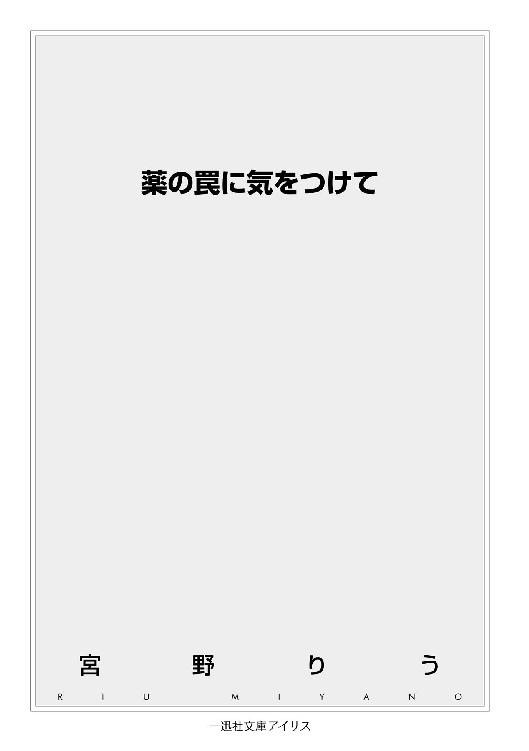
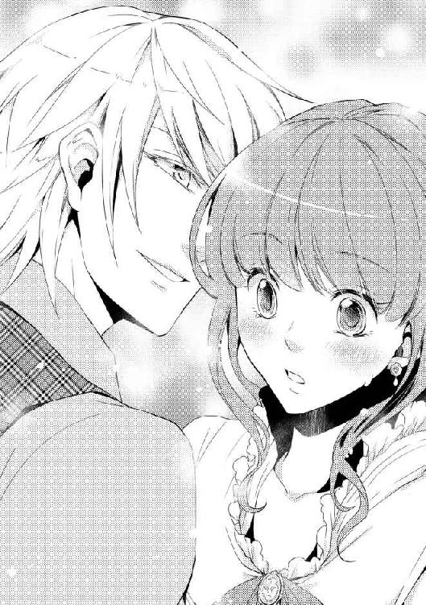

| 薬の罠に気をつけて: 1 (一迅社文庫アイリス) | |
| 宮野 りう | |
| (2014) | |

イラストレーション ◆ ひだかなみ
薬の罠に気をつけて
まわりを石の壁に囲まれた部屋の中、壁につけられたろうそくの灯だけがゆらゆらとあたりの様子をうつしだし、薬品棚とそこに置かれた瓶を怪しく照らし出した。
どこからともなく臭うツンとした刺激臭は、この部屋にある何十という種類の薬草のためか、それともカビが浸食しているためかは、薄暗い室内ではそれをはかり知ることはできない。
部屋の奥、重いカーテンの隙間から影がぬっと姿を現す。
薄明かりに照らされた少女の赤毛がびくりと揺れると同時に、座っていた三脚の椅子が大きく音をたてた。
黒いローブをすっぽりとかぶったこの部屋の主は、怯えている様子の少女を気にすることもなく、向かいの椅子にゆっくりと腰をおろした。
「これがその薬だよ」
ローブの端からしわしわの手が現れ、くるりと返したかと思うとその手のひらに小さな小瓶が現れた。それを長い爪を伸ばしたままの指がつまみあげる。
とろりとした液体の入った小瓶が、少女の目の前にかざされた。老婆の手の中にある小瓶は、この部屋ににつかわしくないほどに繊細な作りで、わずかな灯りを受けてキラキラときらめきを放っている。この場所でなければ、香水や化粧水の瓶かと見まごうほどだ。
ごくりと少女は息を飲む。
「この薬は材料がとても貴重なんだよ。失敗しても、もう次はないからね。それをよっくとあんたの主人にお伝え」
赤い髪を揺らしながら、少女は大きく頷いた。
「それと、この薬は飲んでから効果が出るまでに時間がかかるからね。薬っていうのはね、飲んでから効果が出るまでに時間がかかるものなのさ。十分体にまわって、ここに到達するまでにね」
ヒヒヒと笑いながら、ぬっと伸びた長い爪が少女の心臓部に押し当てられる。鋭い爪先を衣服越しに感じ、少女の額から汗が一筋つたい落ちた。
「どのくらい、かかるんですか？」
からからに干上がった喉から、かすれた声で尋ねる。
「一概には言えないね。ほんの一瞬かもしれないし、かなり時間を要する人間もいるだろう。その時間ずっと一緒にいれば成功するんじゃないかい」
数時間の間、ずっと。それはかなり厳しい条件なのではないだろうか。
少女の思考を読んだように、ローブから見える口元がにやりと笑ったようにゆがむ。
「失敗を恐れて使わないのも一つの選択だよ」
そのほうが相手のためだしね、と言葉を続ける。
「だが、もし成功すれば......」
ゆっくりと持っていた小瓶を机の上に置く。静まり返った部屋の中に、コトリという硬質な音がやけに大きく響いた。
「相手の心は、あんたのものだ」
赤毛の少女が出て行った扉を見たまま、老婆は椅子に座ったまま大きくため息をついた。
「これでいいのかい」
誰に問うでもなく発した言葉に促されるように、背後のカーテンから先ほどとは別の娘が姿を現した。首まできっちりと覆われたグレイの服の上で、肩で切られた黒い髪がさらりと揺れる。
「ええ、ありがとうございました」
「まったく、あんたの主人もなにを考えているのやら。大事な薬をあんな娘に渡しちまうなんてね」
なにも答えない少女に、老婆はやれやれと肩をすくめた。
「まあいいさ、あたしには関係ないことだ。ほれ、あんたにはこっちだったね。持っていきな」
老婆の差し出した小さな小瓶。黒髪の少女はそれを受け取ると、静かに頭をさげた。
＊
バード公爵家の従者であるロイドは、彼の主人である公爵をさがしていた。
彼が今いる場所、ルノワール伯爵邸ではもうすぐ夜会が始まろうとしていた。爽やかな初夏の風が吹く中、夜会が始まろうという時刻にあってもまだあたりは明るさを残している。夕暮れが近づきあたりは少しずつ暗くなってきているが、美しく灯りをともされた庭園を堪能している人たちも多い。
ホストであるルノワール伯爵夫人にあいさつをすませたゲストたちは、本格的なダンスが始まる前に庭やホールで知り合いと話したり、それぞれに紹介を受けたりとあたりをにぎわせていた。
まだ人目につく場所にいてくれればいいのだがと、ロイドは大きくため息をつく。暑さで息苦しさを覚え、きっちりとボタンをしめた首元に指を入れて緩めると、汗ではりついた額の茶色の髪を払う。
ゆっくりとあたりを見渡すが、目的の人物は見当たらない。ここには客人用として休憩するための個室が多く用意されている。そこに入っていれば一つ一つ確かめるためにかなりの時間を費やすことになるが、それをしている時間の余裕がないためロイドはかなり焦っていた。
足早に歩を進め渡り廊下を横切ろうとしたとき、奥の庭から女性たちの歓声のような声が聞こえた。ロイドは足を止め、声のしたほうへと首をめぐらせる。
夜会の間、従者が駆け回るのは決してほめられた行為ではない。しかし、公爵家の従者として十分訓練されたロイドは、そのことを失念していたような猛スピードで声のしたほうへと走って行った。
「公爵、もうすぐダンスが始まりますわ。今宵のお相手はもうお決まりですの？」
「お決まりでなければ、ぜひわたくしと」
「いいえ、ぜひわたくしと踊ってくださいませ」
「わたくし、今日のために一生懸命ダンスの練習をしてきましたのよ」
たくさんの妙齢の女性が集まっているその中心に、彼のさがしていた人物がいた。
さらりとした金色の髪の青年は、女性たちより頭一つ分以上の身長差があり遠目でもよく目立つ。金の刺繍で縁を彩られたパールホワイトのコートを身にまとった今日の公爵は、女性が夢見る王子さまをそのままうつしだしたような出で立ちだ。
「ありがとう。僕の体が一つなのがとても残念だ」
にっこりと笑う公爵に、まわりからは甘いため息と歓声が起こった。
若き独身の公爵は、今日も女性たちからの人気は絶大なようである。
近づいてくる従者に気がつき、バード公爵フィオン・アルファードは、おや？ という表情で彼を見た。いつもならこういう場所で邪魔をすることなどないのだが、今日はやたらと険しい顔をしている。
フィオンの視線に気がつき、まわりの女性たちもロイドのほうに視線をむけた。注目を浴びる中、ロイドはきっちりと臣下の礼をとる。
「お話し中申し訳ございません。フィオンさまに至急の用件がございます。お楽しみ中すみませんが、ご足労願ってもよろしいでしょうか」
「こんなところでかい？」
夜会は社交の場である。そこに従者が割って入ってくることなど本来許されることではない。だが、それを中断させてまでも自分に報告しなくてはならない事項とは......。
フィオンはロイドをじっと見る。しばらくの沈黙。
「わかった、行こう」
「ありがとうございます」
フィオンとロイドのやりとりに、まわりの女性たちがざわめく。
せっかく公爵の目にとまるチャンスだったというのに、それがつぶされてしまうわけだ。
「行っておしまいになるんですの？」
「申し訳ありません。みなさんとの楽しいひとときを、ここで中断するのはとても残念なのですが」
まわりの女性たちをゆっくりと見わたしながら微笑みかける。
「またの機会がありましたら、ぜひに」
フィオンのやわらかい笑顔に女性たちのため息がもれる。多くの熱いまなざしを受けながら、フィオンはロイドを伴ってその場を離れた。
客室として用意された休憩室に入ったフィオンは、そこに置かれたソファに腰をおろした。足を組み、背もたれに体をあずける。
「いいタイミングだったね」
廊下で伯爵家のメイドになにやら言づけし、グラスとポットの乗った盆を受け取り室内に入ってきたロイドにフィオンは話しかけた。
いつもは遠巻きに見ているしかない女性たちも、今日のホスト、ルノワール伯爵夫人の紹介によりフィオンに話しかける機会を得た。何度か話したことがある令嬢も含め、ここぞとばかりに若き公爵の目にとまろうという女性たちに、かなりの人数囲まれてしまっていたのである。
あの状態のままダンスが始まったとき、誰を選んだ選ばないで話題にされるのかと思うとぞっとしない。
「楽しまれていらっしゃったように拝見しましたが......」
「女性と話すことは楽しいけれどね」
問題は、結婚相手を誰にするかと目を皿のようにしてフィオンを見ている人物が多いということだ。実際今日の夜会にしても、フィオンの結婚相手をあてがう目的が見え隠れしている。
「フィオンさま、ご気分はいかがですか？」
「気分？」
「はい。なにかいつもと変わったような症状はありませんか？」
顎に手をあて、フィオンはしばし考える。
「いや、特にはないよ」
それがいったいどうしたというのか。
「それより、至急の用件があったんじゃないのかい？」
フィオンの問いになにも答えず、ロイドはテーブルの上に置いたグラスに水を注いだ。
「水を飲まなければ話が聞けないほど、僕は酔ってはいないよ」
「酔い覚ましのためではありません。お話ししますから、とりあえずお水をお飲みください」
ロイドをじっと見つめ、フィオンは大きくため息をついた。
ロイドの性格はよくわかっている。フィオンにとって、公爵家にとってなにが最善であるかを一番に考えている彼をフィオンは信頼していた。
体を起こしてグラスを持ち上げる。
喉の渇きは覚えていないが、言われるとおりにそれを口に運んだ。
「もうすぐ医師もまいりますので、それまでたくさん水を飲んで」
どこから出したのか、大きめの金属製の容器をフィオンの目の前に置く。
「ここに吐いてください」
言われた言葉に、フィオンは吹き出しそうになった水を慌てて飲み込んだ。慌てたため、気管に入った水によって激しく咳き込む。
「げほっ、ごほっ、ロイ......、なにを言って......」
激しくむせて涙目になりながら、水をこぼさないようにと自分の手からグラスをとって背中をさすってくる従者をにらむ。
息をするのが精一杯で、にらむ以外は言葉にならない。
なんとか咳がとまり、肩で息をしながらフィオンはソファにもたれかかった。
「先ほどフィオンさまの飲み物に薬を入れたというものを捕らえました」
頬杖をつきながら、フィオンはロイドの報告を聞く。
「薬？」
「はい。どの時点で服用されたのかはまだ調べがついておりませんが、落ち着きましたら本日どのようなものを口にされたのか教えていただきたいのです」
「薬、ねぇ」
たいして興味もないように、フィオンはそうつぶやいた。
バード公爵フィオン・アルファード。
現在公爵位にあり臣下の礼をとってはいるが、現王パトリック・アルファードの腹違いの弟である。
王家に名を連ねるものとして、毒に耐性をつけるための訓練はしている。たとえ飲んでいたとして、今の今まで症状が出なかったのだから、そんなに大騒ぎするようなことなのだろうか。
ロイドが差し出したグラスを再度受け取り、水を飲む。
この場で吐く気はもうとうなかったが、薬を飲んでいたとして体内濃度を低下させておくことに依存はない。
しかし、今日口にしたものに違和感を覚えたものはなかったが、薬など本当に入っていたのだろうか。
「味も、臭いもなしか」
一応、ひととおりの毒物の知識ぐらいあるつもりだが、これだけ症状が出ないのは薬を入れたものを摂取していなかったと思うほうが自然ではないだろうか。
「症状が出る時間は人によって違うそうです」
フィオンの考えを読んだようにロイドが答えた。
「それで、どんな薬を入れたと犯人は言っているんだい？」
一時の沈黙。
「それは......『惚れ薬』だそうです」
「は？」
惚れ薬。
毒薬ではないが、しかし......。
「申し訳ありません！」
やおら大きく声をあげると、ロイドは九十度に体をまげて頭を下げた。
「私がもっとまわりに目を配っていればこんなことには」
惚れ薬。フィオンに飲ませて彼を自分の虜に......という作戦だと考えられるが、しかしそれは好きな相手を自分のものにする以上の意味が生じる。フィオンの結婚については、妙齢の令嬢だけでなく、王弟の権力を利用したい面々や、国内の情勢をうかがうものにとって注目すべき事態なのである。
バード公爵か、それとも王弟としてか、はたまたフィオン本人か、どれを狙っての犯行か。どの縁談にもいい返事をしないフィオンに、業を煮やしたものがいたということだ。
目の前で頭を下げるロイドに、フィオンは大きく息を吐いた。
本当に飲んだとして、『惚れ薬』の効果はどうやらまだ出ていないようだ。
「頭を上げて。まだ薬の効果は出ていないようだし、なんとかなるだろう」
ゆっくりと顔を上げたロイドとフィオンの視線が合った。
「ところでこのまま二人でいると、僕はロイドに惚れる可能性もあるのかな？」
にやりと笑って言われた言葉に、ロイドが固まった。背中を冷たい汗が流れる。
可能性は、なくも、ないが......。
「冗談だよ」
気心が知れている相手といっても、さすがに男は遠慮したい。
視線をはずしたフィオンに、ロイドは呪縛を解かれたように力を抜いた。
ドアをノックする音が室内に届いた。ロイドが扉を開けると、そこには公爵家専属の医師と公爵家の従僕の二人が立っていた。医師は顔を隠すように大きな布で口元を覆い、頭もすっぽりと布の袋をかぶり室内に入る。出ているのは目だけという出で立ちは、薬の効果がいつ現れるかわからない状態で、不用意に相手に顔を見られないための手段である。
なるほどと、先ほどフィオンに言われたことを気にしていたロイドは、自分の胸ポケットからハンカチーフを取り出すと、三角にたたんで口元を覆い後ろで縛った。
「フィオンさま、医師がいらっしゃいました。診察を」
布越しで少しくぐもった声になりながら、ロイドはフィオンに声をかけた。
診察のために医師をフィオンのそばに案内するが、フィオンはソファに座ったまま、まったくこちらを振り返る様子もない。
「フィオンさま？」
再度呼びかけるも、返事がない。
フィオンが見ている視線の先は、窓。そのカーテンが大きく揺れている。
「どうかされましたか？ 公爵」
医師が呼びかけるもまったく反応のないフィオンに、まわりにいたものは一様に息を飲んだ。
まわりを見もせず、ただ一点を見ていたフィオンがすっと立ち上がり、窓に向かって歩いて行く。止めに入ろうとロイドが動いたのと、フィオンがカーテンを開けたのは同時だった。
これから夜会が始まろうとしている邸内では、建物やホール、その周辺に灯りがこうこうと灯されている。そのため、窓からの景色もよく見える。
その一点をフィオンはじっと見つめていた。
「公爵！」
背後で医師が大きく声を張り上げた。
やっと気がついたように、フィオンが振り返った。その眼は、なにかに驚いたような、信じられないものを見たようなそんな表情を浮かべている。
「公爵、『なに』をごらんになりました？」
今、彼が見つめていたもの。
問われた答え、それを確かめるようにフィオンはもう一度窓の外に視線を向けた。目的のものをさがすように視線をさまよわせ、そして......。
くるりと踵を返し、フィオンは走り出した。
止める間もなく部屋を飛び出し、廊下で歩いていた人にぶつかりそうになるのをするりとよけ走り去る。
慌ててロイドや従僕も追いかけるが、従僕はメイドにぶつかり、メイドの運んでいたグラスが絨毯へと転がった。それを横目で見ながら、ロイドはフィオンの後を追いかけた。しかし、その距離はかなり開いている。
部屋に一人残された医師は、先ほどまでフィオンが見ていた窓の外を見わたし、ため息をついた。
とうとう薬の効力が現れてしまったか。
問題は、彼が誰を見ていたのか......。
＊
ルノワール伯爵夫人へのあいさつを終えたコレットは、庭園の灯りの中によく見知った顔を見つけて頬を緩めた。
伯爵夫人は現王妃の父方の叔母にあたる人物である。貴族の令嬢のレディ教育に熱心な夫人ということもあり、今日の夜会には妙齢の女性が多く集まっている。伯爵夫人自ら教育した女性たちをお披露目する目的もあるため、そんなに堅苦しくないパーティーではあるが、そこは王妃の叔母である。参加者の面々にはかなり身分の高い人物も少なくない。
マカリスター男爵家の娘であるコレットは、三年前に子爵家へとお嫁に行った姉のつてで、ルノワール伯爵夫人のレディ教育に参加させてもらった。そのため今回の夜会への招待を受けていた。
ルノワール伯爵夫人との面識はあるものの、地方の小領主であるマカリスター男爵家は高位の貴族には知り合いが少ない。
心細い中、見知った顔を見つけてほっと息を吐く。思っていたよりも緊張していたらしい。
コレットの視線に気がついたコールフィールド伯爵家令嬢のエリサは、あでやかな笑みを浮かべて振り返った。
「お久しぶりね。最近あまりお見かけしなかったけれど、どうかなさったの？」
給仕から飲み物を受け取ると、エリサが口を開いた。
「婚約の準備が忙しかったのかしら？ それなら、わたくしには経過を報告していただきたかったわ」
名門コールフィールド伯爵家のお嬢さまらしく、少しつんとした口調で話しかけるが、親友をからかうような表情のためか見下した感じはしなかった。
「実は......」
コレットが口を開きかけたのと同時に、近くで歓声があがった。庭園の中、綺麗に手入れをされた木々や花のアーチなどにさえぎられ、どこから歓声が聞こえたのかはわからない。
「なにかあったのかしら」
「ああ、今日はバード公爵がいらっしゃってるから」
「バード公爵さま......ですか？」
コレットは小首を傾げた。
バード公爵といえば、前王妃の父親にあたる。かなりの年齢になっていたと思うが、こんな若い人の多い夜会に参加するのだろうか。でも、ルノワール伯爵夫人の兄であり、現王妃の父親でもあるローレン侯爵はバード公爵家の姫君を妻にとられたのだから、親族として出席してもおかしくないか。
「違うわ。バード公爵は代をかわられたの。現在公爵位はフィオンさま」
「フィオンさまって......」
「そう、王弟フィオン・アルファードさまよ」
王弟フィオン・アルファード。
前王とバード公爵家の姫との間に生まれた王子であり、現在の王とは腹違いの兄弟にあたる。
前バード公爵には姫が二人。一人は前王の後妻となりフィオン王子が生まれる。もう一人の姫はローレン侯爵家へと嫁ぎ、その子供が現王パトリック・アルファード、フィオンの兄の妻である。
実質跡継ぎがいなくなったバード公爵が、王妃となった娘の子供、フィオン・アルファードに正式に公爵位を譲り渡したのは去年のことだった。
そういえば、父親であるマカリスター男爵がそんなことを話していたことをコレットは思い出す。
「結構噂になっていましたのよ。フィオンさまは独身男性の中でも一番の注目株ですもの。以前からみんなの噂の的でしたしね。まぁ、婚約者のいるコレットはあんまり興味がなかったでしょうけれど」
話していて、エリサはコレットの様子が少しおかしいことに気がついた。
なにかいつもと違う。
「少し歩きましょうか。まだ時間もあることですし」
近くのテーブルに持っていた飲み物を置き、エリサはコレットを庭園の奥へと促した。
薔薇のアーチを抜けると、あたりの人影もまばらになってきた。その先にある四阿に腰をおろす。
「なにかありました？」
「え？」
「わたくしにわからないと思いまして？」
エリサの問いに、コレットは困ったような笑みを返す。
「実は......、婚約の話はなくなったんです」
「はあ？」
耳にしたことが信じられないと言ったように、エリサはその青い瞳でコレットをまじまじと見つめた。
「婚約者が王立学校を卒業したら正式に婚約するとおっしゃっていたのは、ついこの間のことでしてよ」
エリサの反応に、コレットは悲しそうに瞳を伏せた。
婚約。それは正式にしていたものではなかった。
婚約者であるアッカーソン男爵第二子息であるキースが王立学校を卒業したら正式に発表すると、両家の間で二人が幼い頃から口約束となっていたことだ。
今年の春にキースは王立学校を卒業した。春から初夏にかけて、王都では社交シーズン真盛りとなる。その際に王に許可を受け、正式に婚約を発表する予定となっていた。
しかしよりにもよって、婚約相手のキースに子供ができたというのだ。
相手については詳しくはわからない。父親もかなり腹を立てていて、コレットに詳しく話すことはなかった。もし話を聞いたとしても、混乱したコレットの耳にちゃんと届いていたかはわからないが。
どうしてこんなことになってしまったのか、コレットにはわからなかった。
なにが悪かったのだろう。
確かにここ数年キースと会うことは少なかった。でも、それはキースが卒業にむけて王立学校での勉強が忙しかったからだと聞いていたのに、実はそうではなかったのだろうか。
しょせんは親が決めた婚約である。長年の間彼にも考えるところがあったのかもしれないが、真相はわからぬまま。父親のあの剣幕では、キースと直接会うどころか手紙のやりとりも無理だろう。
結局コレットはなにもわからないまま、婚約解消へといたってしまったことになる。
幼馴染でもあるキースはコレットにとって優しい兄のような存在だったのに、その彼がまさかこんな形で自分から離れていくなんてどうして想像できただろう。
おおまかに婚約解消の話を聞いたエリサは、ちらりとコレットを見る。
友人としての欲目ではないが、コレットに大きな欠点があったとは思えなかった。だいたい、この婚約に異論があったのなら、最初から別の理由で婚約を解消すればよかったのだ。家同士の約束ならば、それは本人たちの問題よりも家同士の問題となる。それを土壇場になって他に女ができたから別れたいなんて、どうみても相手の男が悪い。
会ったこともないが、エリサの中でキースの印象は最悪だ。そんな男のために、コレットがこんなに落ち込んでいるのが頭にくる。
「コレット、そんな男はこちらから願いさげです。もうお忘れなさい」
どうあがいても、あがけばあがくほどコレットの評判は落ちる。
正式に婚約していなかったのが幸いだったというべきだろうか。口約束だけのことなので、婚約の話を知っているのはごくわずか、限られた人物だけだろう。相手方としては自分のほうに非がある醜聞である。お互いにとって公にしたくない事情もあり、これならコレットの将来へも影響は少ないはずだ。
「今日はいろいろな男性もいらっしゃっていることですし、嫌なことは忘れて楽しめばいいですわ」
今まで婚約者に操だてして、あまり他の男性と親しくすることがなかったコレットである。新たな出会いをさがすのには、今日この場は絶好と言ってもいい。
「気づいていらして？ 先ほどからあなたを見ている男性、多いんですのよ」
コレットの手をとり、エリサは立ち上がった。冗談めかしたエリサの口調に、コレットはくすりと笑う。
「それはわたしではなくて、エリサを見てるんです」
濃い金色の髪に青い瞳、爽やかなブルーのドレスは、エリサの美しさを引き立たせていた。お嬢さま的なつんとした印象はあるものの、エリサはかなりの美人である。
「まぁ、自分のことをわかっていないのね」
エリサはそう言うと肩をすくめた。
幼い頃から見られることには慣れているエリサである。相手が自分を見ているのかそうでないかくらいすぐにわかる。
艶やかな栗色の髪に、琥珀色の瞳。コレットが今日着ているやわらかな若葉色のドレスは、ちらりちらりとあしらわれた白いレースや刺繍もあいまって、彼女をとても可愛らしく見せている。派手な印象のエリサとは対照的に、コレットには可憐な花を思わせる美しさがあった。
まわりの視線に疎いのは、幼い頃から婚約者一筋だったのだから仕方のないことか。
「仕方ありませんわね。今日はたっぷりとコレットにつき合ってあげますわ」
「くすくす。よろしいのですか？ お目当てのお方を放っておいて」
「あの方は今日いらっしゃらないのよ。だからって静かに待っているなんてわたくしの性に合わないわ。あの方がわたくしを選ぶのではなくて、わたくしがあの方を選ぶのですから」
自分は選ぶ立場なのだとはっきりと言うエリサが、コレットにはまぶしかった。
伯爵邸の近くまで戻ると、夜会の開始も近いことから多くの人が集まりだしていた。
高くなり始めた月が、その色を濃くしていく。もうすぐ満月も近い。少しずつ太陽の時間から月の時間へ。空が夕焼けを残した赤紫から徐々に月明かりを含む群青色へと変化していく。
月に目を奪われていたコレットは、ふとなにかに気がついたように人の波を見渡した。
「どうかしまして？」
「え？ いえ、なにか、今声がしたような気が......」
コレットが言い終わらないうちに、あたりがざわめき始めた。
まわりも気がついたらしく、人々の視線がざわめきのほうへと注がれる。ざわめきが大きくなるのと、人垣が割れるのはほぼ同時だった。
始めにコレットの目に飛び込んできたのは、明るいプラチナブロンドだった。走ってきたのだろうか、パールホワイトのコートを着た肩が少し揺れている。
人波の間をぬけて現れたその人は、誰かをさがすように視線をさまよわせた。
コレットと視線が重なる。その瞬間瞳が驚いたように見開かれ、そしてはじかれたように笑顔がこぼれた。
まっすぐにコレットの前に進んだ彼に、あたりはなにが始まるのかと静まりかえった。さっきまでのざわめきが嘘のようだ。
自分を見つめてくるエメラルドの瞳に、コレットは動くことができない。
「僕と踊っていただけませんか？」
そう言ってコレットの前にひざまずいたのは、王弟フィオン・アルファードその人だった。
静かになった夕暮れの庭。彼の声だけがやけに大きく聞こえた。
いきなりのことで、コレットにはなにが起こっているのかわからない。
今目の前で自分を見つめている人物を、コレットは知っていた。いや、ここにいるもので知らない人などいないであろうその人、バード公爵フィオン・アルファード。
だが、コレットは彼と会話をしたことどころか、今の今までまともに目を合わせたこともない。そんな彼が、今目の前で自分にひざまずいているのだ。
ひざまずく行為は、自分にとって目上の人物に行われるのが常識である。王弟であり、バード公爵の爵位を持つ彼がその行為を行うべき人物といえば、王と王妃、そして現在は隠居してバード公爵の領地で生活をしている前バード公爵ぐらいだ。
身分の上下に関係しないとすれば、それは婚約者や伴侶、恋人に対してであるが......。
固まっているコレットの隣で、ふうとため息が聞こえた。
「彼女とお知り合いだったなんて、初耳でしたわ。公爵」
声のしたほうにフィオンの視線がうつった。視線の呪縛から解放され、コレットの肩から力が抜ける。
声の主、エリサに気がつくと、フィオンは立ち上がり軽く会釈をする。エリサもそれに応えるようにドレスのすそをつまみ、小さく腰をかがめてあいさつをした。
「お久しぶりですね。エリサ嬢」
「公爵にもご機嫌うるわしゅう。お噂はいろいろお聞きしていますわ」
名門コールフィールド伯爵家の令嬢であるエリサは、王弟の前でも臆するところなどない。
少しだけ肩をそびやかし、フィオンが笑う。
「どんな噂となってエリサ嬢のところへとどいているのでしょうね」
「ところで、彼女とはどこでお知り合いになりましたの？」
エリサはにっこりと笑って話題を変え、フィオンとコレット両方に視線を送った。
「本日が、初めてです」
「初めて......ですか？」
微笑みながら答えるフィオンに対し、彼女の親友はわけもわからないといった表情で小さく頷いている。
「公爵。紹介もなしにでは、彼女も驚いてしまいますわ」
「あっ、そうですね。申し訳ありません」
「い、いえ」
にっこりと微笑まれて謝罪されれば、コレットはそう答えるしかない。
「彼女はコレット・マカリスター。マカリスター男爵家の令嬢でしてよ」
「はじめまして、コレット嬢」
フィオンは自分の胸の前に片手をそえ、優雅に一礼した。慌ててコレットも腰を落としてあいさつを返す。
「は、はじめまして。お会いできて光栄です、バード公爵」
「僕をご存知なのですね」
知らない人がいるのだろうか。
そう思ったが、あまりに嬉しそうに笑うので言い出せない。
「コレット嬢、僕と踊っていただけませんか？」
あらためて、フィオンはコレットに申し込む。返事に困っているコレットの視線が、無意識にエリサのほうに動いた。それにフィオンが気づく。
「コレット嬢をおかりしてもよろしいですか？」
少し引き気味に小さくなっているコレットをエリサはちらりと見ると、すぐにフィオンに向き直りにっこりと微笑んだ。
「コレットはわたくしの大切な友人ですのよ？ 公爵」
「はい」
「あまりいじめないであげてくださいね」
「エリサっ！」
助けるどころか、フィオンの側についた友人の名を、コレットは抗議をするように呼んだ。急に声を上げ二人の注目を浴びることとなり、コレットは赤くなってうつむく。
「もちろん、そのくらいの良識は心得ているつもりです」
エリサに答えると、フィオンはコレットにしっかりと向き合って、そっと彼女の前に手を差し出した。
「コレット嬢、僕に今宵のあなたのお時間をいただけませんか？」
その手と、フィオンの顔を交互に見つめる。
「コレット」
耳元でエリサに促される。
ちらりとエリサに非難の目を向けたあと、諦めたようにコレットはフィオンの手をとった。
こうなった以上、ここから逃げることなどできない。
彼女の手をとり自分の腕と組む形をとると、フィオンはコレットににっこりと微笑んだ。間近でとろけるような幸せな笑みをうけ、コレットの頬が無意識に赤く染まる。
まわりが再びざわめき始める中、二人は伯爵家の広間へと足を進めた。
広間へ入ると、まわりの視線は一気に二人に注がれた。それもそのはず、本日一番の注目人物、王弟であるバード公爵が女性を伴って現れたのである。
どこの令嬢なのか、公爵とはどのような関係なのか。いろいろと憶測の言葉が飛び交う中、そんなざわめきを気にもとめず、フィオンはコレットを連れたままルノワール伯爵夫人のところまでやってきた。
「まあ、公爵。コレット・マカリスター嬢とお知り合いだったのですか？」
「ええ、先ほどから」
そう言ってコレットに微笑みかけるフィオンに、あらあらといった感じでルノワール伯爵夫人は肩をすくめた。
広間にダンスのための音楽が流れた。
「コレット、少しだけ公爵をおかりしますわね」
恋人たちの間に割り込むのは無粋なことだが、パーティーの開始時はホストのダンスから始まるのが常である。
ホストは自分のパートナーか、または失礼にならないようゲストの中でもっとも身分の高い人と最初にダンスを踊る。今日の伯爵夫人の最初のお相手は、ゲスト。優先すべき賓客、つまり夫人の最初の相手は王弟であるフィオンである。
慌ててフィオンの腕から自分の手を離そうとしたコレットより先に、フィオンはそっと彼女の手をとった。しっかりと握りしめたまま、そっと顔をよせる。
「少しだけ待っていて」
まるで恋人同士のように耳元でささやかれ、コレットはどうしていいのかわからないまま頷くしかなかった。
「公爵、大丈夫ですの？」
ダンスを踊りながら、ルノワール伯爵夫人はフィオンに声をかけた。
まわりも少しずつダンスに加わり始めている。音楽の音色にダンスの足音、広間のまわりに集まっている人々のざわめきで二人の会話がまわりに聞こえることはない。
「ああ、伯爵夫人はご存知なのですね」
フィオンに薬が盛られたことを......。
いつの時点で薬を服用したのかはわからないが、王弟であるフィオンに薬が盛られたのである。本来なら夜会を中止するべきなのだろうが、服用したのが『惚れ薬』ということから、彼がこの屋敷内にいる時点でまわりに知られることは、若い女性も多いこの場では危険が伴う可能性があった。
公爵はまわりに気がつかれないように伯爵邸を後にし、両家の家臣により夜会の参加者にいるであろう主犯をさがすと報告を受けていたのだが。
「申し訳ありません。こちらの事情で伯爵夫人にはご迷惑をおかけすることになってしまいました」
伯爵邸が事件の現場となってしまったのである。せっかくの伯爵夫人主催の舞踏会を台無しにする以上に、彼女の評判を落とすことにもなりかねない。
「まぁ、ご心配いただいてありがとうございます。でも、こちらの心配よりも、公爵のほうが大変なのではなくて？」
「......そうですね」
公爵家としても当主の一大事であるが、王弟への不逞の行いでもある。王家としても黙っているわけにはいかないだろう。
「彼女ですのね」
フィオンが選んでしまった相手は。
優雅に伯爵夫人をリードしながら、フィオンは視線をコレットに向けた。
広間にフィオンとともに現れた少女である。そのためまわりも遠慮したのか、彼女をダンスに誘おうという人物はいなかった。まわりの人間と少し距離を置いて一人立っている。
彼女の姿を見るだけで、フィオンの胸に熱いものが湧き上がってくるような感情が起こる。これが本当に薬のためだというのなら、ものすごい威力である。
それでも......。
「伯爵夫人には、困ったときに恋愛指南をお願いするかもしれません。そのときはよろしくお願いします」
にっこりとフィオンが微笑む。
コレットと知り合いである伯爵夫人なら、的確なアドバイスももらえるかもしれない。
フィオンの言いたいことがわかり、伯爵夫人は目を丸くした。
口を開こうとしたとき、ぴたりとフィオンの動きが止まる。気がつかないうちに、一曲目が終了していたらしい。優雅に礼をし自分から離れていくフィオンを、ルノワール伯爵夫人は目で追っていく。フィオンはまっすぐにコレットの前に行き、声をかけていた。
コレットのことを知っているルノワール伯爵夫人には、コレットが犯人でないことがわかる。
彼女はそこまでして彼の気を引くほどバード公爵に興味がなかったはずだ。他の女性が姦しく噂をする中、彼女の中では他に相手が決まっていたように見えたが......。
薬を飲んだことを自覚した上でのフィオンの行動に、伯爵夫人はまわりに気がつかれないくらいに小さくため息をついた。
コレットの元へ戻り彼女の手をとると、フィオンは広間の中央へと進み出た。
王弟である彼が通る場所は、まわりの人々が失礼にならないようにすぐに場所を空けるため、たくさんの人が集まる広間でも誰にぶつかることも、ましてや歩調を緩めることも必要なく目的の場所へ行くことができる。
彼女の手に少し力が入ったことに、フィオンは気がついた。コレットは緊張のためか、少し不安そうな表情をうかべまっすぐ前だけを見つめている。
「緊張してる？」
「えっ？ は......はい。こんなにたくさんの人の前で踊るのは初めてなので」
緊張の大半の理由は目の前にいる人物のためなのだが、あえてコレットはそのことには触れなかった。
「ふふ、大丈夫。しっかりリードするから、まわりを見ずに僕のことだけ感じていて」
そっと耳元でささやくと、フィオンはコレットの手を包み込むように握り、そっと腰に手をあてる。今まで何度となく行ってきた行為だというのに、やけに緊張していることにフィオンは気づいた。
そんな自分がおかしくてくすりと笑うと、コレットが不思議そうに自分を見つめた。どうしたのかと問うように少し首を傾げたしぐさが可愛らしい。それに答えるように、フィオンはにっこりと微笑み返す。
ダンスの曲が始まる。自分の手にすっぽりと納まってしまうような小さな手を強く握ったのを合図に、ゆっくりと最初のステップを踏み出した。
くるりくるりと舞う姿は、まるで触れようとするとするりと逃げてしまう風に舞う花びらのようだとフィオンは思った。
ピンク色がかったトパーズのイヤリングが、ダンスのステップを踏むたびにきらりきらりと揺らめいて光る。結い上げられた艶やかな栗色の髪には白いジャスミンの花が編みこまれていて、甘い香りがフィオンの鼻腔をくすぐった。
花の香りだけではない甘い匂いに、頭の芯がしびれたような感覚がする。
もっと強くこの手に捕まえて、その甘い香りを思う存分確かめたくなるのをぐっとこらえる。
ダンスのためだろうか。そのすべらかな頬が赤く染まっていく姿がとても愛らしい。
少しずつ緊張がとけ表情がやわらかくなってきたコレットから、フィオンは目を離すことができなかった。
舞踏会の次の日というのは、どこの貴族の館でも朝が遅いのが常である。王都の東部地区にあるマカリスター男爵家でもその常のとおり、遅い朝食が始まる頃には日がだいぶ高くなっていた。
ただいつもと違うことがあるのならば、そこにエリサ・コールフィールドの姿があったことだ。
天気もいいので、テラスのテーブルについて二人は朝食を兼ねたティータイムをとる。給仕のメイドが、二人の前に甘めのミルクティーとパン。色とりどりのジャムに、ふわふわの卵やきを並べていく。
「それで、昨日はどうでしたの？」
飲み物を運んできたメイドが席をはずすと、待っていたかのようにエリサが口を開いた。
その質問にコレットは びくっと体を震わせる。
今日男爵家を訪問するむねの連絡をうけとったとき、その質問がくることは予想はしていたが......。
友達を進んでフィオンにあずけたエリサであるが、さすがにどうなったのかが気になっていた。
昨日の夜会、落ち込んでいたコレットの気分を晴らすのにバード公爵は絶好の相手だった。
普段、コレットと公爵が出会う機会などほとんどない。正確には、会ったとしても紹介がないと言葉も交わせないため、知り合いになるチャンスはかなり低くなる。それがどうしたことか向こうから声をかけてきたのだ。
王家の人間とのつながりを持てるのであれば、今後の社交界でコレットの立場も高くなるし、それに相手はあのバード公爵である。
今をときめく噂の公爵は、物腰やわらかで、人あたりもいい。プラチナブロンドに明るいエメラルドの瞳の見目麗しき王弟殿下なら、ダンスを踊っている間ぐらいコレットの気分を晴らしてくれると期待してのことだったのだが......。
ダンスを踊っている間のこと、というレベルの話ではなかったのである。
「あの後二人でいなくなったから、かなり噂になってましてよ」
「あれは、少しお話をしていただけで......。そんなに噂になってました？」
不安そうに尋ねるコレットに、エリサは真剣な表情で頷いた。
ダンス一曲のことだと、誰もが思っていた。が、その後パートナーを変えることなく三曲のダンスを踊ったバード公爵は、ダンスの順番を今か今かと待ち構えていた令嬢たちを後目に、二人でテラスの外へと姿を消したのである。
その少女以外目に入らないといった状況の公爵に、噂が大きくならないわけがなかった。
エリサの表情にコレットは大きくため息をついた。
ダンスは確かに楽しかった。
バード公爵は、とてもなれた手つきでリードしてくれたので、緊張していたコレットもまわりを気にせずにダンスを踊れるほどに楽しむことができた。
しかしその後あろうことか、バード公爵はコレットをテラスのほうへ誘い出したのだ。
本当にそこでは二人で話をしていただけだったのだが、公爵のことを気にする女性たちが遠巻きに出入りする姿が何度も視界に入ってきた。
だが、王弟であり名門バード公爵家の当主に対して、どうしてコレットから話をきり上げることができただろう。結局パーティーが終わるそのときまで、まわりから見ればコレットがバード公爵を独り占めしていたことになる。
「それにしても、本当に公爵とは初対面でしたの？」
バード公爵のコレットに対する執着の仕方は、たまたまそのとき気に入った女性に声をかけた、というレベルの話ではなかった。あのまなざしはどう見ても、恋する人のものだ。
「王弟殿下ですもの。遠くから拝見したことはありましたけど」
今年社交界にデビューしたばかりのコレットは、王族が列席するような公式行事に参加できるほどの立場にはいない。王や王妃に拝謁した際、ちらりとバード公爵の姿を見たくらいである。
初めて会ったばかりだというのに、何がどうしてああなったのか、コレット自身さっぱりわけがわからない。
「一目惚れ......とか？」
「まさか」
「わかりませんわよ。もしもそうだったらどうします？」
「どうするも何もありません」
きっぱりというと、コレットは甘めのミルクティーを口にはこんだ。
「わたしと公爵では、釣り合いがとれません」
「そうかしら？」
昨日の二人の姿は、とても様になっていたようにエリサには見えたが。
「そうです。それに王弟殿下には、婚約者候補がおいでになります」
「まあ、ね」
名門貴族で年頃の娘を持っているものは、こぞって公爵に結婚の話を持ち込んでいて噂話は後を断たない。バード公爵家としてはっきりと選んだわけではないが、とある公爵家令嬢が最有力候補となっていることは、社交界では周知の事実である。
「それにしても、昨日のことはなんだったんでしょうね」
「本当に」
二人でため息をついて、顔を見合わせたそのとき。
バタン。
テラスへの扉が大きく音を立てて開いた。
見ると、肩で大きく息をしたマカリスター家のメイドが少し髪を乱しながら立っていた。
「ノーラ。お客様の前よ」
さすがのコレットも注意をするが、ノーラは慌てた様子で二人に近づく。
「も、申し訳ございません。ですがお嬢さま、た、大変です」
「なにかあったの？」
「い、今。今玄関のほうに......」
「玄関に？」
「ゲ、ゲホ。ゴホ、ゴホッ」
「ノーラ、落ち着いて。どなたかいらっしゃったの？」
「王宮からのお使いの方がっ！」
「えっ？」
驚いてコレットは立ち上がる。
「今、旦那さまがお話しなさっていますけれど」
王宮からの使い。
コレットとエリサは顔を見合わせた。
思い当たることといえば、昨日のことだが......。
「まだ仕度を始めていないの？」
先ほどノーラが出てきたドアから、コレットの母、マカリスター男爵夫人が姿を現した。
「王宮からで、王妃さまがコレットに御用があるんですって。と、とりあえず、早く仕度をして。ノーラなにをしてるの、早くコレットの準備を」
「は、はい」
ノーラは慌てて、室内に連れて行くためコレットの手をとった。
「エリサさま。本日はせっかく来ていただいたのに申し訳ありません。今ほどのお話でわかったかもしれませんが、緊急の要件がはいりまして」
「そのようですわね」
エリサが椅子から立ち上がり、コレットにそっと耳打ちした。
「また、連絡しますわ」
言われて、コレットは大きく頷くと、エリサに一礼してその場を後にした。
よほど気が動転しているのか、男爵夫人もエリサにあいさつをすませると慌ててコレットの後を追っていく。
王宮からの呼び出しは、おそらく昨日のことに関連しているのだろう。たきつけたエリサとしては、少し責任を感じる。
小さくため息をつくと、メイドに案内をさせエリサは男爵家を後にした。
＊
王宮の中、少し奥まった場所にある部屋に、王と王妃、王家直属の家臣数名が集まっていた。
重苦しい空気を引き裂くように、王がテーブルを叩く音が響く。
「まったくどういうことだ。犯人に逃げられるとはっ！」
苦々しく言葉を吐き捨てると、ギロリとまわりを見渡す。普段温厚な王だけに、怒るとかなり迫力があった。
ルノワール伯爵邸でフィオンに『惚れ薬』を飲ませたのは、メイドに扮した女だった。赤毛の女は、ルノワール伯爵邸で他の召使に混じって給仕をしていたらしい。どうも様子がおかしいので捕まえたところ、今回の事件が発覚したのだ。
犯行が途中で失敗したために、飲ませた『惚れ薬』の効果が目的の人物以外に出てしまうことを懸念しての自白だったと思われる。
その実行犯である女が、監獄から逃げ出したとの連絡が今ほど入ったばかりだった。
昨日のうちに所持品などは没収していたとはいえ、これから真犯人の究明には欠かせない人物だ。それを追及も途中だというのにみすみす逃がしてしまうとは、今後の捜査にも大きな影響を与えるだろう。
しかしこの逃走により、脱獄を助けることができるだけのものが背後についていることがうかがい知れる。
みな口にはしなかったが、頭の中には現王パトリック・アルファードに不満を持っている人物たち数人の名前があがっていた。
パトリックは隣国スロンの姫の子供である。
王妃であったスロンの姫君亡き後、現王の立場は国内においては微妙だった。後見となる人物がいなかったため、世継ぎの王子でありながらも立場は弱かったのだ。母親の実家であるスロンでは、その頃内政に問題が生じていて、パトリックの後見となる力はなかったのである。
そこに国内でも屈指の名家バード公爵の姫が、王の後妻に入ってフィオン王子が生まれた。年の離れた兄である皇太子がいるのに、フィオンを王家の跡継ぎにする意思は前バード公爵にはなかったため、ローレン侯爵家からバード公爵の外孫にあたるディアナをパトリックに嫁がせることによって、ローレン侯爵家とバード公爵家が推す形でパトリックが王位を継ぐこととなったのである。
しかし、現在国内が落ち着いたスロンが、血縁関係をもってこの国の内政に干渉してくるという懸念を持っているものも少なくない。そのため国内勢力をまとめるには、外国の血の入ったパトリックではなく、フィオンを王にと推す声は根強い。
王と王妃の間には、まだ二歳になる姫しかいないことも、その要因を強めていた。
フィオンが誰と結婚するか。
それはバード公爵家の問題だけではない。婚姻という形でフィオンを手に入れることができれば、親族としての影響力が強くなる。フィオンを王にと願う人物たちにとっては、またとないチャンスを得ることができるのだ。
今回の惚れ薬の事件。フィオン個人に対しての恋情という話だけではすまされない事情があった。
「惚れ薬ですか」
王妃がぽつりとつぶやいた。
「犯人がそうおっしゃっていたからと言って、みなさんそれをお信じになりますの？」
惚れ薬など、そんなもの本当に効果があると思っているのだろうか。
「しかし、昨日のバード公爵のご様子をお聞きする限り、かなりの急変ぶりだったとか」
昨日の様子を知るものから、そのような報告が上がっている。
「でも、それも薬のせいなどではなく、本当に恋に落ちただけかもしれないでしょう？ 薬のせいと考えるよりは自然ではなくて？」
「王妃」
王がたしなめるが、王妃はさらに続けた。
「あら、わたくしは素朴な疑問を口にしただけですわ。本物の惚れ薬を盛ったかそうでないかで、犯人のあつかいも変わってきますでしょう」
「どちらにしても、フィオンに薬物を服用させた犯人であることには変わりない。一歩間違えれば、命にかかわっていた可能性もあるのだぞ」
いかがわしい薬を飲ませた時点で、王室に対する反逆罪と取られても仕方がない。
「それで？ フィオンの相手となった女性というのは？」
「コレット・マカリスター嬢。マカリスター男爵家のご息女です。昨夜のルノワール伯爵家の夜会において、フィオンさまは片時もこの女性をお放しにならなかったようです」
「コレット・マカリスターか。どんな娘だ？」
「どう、と言われましても。マカリスター男爵家は王都でもあまり交流が少なく、そのはっきりとは......」
報告した家臣が口ごもる。
今年社交界にデビューしたばかりのコレットである。公共の場に姿を現したことは数えるほどであるし、男爵家の次女ともなればあまり人々の記憶にも残っていない。
「社交界デビュー前に拝謁にいらしてますわよ、陛下」
「会ってはいるだろうが......」
多くの貴族の子女を紹介された中の一人である。はっきり言って覚えていない。
「男爵と同じ栗色の髪をした可愛らしいお嬢さんでしてよ」
「覚えているのか？」
「フィオンのお相手にふさわしい方を、いつもさがしているのですもの。可愛いらしい女性はしっかりと覚えておりますわ」
フィオンの結婚相手について嬉々として語る王妃に、王は辟易したように肩を落とした。
「その件は、フィオンに任せておけと言っているだろう」
「でも王室にも係ることですし」
「フィオンにはバード公爵としての考えもある」
「だってわたくし、可愛らしい妹が欲しいのですもの」
すねたように王妃が答えた。
「王妃さまは、婚約者候補の方々がお気に召しませんか？」
「まあ、わたくしそんなことは一言も申しておりませんわよ。でも、みなさんが候補と目されている方々をそんなに気に入っていたとは知りませんでしたわ」
「そのようなことは......」
「ゴホン」
王が発した咳払いに、室内にいたものたちはさらに口にしようとしていた言葉を飲み込んだ。
ここで言い争っている場合でもない。
「しかし、マカリスター男爵か」
マカリスター男爵領は、王都より北東に位置するさほど大きくない領地である。領地の北側にあるレイノー山脈からの雪解け水によって豊かな土壌ができ、そのうえ代々男爵家により治水も整えられつつあることで、作物の生産も安定しているようだ。しかし、あくまで地方領主の域を出てはいない。
「あれには、無理だろうな」
今回の犯人を逃走させることは。
中央での役職はなく、社交シーズン以外はほとんどを領地で過ごしているようなマカリスター男爵に、監獄から犯人を脱出させるだけの人脈があるとは考えにくかった。
みなが一様に押し黙ったところに、フィオンの到着が告げられた。
「遅くなりました」
扉が開くと、今話題となっている人物、バード公爵フィオン・アルファードが姿を現した。王と王妃以外の家臣は、フィオンを迎えるためにみな椅子から立ち上がり頭を下げる。
「フィオン、体の具合はどうだ？」
「兄上、ご心配をおかけして申し訳ありません。僕としては特に問題はないんですけれどね」
兄である王、パトリック・アルファードに一礼すると、フィオンは王と王妃に次ぐ上座に腰をおろした。フィオンが座ったのを確認し、迎えた家臣たちも席に着く。
「本当に、大丈夫ですの？」
先ほどまで診察をしていたため、フィオンとともに入室してきた医師に王妃が問いかける。
フィオンにとって王妃であるディアナ・アルファードは現在義姉となっているが、血のつながったいとこでもある。王妃のほうが少しくせがあるものの、プラチナブロンドの髪や顔立ちなども似ており、王であるパトリックよりもディアナのほうが姉弟のように見えるほどだ。
「公爵のお体自体には、特に異常はみられないようでございます。体温や脈なども正常ですし、意識もしっかりしておられます。ただ......」
問題は、『惚れ薬』としての効果である。
「フィオン、あの夜会で誰かと会うお約束はしていらっしゃいましたの？」
事前に会う約束をしていたのなら、それを狙って犯行を行うこともできる。
「約束、ですか？ 事前に、ということでしたらありませんでした。邸内に入ってからは、たくさん声をかけられましたけどね」
パーティーのたびに、フィオンに群がる若い女性たちをこの場にいるみなが一様に思い出す。
「なにかを口にしたのは、いつだったのだ」
王の問いに、しばし考える。
「伯爵邸についてからは、二度ほどでしょうか」
夫人にあいさつをした後、参加していた友人たちと会話をしていたときに運ばれてきたもの。その後、再度伯爵夫人と会い、何人かの女性を紹介された。ホールで人だかりが大きくなると来客の妨げにもなる。そのため庭園のほうへ移動したのだが、確かそのときも飲み物を渡されたような気がする。
「ああ、従者に連れられて薬を飲まされたと聞いた後、水も大量に飲まされましたよ」
フィオンの話を聞いて、王はため息をついた。
実行犯がいない今ではどちらで服用したのかはっきりはしない。薬の効果が出るまでの時間がまちまちであるようなのではっきりとは言えないが、薬を飲ませた相手に対して犯人としてはすぐに接触を図りたかったはずだ。フィオンが飲み物を飲んだ後に会った人物を全員割り出す必要がある。
「実行犯の女をすぐにさがし出せ。それと、惚れ薬服用前後にフィオンと会った令嬢を中心に、ルノワール邸の夜会に参加していた人物を洗い出すように」
「はい」
王の命令に、臣下一同頭を下げた。
話し合いも進んだ頃、ドアをノックして王家の侍従が入ってきた。
「申し上げます。コレット・マカリスター嬢が到着いたしました」
話題の人物の名前が上がり、まわりの視線がその侍従に集まった。
「わたくしが呼びましたの」
にっこりと王妃が微笑む。
「どんな方かわからないと困ってしまいますでしょう？」
これからのことを考えても、コレットがどんな人物なのかは重要となってくる。いくら彼女が犯人である確率が低いとしても話は別だ。
「コレット嬢がいらっしゃったんですか」
嬉しそうに声を弾ませ、フィオンが立ち上がった。
「兄上、席をはずしてもよろしいですか？」
「フィオン」
王がたしなめ、家臣がざわめく。
「僕が必要なお話はもう終わりましたよね」
聞く耳を持たなそうなフィオンに、王はしぶしぶといった感じで退席を許す。
「フィオン、わたくしも後から参りますので、それまでミス・マカリスターの相手をよろしくね」
「はい。では兄上、失礼いたします」
王妃の言葉に頷き、王に一礼しフィオンは席をはずす。
噂以上の熱の入れように、王を含め家臣一同深くため息をついた。
入室してきたときは、薬を服用したことなど感じさせないほどいつもどおりの様子だった。しかし、コレットに対してのあの態度。今までの女性たちとは比ぶべくもないほどの豹変ぶりである。
「あれは薬のせいなのか？」
本当に『惚れ薬』の効果だとすれば、ものすごい威力である。
「完全なる否定は、今の段階では困難かと」
苦い表情を浮かべ、医師が答えた。
今まで女性に対しあれほどの執着を見せたことのないフィオンの態度。それを否定するためには、『惚れ薬』の効果を無効にしてみなければはっきりしない。
「解毒薬か。作れそうなのか？」
証拠品としてあげられた、『惚れ薬』の入っていた瓶をちらりと見て王が問う。
すべて使われたのか、残りは捨てられたのか、犯人を捕まえたときから瓶の中身は空っぽだった。残りから成分を割り出すことは難しい。
「薬の成分がはっきりしないので少しお時間がかかるかと思いますが、必ずや......」
それまであの状態のフィオンを、いったいどうするか。
「よろしいんじゃないかしら」
そこにいるみなの視線が王妃に集まった。
「マカリスター家が今回の事件に関与した可能性はかなり低いのでしょう？ 彼女の性格自体に問題がなければ、フィオンのことはしばらく様子を見て差し上げたら？」
「王妃......」
「お言葉ですが、王妃さま。これを黙認しておりますと、王家としての示しがつきません」
「もちろん、犯人を許すとは申してませんわ。薬の研究と犯人の特定はしっかりとしていただかないと。でも、その間ぐらいフィオンの好きにさせてあげたらどうかしら？ あの子も公爵としての自覚があった上での行動でしょうし」
......そうだろうか？
ここにいる一同、先ほどのフィオンの様子を思い浮かべて心の中でつぶやいた。
「それに、フィオン今とっても幸せそうなんですもの。好きな人から引き離すなんて可哀想でしょう」
語尾にハートマークがつきそうなほどの能天気さで、王妃はにっこりと微笑んだ。
＊
通された部屋で、コレットはそこにある絹張りのソファに腰をおろし、誰にも聞こえないくらいに小さくため息をついた。
出入り口には、王家のメイドが用件があればすぐに対応できるように控えているが、なんとも見張られているようで居心地が悪い。
そこから視線を動かすと、大きな吐き出し窓からは中庭と呼ぶには広すぎる庭園が広がっていた。明るい日の光をうけて、木々の葉がきらきらときらめいている。
以前王宮に来たときは、王と王妃に拝謁するためだった。
そのときは王宮の公の場所だったが、現在いるこの場所は王宮のさらに奥、王家の方々の住居スペースなどを主たる目的とする場所である。
（わたし、なにかしたかしら......）
王家と関係する立場に、マカリスター男爵家はいない。
そう考えると昨日のことで呼ばれたと考えるのがもっとも有力だが、バード公爵とダンスを踊っただけで王妃から直々に声がかかるとは考えにくかった。
（これ以上公爵に近づかないように言われるのかしら。......これが一番ありそうかも）
自分から率先してバード公爵に近づいたわけではないが、地方領主の娘があまり王弟に近づくのは問題だと判断されたのかもしれない。
重い空気の中、ドアがノックされメイドが扉を開いた。
慌ててコレットはソファから立ち上がり、頭を下げる。
「コレット、よく来たね」
その場に明るい声が響く。
王妃が入室してくるものとばかり思っていたコレットは、頭の上に降ってきた声にあれ？ と顔を上げた。
そこにいたのは、昨夜の夜会、帰り際まで自分を解放してくれなかった人物。
「バード公爵」
コレットが驚いている間に二人の距離を詰め、フィオンはそっと彼女の手をとった。貴婦人にするように、彼女の手にそっと唇を落とす。
「昨夜は楽しい時間をありがとう」
にっこりと微笑むと、コレットの手をとったまま彼女をソファに座らせ、その隣にフィオンも腰をおろした。
距離が近くないかとコレットは思うが、彼に手をとられたままじっと見つめられていては動くに動けない。
なにか気の利いたことでも言えればいいのだろうが、微笑みながら自分を見つめるエメラルドの瞳に、コレットはなにを言ったらいいのかわからなかった。
昨日といい、今日といい、いったいなにが起こっているのか。
「あの、公爵」
「フィオン」
「はい？」
「名前で呼んで」
いや、さすがにそれは......。
いくら本人に言われたからといって、さすがにコレットには抵抗があった。
まっすぐな視線に耐え切れず、コレットの体が少し後ろに下がる。しかしすぐに背中にソファの肘掛けの部分があたったことを感じ、それ以上体を離すことができなかった。
（ど、どうしたらいいの）
心の中で叫ぶが、もちろん助けてくれる人物はいない。
視線をさまよわせた先にいたメイドは、よく教育されているのか慣れているのか、コレットと目を合わせるそぶりさえもなかった。
「コレット」
名を呼ばれ、コレットはフィオンに視線を戻した。
気がつくとコレットが離れた分だけ、フィオンがその距離を詰めていた。いや、先ほどよりも距離が近くなってはいないだろうか。
「僕のことを名前で呼んで欲しい。フィオン、と」
「......」
嫌と言える雰囲気ではない。
というか、嫌だといっても諦めてくれる雰囲気ではなさそうだ。
でもでも......。
「フィオン、マカリスター嬢が戸惑ってらっしゃるわ」
気がつくと、王と王妃が扉の前に立っていた。
慌ててコレットは立ち上がり頭を下げる。左手だけはフィオンにとらわれたまま......。
「よく来た。頭を上げなさい」
王の言葉に、コレットはゆっくりと顔を上げた。
「急にお呼び立てしてごめんなさいね。あなたに大切なお話があったものですから」
「いえ。陛下と王妃様にお会いできて、とても光栄に存じます」
そう言うと、コレットは小さく腰を落としてあいさつをする。
じっと王に見られていることに気がつき、コレットの背中に冷たい汗が流れた。
（な、なにか変......？）
パニックになりそうな頭を回転させて、はたと気づく。
左手はフィオンにとられたままだ。
だが、しっかりと握られた手を振り払うことは、フィオンが離してくれない限り難しそうだった。
「お話はここではなんですので、わたくしの部屋に参りましょう」
そんなことは気にもせず、王妃が言う。
「そうそう、陛下とフィオンは遠慮してくださいね」
二人とも初耳だったらしく、えっ？ と王妃を見た。
「わたくしがマカリスター嬢をお呼びしましたのよ？ それに、お二人がいては話がしにくいですわ」
ねえ、といった感じで王妃はコレットに笑いかける。
同意を求められても、王と王弟に対して邪険にするようなことを言えるわけがない。
「王妃」
「あなたが出てきては、マカリスター嬢が緊張してしまうわ。フィオンもいいわね？」
ぎゅっと左手が強く握られ、コレットは驚いてそちらを見る。
フィオンと視線がからみあった。瞳に宿るのは、先ほどまでとは違い寂しそうな光。
握った手を、フィオンはゆっくりと引き寄せて唇を寄せる。
「コレット、また会えるのを楽しみにしています」
そう言って、やっとコレットの手を解放した。
「さあ、参りましょう」
いまいち納得のいかないような男性陣を後目に、王妃はコレットを部屋の外へと促した。
部屋に残され、切なげに二人が出て行った扉を見ていたフィオンに、パトリックは大きくため息をついた。
「まったく、お前の変貌ぶりにはみな驚いていたぞ」
兄の言葉に、フィオンはやっと視線をパトリックへと向けた。
「そうですか？」
「薬の効果を知っても、マカリスター嬢に会いたいとはお前らしくないんじゃないか？」
女性に対し物腰やわらかく、優しく接しているフィオンである。
コレットのことを思えば、これ以上彼女を巻き込まないようにするほうがお互いのためではないのだろうか。
それに、あえて薬が関係した女性を選ばなくても、他に相手はいくらでもいそうだが。
「僕は、とても僕らしい判断だと思いますけどね」
兄である王に、フィオンは微笑む。
「僕はなにも変わっていませんよ。彼女を愛しいと思うこと以外は」
薬を飲んでしまったからといって、今までの考えや判断が侵されてしまったわけではない。
フィオンをじっと見た後、王はため息をついた。
フィオンのことは信頼している。
自分が現在この国で王としていられるのも、前バード公爵と弟であるフィオンのおかげだとパトリックは知っている。
前バード公爵にその意思がなくとも、フィオン自身が王になりたいと考えればいくらでも手はあったはずだ。パトリックが王になった今でさえ、フィオンが望めば王位を手に入れることは決して無理ではない。
だが、フィオンはそれを望まない。
まわりの巧みな誘惑に耳をかさず、だが、国内の貴族と王家との関係を崩してしまわないように激しく突っぱねることもせず。
年の離れた弟が、この若さで国内の重鎮ともいえる面々とわたり合うことは、かなりの重圧になっているはずだ。しかし、いつも軽い口調でまわりにはそんなことを感じさせたりはしなかった。
「僕を信用してくれませんか」
決して薬の効果だけに踊らされているわけではない。
真剣な表情のフィオンに、パトリックはじっと見つめた後にふうと息を吐いた。しばらくは二人の様子を見守るしかないようだ。
パトリックはフィオンの言葉に答えるように、彼の肩にポンと手を置いた。
王妃の私室に通されテーブルにつくと、王妃はそこにあった呼び鈴をならした。
すぐに、カートを押したメイドが入ってくる。
そちらを見もせずに、王妃はコレットににっこりと微笑んだ。
「ごめんなさいね。急にお呼び立てして」
「い、いえ。とんでもございません」
入ってきたメイドにちらりと視線を動かしていたコレットは、声をかけられ王妃を見た。すぐに紅茶が入れられ、コレットと王妃の目の前に置かれる。それとともに王妃の前には小さな小瓶が置かれた。
その小瓶をしなやかな指でつまむと、王妃は目の前の高さに持ち上げる。
「これがなにかわかりまして？」
キラキラと光る綺麗な小瓶をじっと見る。
なにか......と聞かれても。
「香水の瓶......でしょうか？」
「これは紅茶を美味しく飲むための香料のようなものですわ。入っていますからどうぞ召し上がってみて」
にっこりと微笑み、王妃は目の前の紅茶を飲むように促す。
なにか腑に落ちない気もするが、コレットは目の前のカップに手を伸ばした。
ふんわりと上がる湯気から、薔薇のような匂いがした。一口飲むと少し甘いような味がする。
「どうですか？」
「はい。美味しいです。お花のようないい香りがします」
その答えに満足したように、王妃はにっこりと微笑んだ。
「気に入っていただけたのならよかったわ」
そう言うと、王妃も自分の紅茶に手をつけた
「それで、今日お呼びした件なのですけれど」
「はい」
「だいたい察しはついていると思いますけれど、フィオンのことですわ」
「......はい」
「昨夜のことは聞きましたわ。驚いたでしょう。急にですものね」
「は、はあ」
「こうなってしまった以上、あなたも無関係ではありませんのでお話ししますけれど。フィオンは惚れ薬を飲まされたようなのです」
王妃の言葉に、コレットはパチパチと目を瞬かせた。
「惚れ......薬？」
「そう。それであなたを見てしまったらしいのよ」
コレットの顔が青ざめる。
震える手をなんとか動かし、カップをソーサーの上に戻した。
「あなたを犯人と疑っているわけではありませんのよ。ただ、フィオンがあの状態なので、ミス・マカリスターには少し協力をお願いしたいの」
「協力......ですか」
「そう。フィオンのお話し相手になってくださらないかしら」
「薬のためならば、お会いしないほうがよろしいのではないですか？」
変に噂にでもなれば、王弟殿下としても問題なのではないだろうか。
「フィオンの様子を見ていたらわかると思うけれど、あの子かなりあなたのことが気に入ったみたいなのよ」
「でも、それは......」
「たとえ薬のせいだったとしても、それは本人にはどうすることもできないでしょう？ 恋する気持ちは自分でコントロールできるものではないし。お願いできないかしら」
コレットの額に嫌な汗がにじむ。
王妃直々に頼まれて、断れるわけがない。だけど、これを承知するのはあまりにも問題が多いような気がするのだが。
「ね？」
「............はい」
にこにこと微笑む王妃には、決して相手に『否』と言わせない雰囲気があった。
そんな王妃に対し、コレットはただ頷くしかなかった。
コレットを退出させると、時間を少し置いて王が部屋に入ってきた。
「王妃。どうだった？」
「ミス・マカリスターはやはり犯人ではありませんわ」
目の前に置いてある小瓶を見ながら、王妃は答えた。
お茶をいれるところを会話で気をそらし、さらに犯行に使われた『惚れ薬』の容器を目の前にちらつかせる。
犯人であるならば、それがなんの容器であるかわかるはずだ。
もし見ていなくても、昨日の今日である。自分にやましいところがあるものは、いろいろな想像力が働きお茶を飲むことができないだろう。
そして犯人ならば、絶対に薬の味などわかるわけがない。飲んだらどうなるのかわかっているのに、それを試しに飲んでみるようなことをする人間はいない。紅茶に別の味が混じればそれだけで不安に駆られるはずだ。
実際紅茶に入れたのは別の容器に入っていた薔薇の香料で、特に飲んでも問題はなかったのだが。
コレットはそれをなんの違和感もなく飲んだ。
特に手が震えることも、体が受けつけなくなることもなかった。少し緊張していた様子だったが、王妃の目の前である。それは許容範囲だろう。
フィオンと二人でいたときも、彼の甘い言葉にうっとりとして自分を見失うようなこともなかった。ちゃんと自分の立場をわきまえている少女に、王妃は満足そうに微笑む。
「彼女なら、フィオンをまかせられそうですわ」
「王妃、なにを考えている」
「なんのことですか？」
「さっきの会議でもそうだ」
みなの前で、あえてコレットとフィオンを近づけようとしていた。
薬が関係していることである。今後のフィオンやコレットのことを考えれば、どうしたって二人をあまり接触させないほうがいい。
「王妃」
「......」
「ディアナ！」
強い口調で名前を呼ぶ王に対して、王妃は涼しい顔でカップを持ち上げると、紅茶をゆっくりと口に運んだ。
「フィオンのお相手が決まらなければ、落ち着かない人たちがたくさんいるようですのよ、陛下」
「そのために、フィオンの相手にあの娘を当てるつもりなのか？」
「では、このままオースティン公爵の思惑どおりに進めるつもりですか？」
オースティン公爵は、かつてパトリックが王位を継ぐことに反対していた貴族の筆頭である。
そのため現在は国政の首座からは離れているものの、国内有数の大貴族の地位は揺らいではいない。
そのオースティン公爵が、以前より娘のアニエスをフィオンの相手にと画策していることは、周知の事実である。だが、パトリックの治世がようやく安定しかけている今、フィオンの相手がアニエスでは、消えかかった火種が燻りかねない。
「薬を利用するつもりか？」
「いやですわ陛下。フィオンの一目惚れを応援しているだけですわよ」
にっこりと王妃は王に笑いかける。
その艶やかな笑みに、なぜか王の背筋に冷たいものが走った。
「みなさん、どんな反応をするのか楽しみですわね」
人の口に戸は立てられないとはよく言ったものである。
マカリスター男爵家の町屋敷の居間で、コレットは大きくため息をついた。
王立学校の寄宿舎から戻ってきていた弟が、読んでいた本からちらりと視線を上げたが、コレットを一瞥しただけで再び視線を本へと戻す。
そんな弟に気がつかないまま、コレットは昨日のエリサとの会話を思い出していた。
「惚れ薬って本当のことですの？」
いきなり訪ねてきて、開口一番がそれだった。
あまりの剣幕に、コレットのほうがたじろぐ。
コレットが王宮に呼び出されたのは三日前のことだ。いったいどこからそのことがもれたのだろうか。
なにも言わないコレットにエリサは詰め寄った。
「本当ですの!?」
「あの、どこでそのことを？」
「質問しているのはこちらでしてよ。どこでだなんて、もう王都中の噂です！」
いらいらしたように話すエリサはメイドが引いた椅子に座ると、キッとコレットを見る。
「それで、本当のことですの？」
「............はい」
小さく頷くコレットに、エリサは大きく目を開いた。
「なんてことなのっ！」
そう言うと右手で顔を押さえる。テーブルの上に置かれた左手は怒りのためか小刻みに震えていた。
バード公爵にコレットをあずけたのはエリサだった。
こんなことになるのなら、あのときどうしたって二人を一緒になどしなかったのに。
親友のためを思ってしたことが、思いっきり仇になってしまったのだ。
押し黙ったエリサの向かいに、コレットも腰をおろした。
「それで？」
「え？」
つぶやくような言葉だったので、よく聞こえなかった。
エリサは顔を上げて、しっかりとコレットを見る。
「それで、バード公爵とか王家の方とか、なにか言って来ましたの？」
「えっと......」
言ってもいいのだろうか。
だが噂が広まっている以上、黙っていても仕方がない。
先日王妃に呼ばれたときに、協力を依頼されたことを話す。
「とりあえず、王家の方はコレットを疑ってはいないのね」
エリサの言い回しに、コレットは眉根を寄せた。
その言い方だと......。
「わたくしのところにもいろいろ噂が聞こえて来ましたのよ」
その中には、犯人は捕まったというものや逃げられたというもの。そしてなにより、フィオンの恋の相手となったコレットが仕組んだことではないかという声まであった。
冷静に考えれば、マカリスター男爵家がおいそれと王弟であるフィオンに近づけるはずもないのだが、一か八かの賭けで行ったのではないかという話まで出ている。
そんなことを考えるのだったら、コレットだけではない。あのときパーティーに来ていた令嬢すべてが犯人の可能性がある。だいたいにして、女性と同じぐらいの人数の男性もいたのだ。賭けをするには、あまりにも危険すぎる。
もちろんコレットがそんなことをすることなどありえないと、エリサは十分わかっている。
つい最近まで婚約者一筋で来ていた彼女が、その傷もいえないうちから他の誰かに心を許せるほど器用なことができるわけがない。
「それにしても、どういうつもりなのかしら」
「え？」
「王妃さまも、バード公爵もです。あれだけ人が集まる夜会でのことですし、噂が広まる可能性は十分にありますでしょう？ それなのに」
「......断りきれなくて」
エリサの剣幕に、コレットが申し訳なさそうに答える。
「王妃さま直々に言われたなら、断れなくて当然です。問題は公爵ですわ。薬の効果が切れたらどう気持ちが動くかわからない女性に対して、一緒にいたいなんていい加減すぎます」
噂が広まれば広まるほど、薬の効果がなくなったときに受けるコレットのダメージはいかばかりだろう。
これ以上会わなければなんとかコレットの体面も保たれる。しかし、もしこのままバード公爵と会っていたら、いったいまわりからなんと言われることか。
身の程をわきまえず公爵に近づいただの、いい気になっているだの言いたい放題言われた挙句、今後のコレットの縁談などにも響いてくるかもしれない。
コレットのことを考えれば、公爵と一緒にいるという提案はできないはずだ。
「いいですか？ コレット」
「はい」
「王妃さまに協力を乞われたからといって、バード公爵がコレットに会わないと決めたならなんとかなると思うの」
バード公爵がコレットに執着を見せているからこその提案だ。
公爵もいきなり惚れ薬を飲まされたのだから、きっと混乱しての行動だろうとエリサは思う。ならば、少し落ち着いたならば彼女の状況もわかってくれるはずだ。
「きちんとお断りしていらっしゃい。一緒にはいられませんって。それがお互いのためなんですからね」
コレットの両手をしっかりと握って、エリサは真剣に言う。
そんな彼女に気圧されるように、コレットはこくりと頷いた。
冷めてしまったお茶を口に運び、コレットは再びため息をついた。
噂が広まっているならば、コレット個人としてはエリサの言うとおり、このまま公爵とも会わずに静かにしているのが一番いいのだろうと思う。
しかし一度引き受けた以上、それを今更無下に断るわけにもいかない。
（それにしても......）
「わたしって、そんなに魅力ないかしら...」
不意に聞こえた姉の言葉に、アンリ・マカリスターは飲んでいたお茶を吹き出した。読んでいた本にお茶がかかり、慌ててカップをテーブルの上に戻す。ブラウンチェックのベストの胸ポケットからハンカチーフを取り出し本のお茶を拭き取るが、薄く跡が残ってしまった。
テーブルにこぼれたお茶は、近くにいたメイドが拭き取って新しいものをいれなおしている。
惨事の原因ともなった姉を見ると、貴族の令嬢らしからずぼんやりと頬杖をついていた。
「いきなりなに？」
不機嫌そうに声をかけるが、コレットはそんなことを気にもとめずに身を乗り出して弟の顔をじっと見た。
「ねぇ、わたしってそんなに魅力ないのかな？ どう思う？」
「どうもなにも......」
外見がよく似ていると称される姉弟である。そんなことを訊かれても、なんと答えていいのか困る。
「弟にそんなこと訊くなよな」
「......そうよね。ごめんなさい」
そう言ってため息をつくと、コレットは力が抜けたように体を椅子の背もたれにあずけた。
それにしてもと、アンリはしょんぼりしている姉を見た。
弟の目から見ても、コレットの容姿や性格はそんなに悪くはないと思う。この間この邸宅に遊びにきた王立学校の同級生の間で、途中あいさつをしたコレットが可愛いと話題になった。
ただ十七歳にもなって、四つも年下の弟の同級生から『可愛い』と言われて嬉しいかどうかは別の話なので、本人には伏せているが。
だが、最近の一連の事柄は、コレットの容姿だとか性格に問題があるという話ではない。
婚約者には振られ、次に声をかけられた相手は惚れ薬を飲まされていた。これだけ次々といろいろなことがあれば、自分になにか問題があると思いたくなる気持ちもわからないではない。
「で？ 今をときめくバード公爵に迫られて、なにが不満なわけ？」
「意地悪ね」
理由を知っているくせにと、コレットはすねたように弟を見た。
数日前、コレットは王妃に呼ばれ王宮へあがった。さらにその次の日には両親まで王宮へと呼び出された。
詳しくは教えてもらえなかったが、今後のことなども含めいろいろ説明があったらしい。
それはそうだろうとコレットは思う。
薬のせいなのに、娘が王弟から本気で求愛されていると勘違いされてしまっては、王家としても困るだろう。
この状況はフィオンに薬の効果が現れている間だけで、決して継続して続く事柄ではない。
もちろんマカリスター男爵家にもそれ相応の迷惑をかけることになるのだから、その件を前もって謝罪し、協力を願い出たということもあっただろう。
その状況をわかってるくせに、慰めもしてくれない弟に非難の視線を送る。
別に慰められたからといってなにが変わるわけではないのだが、少しぐらい優しい言葉をかけてくれても罰は当たらないと思う。
「悪いほうばかりにとるなよ。いいことだってあるだろ？」
「いいこと？」
「王家の人たちとつながりをもてるなんて、そうそうあることじゃないぞ。それも向こうからの頼みごとなんだから」
男爵家としては、協力しておいて損はない。
下手に拒否して相手の心証を悪くしてしまっては、変な疑いをかけられる可能性も否定できない。
こちらにはやましいところなどないのだから、堂々としていればいいのだ。
「王宮なんてめったに行けるものでもないし、いろいろ見てくるのもそのうち話の種になるって」
どういう慰め方だろう。
「だいたいにして、コレットだけが大変なんじゃないからな」
「お姉ちゃんって呼びなさいっていつも言ってるのに......。どういうこと？」
「一蓮托生ってことだよ。コレットが失敗したら、こっちだってまずいんだから」
「失敗ってなによ」
怒ったようににらんでくるが、全然迫力がない。
「たとえば、公爵の機嫌を損ねるとか」
ピクリとコレットの肩が反応する。
「たとえば、王さまや王妃さまの不興をかってしまうとか。とにかく、コレットの態度一つで男爵家の立場はすっごく変わってくるんだから」
「わ、わかってるわよ」
「本当かな。とりあえず」
アンリはいれなおされたお茶を口に運んだ。
「王妃さまのお茶会に呼ばれてるんだろ？ 準備しなくていいの？」
遅れたら、とても失礼なことになる。
「......わかってるわよ」
コレットは椅子から立ち上がった。
言い負かされたようで悔しいが、このままここにいてもまたなにを言われるかわからない。
それにアンリの言うとおり、お茶会に遅れたら大変なことになる。
なにしろ王妃さま直々の招待だ。
両親が王家を訪ねたときに受け取ってきたのだが、父親のマカリスター男爵は複雑そうな顔だった。それはそうだろう。娘がやっかいなことに巻き込まれてしまったのだから。
反対ににこやかに帰ってきた母親は、お茶会のためにドレスはどれにするかと嬉々として選んでいた。
どうやら王宮でバード公爵にも会ったらしい。
とっても素敵な人だったと、ニコニコしながら話していた母親を思い出しため息をつく。
エリサの言うことももっともで、アンリの言うこともよくわかる。だが、相手の心証を悪くせずに、公爵と会わないように......というのは、かなり難しそうだ。
（頭、痛くなりそう）
コレットは手で額を押さえながら、今日何度目かわからないため息をついた。
＊
「みなさんに、わたくしの新しいお友達を紹介いたしますわ」
うららかな午後の日差しの中、ガーデンパーティーとなったお茶会での王妃の言葉に、みんなの視線がコレットに集まった。
今噂の令嬢に、招待客の目はなにも言わずとも興味津々の色をたたえている。
今日の招待客は十人ほどで、王妃のお茶会としては少ないほうだった。それも、全員が結婚している女性である。
いえば、バード公爵の結婚相手とはなりえない人たちだけが招待されたことになる。
そのためかまわりの視線は嫉妬が入り混じるものではなく、純粋に現在噂となっている少女への興味といったもののほうが大きかった。
「コレット・マカリスター嬢ですわ。みなさん、仲良くしてさしあげてね」
紹介され、コレットはドレスのすそをつまみ、膝を落としてあいさつをする。
この場の招待客は年齢には多少の幅はあるものの、社交界でも王妃との交流が深いらしく、コレット以外はみなが知り合いであるようだ。
まわりの雰囲気は好意的であるが、それでもやはり居心地の悪さはぬぐいきれず、コレットは緊張した面持ちで勧められるまま椅子に腰をおろした。
一通りのあいさつとそれぞれの紹介がすんだ頃、のんびりとした口調でいきなり核心をついたのはオーエン伯爵夫人だった。
「この方が、フィオンさまのお相手ですの？」
あまりにストレートな言葉に、コレットは言葉も出ずに伯爵夫人の顔を見る。
しかし、驚いているコレットをよそに会話は続いていく。
「そうなの。フィオンがとっても気に入っているみたいで」
薬のせいなのにと、コレットは心の中でつぶやくが、王妃はそんなことを気にもとめないようにうふふと笑って言葉を続けた。
「将来は、わたくしの義妹になるかもしれませんから、みなさんよろしくお願いしますわね」
王妃の言葉にコレットはぎょっとする。
「王妃さま！」
話が変な方向にいっている。
王妃に協力を依頼されたのは、フィオンの話し相手ということではなかったのか。
というか、薬のせいなのに、どうしてそれを無視して話が進んでいるのかが、コレットにはまったくわからなかった。
「あら、フィオンではご不満かしら？」
「え？ あの......そうではなくて」
「では、お好き？」
急な展開に、コレットの頭はパニック寸前だ。
そんな様子にまわりの女性がくすくすと笑う。
「王妃さま。マカリスター嬢が困ってらっしゃいますわ」
「まあ、ごめんなさい」
コレットの不安そうな表情に、王妃が謝る。
「つい、可愛らしい義妹ができるかもしれないと思うと嬉しくて」
（義妹!?）
驚いて声も出ない。
「義姉の口から言うのもなんですけれど、フィオンはとてもいい旦那さまになると思うのよ」
そういう問題ではないのにと、コレットは心の中で叫ぶ。
「あなたのことも、とっても愛しく思っているようですし」
それは薬のせいだからで......。
「ね？ 考えてみてくれないかしら」
考えるもなにも、考える余地などあるのだろうか。
いくらなんでも、受け入れられるわけがない。
それより、なぜまわりの人も疑問に思わないのか。惚れ薬の噂がエリサのところまで届いているということは、ここにいる女性たちの耳に入っているはずである。
それなのにまるでこれでは、バード公爵が本当にコレットのことを好きであるかのようだ。
だが、薬のことをコレットが言うのもはばかられる。
噂はあくまで噂。
本当にみなが知っているかどうかもわからないのに、王妃があえて口にしないそれをコレットから言ってもいいのだろうか。
「ミス・マカリスター」
隣の席に座っていたバークリー侯爵夫人が、そっとコレットに耳打ちした。
「みんな噂のことは知っていましてよ。でも、その上で王妃さまはこうおっしゃられてるのよ」
不安な表情を浮かべるコレットに、バークリー侯爵夫人は優しげににっこりと微笑んだ。
「フィオンさまといえば、ここにいるみなさんにとっても弟みたいなものですのよ」
急な話に、性急にコレットに返事を求めては逆効果になると、オーエン伯爵夫人は少し話題を変えた。
「王妃さまとわたくしたち、小さい頃からのお友達ですので、フィオンさまにもよくお会いしていましたの」
小さい頃のフィオンさまはこんなだったと、みなの思い出話に話題が移り、コレットは小さく息を吐いた。
春の日差しの庭園は、花の香りをまとった風が心地よく通り過ぎてゆく。
しかし、握り締めていたコレットの手には、じっとりと汗がにじんでいた。
「お邪魔しても、よろしいですか？」
しばらく思い出話に花が咲いた頃、ふいにコレットの後ろで声がした。
聞き覚えのある声に振り返る前に、その声の主はコレットの肩にそっと手を添える。
椅子に座ったまま見上げれば、エメラルドの瞳が間近にあった。目が合い、フィオンはにっこりとコレットに微笑みかけた。
王弟の登場に、まわりにいる夫人たちは椅子から立ち上がり、頭をたれる。だが、コレットはフィオンの手が肩にあるため立ち上がることができない。
しかし、まわりはそのことを気にもとめていないようだ。
「みなさんでなにを話されていたのですか？」
みなに座るよう促して、フィオンが尋ねた。
とても楽しそうに会話が弾んでいたように見えたが。
「くすくす、もちろんバード公爵のことでしてよ」
「今一番の噂の的ですもの」
「僕のことはいいですけれど、あまりコレットをからかわないでくださいね。嫌われてしまっては困りますから」
「まあ」
噂どおりの執着ぶりに、まわりから笑い声がもれた。
「公爵がいかに素敵なのか、マカリスター嬢にお話ししていたところでしたのに」
その言葉にフィオンは肩をすくめ、コレットの顔を覗き込む。
「本当に？」
エメラルドの瞳に間近で見つめられ、コレットはただ頷く。
と、とりあえずフィオンの話を聞いていたことは本当である。
その返事に、フィオンはにっこりと微笑んだ。
「少しは僕のことに興味がわいた？」
「えっ？」
「残念」
くすりと笑って、フィオンが顔を上げる。
「義姉上。今日は、彼女をおかりしてもよろしいですか？」
「どうしましょう」
王妃がまわりを見る。
「王妃さま。あんまり焦らしては、フィオンさまがお可哀想ですわ」
バークリー侯爵夫人がくすくすと笑いながら言った。まわりの夫人たちも同意見といった感じで笑い声がもれる。
「よかったわね、フィオン。みなさんの許可がおりましてよ」
王妃が楽しそうに笑った。
フィオンは、まわりの女性が思わず見惚れてしまうように微笑む。
「ありがとうございます」
そう言うと、コレットの手をそっととる。
「みんなと楽しんでいるところごめんね。僕に、この庭園を案内させてくれないかな」
先日からまわりの思惑のままに動かされているようで、コレットは自分が嫌になってくる。
しかしこの状況で、まわりの夫人たちと王妃に退出の許可を出されて、それを断ることはできなかった。
それでも。
（チャンスなのかもしれない）
バード公爵と直接二人で話をすることができるなら、この状況を変えるきっかけができるかもしれない。
コレットはしっかりとフィオンを見て、彼にとられた手に力を込めた。
中庭を抜け、王宮の裏手へとフィオンとコレットは足を進めていく。
散歩道として白い石が敷かれた道のまわりに植えられた木々は、心地よい風をうけさわさわと涼しげな音を立てていた。それに合わせ木漏れ日が石畳の上でちらちら揺れる。
フィオンの腕に手を添える形で、コレットは彼の隣を歩く。
これではまるで恋人同士の距離だと、コレットは小さくため息をついた。
しかし、一度フィオンにとられた手を無理やり離すことはさすがにためらわれる。
それにしてもと、コレットは先ほどのことを思い返す。
いくらなんでもおかしくはないだろうか。
どうして、誰もフィオンとコレットが一緒にいることに疑問を持ってくれないのか。
もちろんそれは、王妃がそういう人をこのお茶会に招待しなかったというのが一番の理由であるのだが、コレットはそこまでの社交界での勢力図などは知るべくもない。
ちらりとフィオンの横顔を見る。
コレットの歩調に合わせてゆっくりと歩きながら、にこやかに庭園を案内しているフィオンがコレットには一番わからない。
コレットに知らされたくらいである。『惚れ薬』のことを当事者であるフィオンが知らないはずはないと思う。
それなのに、どうして自分から進んでコレットに近づいてくるのだろうか。
バード公爵位を持ち王弟でもある彼は、いわば『選べる』立場の人間である。あえて『惚れ薬』で好きになってしまったような女性を選ぶ必要もないし、なんといってもバード公爵家とマカリスター男爵家とでは身分がつりあわない。
それだけ薬の効果が強いのであればまわりの人間が止めるだろうに、王妃を始めとして彼の行動を強く制止する人がいないのは、どう考えてもおかしいと思う。
考えれば考えるだけ、なんだかコレットは腹が立ってきた。
どうしてみんな平気な顔でいられるのだろう。
王弟に薬が盛られた。その事実だけでも大変なことなのに、どうしてここでは当事者であるフィオンを筆頭に、そんなことを気にする様子さえないのだろう。
庭を案内されていたコレットの歩調が遅くなったのに気づき、フィオンはおやっと振り返る。
可愛らしい眉根を寄せ、コレットはなにか考えているようだ。
「どうしたの？ 難しい顔をして」
フィオンの問いにはっとしてコレットは顔を上げた。
やはりここははっきりしておいたほうがいいと思う。
「公爵。あの......」
「フィオン」
「えっ？」
「そう呼んでと言ったよね」
「それは......」
確かに聞いたけれど、そんなおいそれと呼べるものではない。
「......公爵？」
「......」
「バード公爵」
「......」
どうあっても返事をしてくれないらしい。
全然聞こえてないように視線をはずすフィオンに、コレットは困ってしまう。
名前を、やはり呼ばなくてはいけないのだろうか。
大きく息を吸って、覚悟を決める。
「フィオン......さま」
「なに」
にっこりと微笑んで、フィオンはコレットを見た。
「お話があります」
「話？」
「はい」
真剣な表情のコレットに、フィオンは少し考えたような表情をした後、裏庭のほうに視線を動かした。
「それじゃ、少し座ろうか」
そう言うと、フィオンは視線の先にある四阿へとコレットを促した。
背中に手をあて、フィオンはコレットを裏庭の四阿へと誘う。
四阿は、王宮の裏に広がる花の庭園をちょうど見渡せる場所にあった。白亜の石作りの四阿にはまわりに壁はなく、庭を楽しむために作られたものだ。
四阿の中にあるベンチに、二人は腰をおろした。
やわらかな春の風が、四阿の中まで花の甘い香りを運んでくる。
「フィオンさまは、お嫌ではないのですか？」
「何が？」
「何がって、薬のことはご存知なのですよね？」
自分が惚れ薬を飲まされたことを。
「ああ、そのこと」
あまり気にしている様子もない。
「平気なんですか？」
「まあ、びっくりはしたよね。いきなりだったし」
びっくりって、そういうレベルの問題ではないと思うが。
「いいんですか？ わたしと一緒にいても。わたし、すっごく嫌な女かもしれませんよ？」
「どんなふうに？」
「えっ？」
そう切り返されると思っていなかったので、口ごもる。
たとえば......。
「薬の効果をいいことに、フィオンさまのこと独り占めにしたり......とか？」
フィオンには婚約者候補がたくさんいる。それなのに、身分の低い女性がフィオンを独占することは、バード公爵家としてはよくないのではないだろうか。
もちろんマカリスター男爵家も貴族の一員である。庶民というわけではないのだから、公爵家との縁談もまったくありえない話ではない。だが、王弟である彼には他にふさわしい女性がたくさんいるのは確かなのだ。
「困るようなわがままをたくさん言ったりとか」
惚れた弱みにつけ込むことなど、この状況では難しくない。
「嬉しいよ」
「えっ？」
「君が僕を独り占めして、そしていろんなわがままで僕を振り回す。そうなってくれたら嬉しい」
本当に嬉しそうに微笑まれてそんなことを言われたら、いったいどうすればいいのか。
「で、でも、実はわたしが薬を飲ませた張本人だったらどうするんですか。犯人の思惑どおりになってしまいますよ？」
「そうなの？」
コレットの顔を覗き込むように見つめる。
なんだか目が楽しそうなのは気のせいだろうか。
「......違いますけど」
くすくすとフィオンは笑う。
「君でよかった」
つぶやくように言われた言葉。
その言葉の意味に、コレットは、えっ？ とフィオンを見る。
フィオンのまっすぐな瞳がそこにはあった。
フィオンにも、コレットが不安になる気持ちはわからなくはない。いや、良識ある令嬢であるのならばそれは当然のことなのだろう。
彼女のことを思えば、一緒にいないほうがいいのかもしれない。
それでも、彼女を欲しいと思ってしまった。
それは自分のわがままだ。
今日の茶会は、自分がコレットに言い寄っているのだとはっきりとさせるためだった。
一緒にいても、それはバード公爵であり王弟でもある自分のわがままなのだと知らしめるためのものだ。
それによって、コレットがフィオンにまとわりついているのではないことをはっきりさせ、彼女の立場が悪くならないようにとの配慮だった。
義姉もにこやかに協力してくれたが、それがなにか裏があってのことだとフィオンにはわかっている。
いとこでもあるディアナとは長いつき合いである。
祖父である前バード公爵の計らいにより、ある意味本当の兄弟である兄よりも一緒にすごした時間は長いかもしれない。
そんな義姉が、コレットをなにがしかに利用しようとしていることはわかっているが、それでも王妃である彼女がコレットの後ろにつくことには大きな意味があった。
「僕が好きになったのが、コレット、君でよかったと思ってる」
コレットの手をとり、今度ははっきりとフィオンが言った。
「僕のことが嫌いかな」
「えっ？」
急にそんなことを言われても。
困ったことになったとは思ったが、コレットはまだフィオンを好きだ嫌いだというほど、彼のことをよく知っているわけではない。
「君のことが好きなんだ」
真剣な表情で熱っぽく見つめながら、そっとコレットの指先に口づけを落とす。
「僕のことが嫌いでないのなら、君を好きでいることを許して欲しい」
だめだと言えばよかったのかもしれない。
エリサが言っていたように、一緒にいることはお互いのためにならないとはっきり言えればよかったのかもしれない。
でも......。
自分をまっすぐに見つめるエメラルドの瞳は、切ないほどに一途な目で自分を見ていた。
きっと自分よりも、フィオンのほうが苦しい表情をしている。
（そう......なんだ......）
本当に苦しいのは、自分のほうではない。
薬を飲まされたことにより、一番辛いのはフィオンではないのだろうか。
たとえ、自分から進んでコレットを口説いているようでも、あふれるほどの好意を向けているとしても、それは本来彼が望んでいたことなのだろうか。
今、それを彼に尋ねたのなら、きっと自分の意思だと答えるだろう。
でも、それは薬のせい。
やはりそうなのだと思う。
薬のせいだと割り切って、ここで拒絶の言葉を言うことができればどれだけ楽なのだろう。
『恋』という魔法にとらわれてしまった彼は、たとえどんな拒絶の言葉を吐いたとしても、コレットを責めたり、マカリスター男爵家に圧力をかけたりはしないのだろう。
コレットがどんなことを言っても、アンリのいうような不興を買うことはないかもしれない。
会わない、ただそれだけでコレットはここから逃げることができる。
でも、本当にいいのだろうか？
コレットの拒絶の言葉は、どれだけ鋭い刃となって彼を傷つけることだろう。それは逃げる場所のない彼に、本来負う必要のない痛みを与えることになる。それはきっと、自分が婚約を解消されたときのような、いやそれ以上の痛みを。
そうなることを、彼が望んだわけでもないのに......。
お互いのことを冷静に考えれば、ここで断ることが正解なのだと思う。
でも......。
真剣な表情で自分を見つめるフィオンに、コレットは首を横に振ることができなかった。
困ったように自分を見ながらも、拒絶の言葉を口にしないコレットにフィオンは再度請う。
「僕が君のそばにいることを、どうか許して」
フィオンの言葉に、コレットは促されるようにこくりと頷いた。
その反応に、フィオンは嬉しそうに微笑む。
（なんだか、子供みたい）
今をときめく王弟殿下は、物腰やわらかで、人当たりもよくて。バード公爵位を継いでからは、その華やかな容姿もあいまって女性たちの間ではかなりの人気をはくしているという。
パーティーなどで見る彼とはまったく違う、少年のような表情を見せるフィオンに、コレットは仕方ないなといったふうに微笑み返した。
王弟に薬が盛られた。
それだけでもとても大変なことなのに、まるで本当に好きな人がそばにいるかのように幸せそうに微笑むフィオン。
どうせいつかは薬の効果は消えるのだろう。
惚れ薬が本当にあったのなら、王家の力をもって解毒薬を作るのもそう大変なことなのではないかもしれない。
それまでは、どうやらもうしばらくフィオンのわがままにつき合うしかないようだ。
微笑んだコレットを見て、フィオンはまぶしそうに目を細めた。
＊
王都の高級住宅街にある一際大きな邸宅。
上品な家具や調度品にかこまれた、バード公爵家の応接室の扉がパタリと閉じられた。
閉じたと同時に、今までにこやかな表情を浮かべていたフィオンは、疲れたように小さくため息をつく。
今のでいったい今日何人目の客だったか。
父親に連れられてきたノーフォーク伯爵家のジュリアが、去り際フィオンのことをなにか言いたげな表情で見つめていたが、さすがにそれを相手にしている気分にもなれなかった。
フィオンが惚れ薬を飲まされたとの噂を聞きつけ、バード公爵家に足を運ぶ貴族が前にもましていっそう増えていた。
そのほとんどが、娘を伴っての訪問である。
口では見舞いの言葉を告げながら、内心は別の目的があるのが明らかだ。
しかし、惚れ薬の相手がなぜ自分の娘ではなかったのか、そう言いたげなのがありありと感じられると、さすがのフィオンも辟易としてくる。
今ほど出て行ったばかりのノーフォーク伯爵との会話を思い出し、フィオンは柳眉を曇らせながら椅子に体をあずけた。
「公爵。お噂はお聞きしました。なにやら大変なことになったようですね」
たっぷりと太った体には春の日差しでさえきついのか、ノーフォーク伯爵は額に浮かぶ汗をぬぐいながら話しかけてきた。
応接室でにこやかに迎えたフィオンは、伯爵と彼に伴ってやってきた令嬢を客室の中へと誘う。
「お体のほうは大丈夫ですの？」
ノーフォーク伯爵の後ろに控えていた、ジュリア・ノーフォークが尋ねる。
父親に似なかったことが幸いしてか、ジュリアはなかなかの美人である。オレンジ色の巻き毛を肩にたらし、お見舞いにくるには少し派手では？ と思うような赤のドレスが印象的だ。
父親であるノーフォーク伯爵は、王宮での職務にも熱心な人物である。ただ唯一の難点は、彼もフィオンを王にと望む一派の一員だということだ。
ジュリアと会うのもこれが初めてではない。同じ派閥にオースティン公爵もいるため表だって行動することは少ないが、ジュリアをフィオンの結婚相手にと望んでいることは明らかだった。
フィオンはにっこりとジュリアに微笑みかける。
「心配してくれてありがとう。みなにも言っていますが、体は本当になんともないんです」
薬を飲まされたといっても、とくに具合が悪くなったりしているわけではない。
「ですが、薬の影響が......」
言いにくそうにジュリアが言いよどむ。
言いたいことはわかる。
フィオンが口説いているという少女のことだろう。
だが、フィオンはあえてそれに気がつかないフリをして話題を変えた。
「伯爵も大変でしょう。確か、実行犯が入っていた監獄の責任者のお一人は伯爵の親族の方でしたよね」
「え、ええ。まあ」
確かに、ノーフォーク伯爵の甥にあたる人物が責任者の一人として名前を連ねている。
「実行犯が早く捕まることを願っていますよ。それによって真犯人にたどり着きやすくなる」
「尽力はしているようなのですが、なかなか......」
痛いところをつかれ、伯爵は汗を拭く手を忙しなく動かす。
ノーフォーク伯爵の責任ではないとしても、事態が事態なだけに、犯人が捕まらなければ今後の責任問題も大きくなってくるはずだ。
伯爵家に飛び火する前になんとかする必要があるだろう。
他の相手に心を奪われているフィオンに、本来なら娘を売り込んでいる場合ではない。
「なにかわかりましたら、すぐに公爵にご連絡差し上げます」
「ええ、よろしくお願いします。真犯人の顔をぜひ見てみたいですからね」
「公爵は犯人には言いたいこともたくさんおありでしょう」
なんといっても、わけのわからない薬を飲まされてしまった被害者なのだから。
「そうですね。ですが、伯爵も犯人に言いたいことがあるのでは？」
「どういうことですか？」
ノーフォーク伯爵が眉根を寄せる。
「あのパーティーの出席者は、令嬢とその家族を含めて聞き取り捜査の対象となっていますよね。ジュリア嬢もその一人だったはず」
「え？ ああ、そうですね。確かに謂れのない疑いは気持ちのいいものではありません。まったく、余計なことをしてくれたものです」
こほんと伯爵は咳払いする。
「とにかく、まだいろいろ捜査の段階でもあるようですし、公爵には薬のお相手とは少し距離をとっていただければと......」
「薬の相手？」
「マカリスター男爵家の令嬢とうかがいましたが」
「ああ。それはちょっと難しいですね」
少し考えるようなしぐさをして、フィオンが答える。
「これが薬の効果なのかどうか、僕にはわからないのですが、彼女と一緒にいたい気持ちを抑えることができないのです。マカリスター嬢にはとても迷惑をかけていると思いますが」
惚れ薬の効果に戸惑うこともないフィオンに、ノーフォーク伯爵は焦る。
さすがに、それはまずい。
「で、ですが公爵。それは、そのいろいろと問題があるのでは」
「なにがですか？」
「その女性が犯人ではないという確証もありませんし」
「ああ、コレットは犯人ではありませんよ」
言い切るフィオンに、伯爵とジュリアは引きつったような表情を浮かべた。
あの後ノーフォーク伯爵とジュリアには、コレットと距離をとるようにと訴えられた。他の来客と違わぬ言葉を、切々と聞かされたことになる。
「まったく、どうしてみんな反対するのかな」
来客と入れ替わるように応接室に入ってきたロイドは、いきなりフィオンに話しかけられ、なんのことかわからず固まる。
「どうしてみんな、コレットとのことを反対すると思う？」
「それは......理由はいろいろあると思いますが」
以前より、自分の娘や親族をフィオンの結婚相手として望んでいる人物にとって、ぽっと出の男爵令嬢にフィオンを奪われるかもしれない事態におちいっているのだ。焦るのも無理はない。
「出会いが、出会いですし、なかなかみなさん理解されるのは難しいのではないでしょうか」
惚れ薬で一目惚れなんて、とうてい許容できる範囲ではないということだろう。
王弟であり、名門バード公爵家の当主の結婚相手として、一地方領主の男爵家令嬢というのはなかなか納得できるものではない。貴族の中でも身分の高いものは見下し、低いものは何故自分の家ではなかったのかと嫉妬の対象となってくる。
「さすがに僕も、男やメイドに恋をしたなんてことになったら焦っただろうけど、コレットでなにか問題があるのかな？」
身分の問題を出すものもいたが、コレットは男爵家令嬢であり、きちんとした貴族の娘だ。労働者階級や中流階級の女性でもあるまいし、たいした問題ではない。
薬のことが公にならなければ、本当にフィオンがコレットに一目惚れしたということになっていただろう。それを阻止したのが実行犯の証言なのだから、ある意味その犯人は自白した目的を果たしたことになる。
「はあ」
フィオンの言葉に、ロイドはなんともいえない表情で相槌を打つ。
コレットではみながだめだと思う理由は理解ができる。それを無理やり通そうとする主人のほうが、恋に盲目になっているような気もしないでもない。
さすがに従者であるロイドはそんなことを口にはしないが。
「そんなに気にされるのであれば、お見舞いをお断りされたらいかがですか？」
身分が上のものを見舞うためには、相手の許可が必ず必要となる。こうして続々と見舞いの客がやってくるのは、それをフィオンが容認しているからだ。
「惚れ薬を盛るとしたら、女性か又はその親だ。犯人の可能性がある令嬢たちが率先して来てくれるっていうんだから、断る理由なんてないだろう？」
そう言うと、フィオンはにっこりと微笑み、一枚の紙をロイドに渡した。
「この人物の身の回りを調べて、後で報告するようにね」
見ればある人物の名前が書いてある。
「この方は？」
「何か隠してるみたいだ。普段嘘をつきなれてない女性は、わかりやすいよね」
涼しげにそう言うと、フィオンはゆっくりと椅子の背もたれに体をあずけた。
応接室のドアがノックされると、白髪をきっちりと撫でつけたバード公爵家の老執事、クレマンが室内へと入ってきた。
手には手紙がある。
「大旦那さまからでございます。書斎へとお持ちしますか？」
「そうだ、クレマン。君はどう思う？」
「はい？ なにがでございましょう」
手紙を持ったまま、クレマンは首を傾げた。
「君も反対するかい？ 僕とコレットのこと」
「反対でございますか」
「どうやらロイドは、来客と同じ意見のようなんだ」
二人に見られて、ロイドはたじろぐ。
ロイドから視線をはずし、執事であるクレマンははっきりと答えた。
「マカリスター男爵のご令嬢を反対する理由が、私にはございませんが」
クレマンの言葉に、フィオンはにっこりと笑う。
フィオンは立ち上がると、クレマンが持ってきた手紙を受け取った。
「というわけだから、ロイド。君も僕とコレットがうまくいくよう協力するようにね」
去り際にぽんとロイドの肩をたたくと、執事の言葉に機嫌をよくしたフィオンは軽い足取りで応接室を後にした。
応接室に残されたロイドは、考え込むように眉根を寄せると首を傾げる。
フィオンとクレマンの二人が賛成しただけで、自分の意見のほうが間違いであるかのように感じるのはなぜだろう。
テーブルの上に残っていた来客用のカップを片づけるクレマンに尋ねる。
「なぜ反対されないのですか？」
「なにをですか？」
「マカリスター男爵令嬢とのことです」
「反対する理由がありますか？」
ロイドにはたくさんあるように感じられた。
なんと言っても、かなりのスキャンダルであることは確かである。
「いくらでもありそうですが......」
家柄は貴族という意味では許容範囲だとしても、きっかけがきっかけである。まだ犯人が捕まっていない今の状況では、マカリスター男爵令嬢をすんなりと受け入れるのもどうかと思われる。
「ロイド。あなたはもう少し、主人の気持ちを理解する必要があるようですね」
「気持ち......ですか？」
戸惑うロイドに、クレマンは微笑むように目を細めた。
「きっと、大旦那さまも反対はなさらないと思いますよ」
書斎に着いたフィオンは、椅子に座ると手紙を机の上に置いた。
手紙には蜜蝋の上から、前バード公爵であり祖父でもあるヘンリーの押印がある。
祖父はバード公爵位をフィオンにゆずった後、現在はバード公爵領で隠居生活を送っていた。
ペーパーナイフで封を切り、手紙に目を通す。
中に書かれていたのは、先日の件を報告したことの返事である。
『思うとおりにしなさい』
体調を気遣う言葉の後に、そう書かれていた。
先ほどの執事同様、祖父であるヘンリーもコレットとのことに反対はしていない。
これでバード公爵としても、フィオンはコレットを口説くことができる。
椅子の背もたれに体をあずけると、フィオンは窓の外に目を向けた。
昨日のコレットとの会話を思い出す。
琥珀色の瞳の少女を思い出すだけで、フィオンの胸に甘い感情が湧きあがってくる。
困ったようにフィオンを見つめながらも、拒絶の言葉を言わなかったコレット。
本当なら、惚れ薬で好きになったなど、いくら王弟とはいえ失礼にも程がある。コレットには、フィオンを罵り、拒絶する権利があった。
そして拒絶以上に、この状況を利用することさえコレットにはできたはずだ。
王弟であり、バード公爵である自分の利用価値はフィオンが一番よくわかっている。フィオンの口説き文句に合わせていれば、社交界で確固たる地位を築くこともできるかもしれない。
でも、彼女はそのどちらもしなかった。
困ったような表情をしながら自分を見ていたコレットは、この状況に困惑しながらもフィオンのことを気遣ってくれていた。
コレットに恋をしてしまったフィオンが、彼女の言葉でどれだけ傷つくのかを十分理解し、言葉を選んでいるのはフィオンにもよくわかった。
そんな彼女の言葉一つ一つで、コレットへの愛しさがどんどん募っていく。
ロイドに問うまでもなく、みながコレットを反対する理由などフィオンにも十分わかっている。
だが、だからこそのチャンスである。
惚れ薬を飲まされた。
それを利用することにより、反現王派の干渉する姫以外を手に入れることができる。
もし薬の効果であっても、男だったり身分が貴族出身でなかったり、そしてなにより現王に対する反対勢力、フィオンを王にと望むものの関係者だった場合、気持ちを抑える自信はフィオンにはあった。思いは止められなくても、会わないといった判断はできる。
だが、マカリスター男爵家は王宮での権力はなく、フィオンに政治的圧力をかけられるような立場にはいない。そして、男爵自身が王宮での役職を利用して圧力をかけられたりする心配もなかった。
思いもよらず、フィオンにとって結婚相手の条件に当てはまった家柄だったのだ。
そしてなにより、コレットを手放したくないと思う自分がいる。
薬の効果に踊らされているわけではなく、逆に薬の効果を利用してコレットを手に入れようとしている自分は、コレットにとってもっとも危険人物なのかもしれないと、フィオンは自嘲するように笑った。
説明しているわけではないが、祖父と執事であるクレマンはそのことを理解しているのだろうと思う。
だからこそ、惚れ薬で好きになってしまったという女性に対して、公爵家に迎えることになるかもしれない事態であっても反対しない。
（さてと）
次はどうするか。
昨日の別れ際、コレットには来週王宮で開かれるパーティーの招待状を渡してある。
いくら気持ちを伝えても、コレットはどうやら自分が完全に薬のせいで彼女のことを口説いていると思っているようだ。
まずはそんな彼女に、自分がどれだけ本気であるかを知ってもらう必要があると、フィオンは楽しそうに口元をゆるめた。
＊
ゴトンと馬車が揺れた。
四人乗りの大きな馬車に乗っていたコレットは、馬車の窓から外を見ると小さくため息をついた。
最近ため息のつきすぎだと、慌てて口元に手をあてる。
馬車に乗っているのはコレットと、つき添いで同行したメイドのノーラだけなのだが、無意識にため息をついてしまうのが癖になってはいけない。
ノーラはといえば、先ほどからコレットの向かいに座って、馬車の中をきょろきょろしながら見回していた。
馬車の内装はよく磨きこまれた飴色をしており、座席にはふんわりとしたクッションが敷かれている。居心地のよい馬車の中は、長旅でさえ耐えられそうなくらいだ。
その馬車の御者側の内装には、バード公爵家の紋章があった。
バード公爵家からの使者が来たのは昨日のことだ。
この前会ったときに、王宮でのパーティーの招待状をもらったばかりである。来週にはまた会うというのに、バード公爵家の別荘への招待が来たのだ。
別荘といっても、誘われたのは王都の郊外。王都の西に広がるスティルス湖の湖畔にあるもので、王都から日帰りできる距離にある。
夏になると、涼を求めて別荘に集まる貴族でかなりにぎわう場所である。
目上の貴族からの誘いや訪問は、貴族たちにとってはかなり名誉なことだ。バード公爵家とマカリスター男爵家の間で微妙な問題があろうと、その風習は変わることはない。
両親からの許可を受けて返事を出すと、次の朝にはしっかりと公爵家から迎えの馬車まで用意されていた。
（早まった......かしら）
コレットは窓の外に見える森と湖をぼんやり見ながら思った。
フィオンの切ない瞳に彼を拒絶できなかったコレットだが、拒絶できなかったことでフィオンの誘いに遠慮がなくなっているのではないだろうか。
もし拒絶していたとしても誘いがなかったとは限らないのだが、そう思わずにはいられなかった。
「お嬢様、あれじゃないですか？」
ぼうっとしていたコレットは、ノーラの言葉にはっとする。
湖のほとり、少し小高い場所に目的の場所があった。白いお城のような建物は、緑色の森と青い空にはえてとても美しい。
大きな柵の門が開かれ、馬車はその建物にむかって走っていく。近づくと、その建物の大きさがはっきりしてきた。
別荘であるのに、どう見ても領地にあるマカリスター男爵家の荘園屋敷よりも大きそうだ。
しかしバード公爵家にとっては、各地にある別荘の一つ。それ以外にもいくつかの領地にそれぞれ荘園屋敷があると聞けば、どれだけバード公爵家の規模が大きいかがうかがえる。
決してマカリスター男爵家は貧しい貴族ではない。
王都にある町屋敷も領地にある荘園屋敷もきちんと手入れがいきとどいているし、メイドなどの使用人も必要な分を雇えるだけのゆとりもある。
それでも一地方領主の男爵家と、連綿たる歴史を持つ公爵家とではその差は歴然としている。
大貴族というだけでなく王族でもあるフィオンと関わるなんて、きっとこの事件が起こらなかったらなかっただろうとコレットは思った。
馬車が止まった。
入り口付近で待っていた従僕が、馬車の扉を開きコレットに手をかす。
馬車から降り、開けられた玄関に進もうとしたそのとき。
「よくきたね」
屋敷の中から、一人の青年が現れた。
さらりとした金髪にエメラルドの瞳。女性が思わず見とれてしまうような甘い笑みを浮かべながらコレットを出迎えたのは、ここ数日でよく見知ってしまった相手である。
今日のフィオンは水色のシャツに、落ち着いたボルドーのチェックのベスト姿。上着は羽織っておらず、バード公爵家の別荘のためか、動きやすくくつろいだ出で立ちである。
「公爵、本日はお招きありがとうございます」
腰を落として、コレットはフィオンに頭を下げた。
フィオンはコレットに近づくと、そっと彼女の手をとり口づけを落とす。
「急にごめんね。どうしても君に会いたいのを、我慢できなくなったんだ」
呼び出すのが公爵邸ではあまりにも目立ちすぎるため、この別荘を選んだ。
他にも別荘はあるが、王都からは遠い。
どうしても泊まりになってしまう場所は、最初から警戒心を生んでしまうかもしれないので、とりあえず今回は避けておく。
「それと」
すいっとフィオンはコレットの耳元に顔をよせた。
「フィオンと呼んでと、そう言ったよね」
空気の揺れさえ感じてしまうほどの耳元でそうささやかれ、コレットの肩がぴくりと揺れた。
無意識に頬が熱くなるのを隠すように、コレットは少し顔を伏せる。
名前でなんて、人のいる場所で呼べるわけがない。
一度はフィオンを名前で呼んだコレットだが、さすがに人前であまり親密な感じを出すわけにはいかない。いくらそれをフィオンが望んでいるといっても、けじめはつけなくては。このまま彼の言葉に流されてはいけないのだと、コレットは自分に言い聞かせる。
耳朶まで赤く染まったコレットに満足するように、フィオンはくすりと笑う。
「二人になったときは、名前で呼ぶようにね」
耳元に吐息を感じながら、コレットは小さく頷いた。
コレットの手をとり、フィオンは屋敷の中へと入って行った。
出迎えるために玄関に出てきたロイドは、そんな二人のやりとりを目にする。本気でコレットを口説きにかかっているフィオンに、コレットがどこまで耐えられるのだろうかと、ロイドは小さくため息をついた。
やわらかな日差しの射す午後のひととき、コレットとフィオンは森の中を散策に出た。

コレットが持っていた白いレースのパラソルは、散策に出たと同時にフィオンに奪われてしまった。
パラソルを持っていればある程度の距離が保たれるのだが、フィオンにとられてしまっては仕方がなく、コレットはそっとフィオンの腕に手を添える形になる。
今が湖での避暑のシーズンではなく、人影が少ないのがせめてもの救いといったところだろうか。
ふと、森の中から馬のいななきが聞こえた。
視線をさまよわせると木々の間から柵が見え、ちらりと馬の姿が見える。
コレットの視線に気がついたように、フィオンが声をかけた。
「馬が好き？ 乗ってみる？」
「えっ。いいえ。わたし、馬には乗れなくて......」
乗馬は貴族のたしなみの一つでもある。
しかしたしなみとはいえ、恐怖のためや、お転婆に見られるといったことで敬遠する女性も少なくはない。コレットも興味はあるのだが、母親が女の子には危険だと乗馬を許可してくれることはなかった。
父はマカリスター男爵領を一緒に馬に乗って回りたかったらしく、何度か母親を説得していたのを見かけたが、今の今まで許可が下りたことはない。結局コレットは、弟のアンリが練習しているのを見ていることしかできなかった。
「大丈夫、そんなに怖くないよ。行ってみよう」
コレットの手をしっかりと握り、フィオンが駆け出す。それに引っ張られる形でコレットも走り出した。少し前を走るフィオンの顔は、すごく楽しいことを見つけたみたいに輝いている。それを見ていると、自然とコレットにも笑みがこぼれてきた。
なんだか、すごく楽しいことがあるような、そんなわくわくした気持ちになってくる。
本当は小さい頃から、コレットも馬に乗ってみたかった。弟が馬の背に乗って颯爽と走り回っているのを、すごくうらやましく見ていたのだ。
厩舎に近づくと、フィオンはそこにいた馬丁に声をかけた。
どうやらこの厩舎一帯の牧場は、バード公爵家の持ち物らしい。散歩でしばらく歩いたと思ったら、まだまだ公爵家の敷地内だったようだ。
馬丁が馬に鞍をつけ、乗馬できるように調えるとフィオンとコレットの所まで連れてきた。
パラソルを馬丁にあずけると、フィオンはひらりと馬にまたがる。
「コレット。手を」
そう言うと、馬上からコレットに手を伸ばす。
コレットがフィオンの手をしっかりとつかんだのを確認し、ぐいっと彼女を引き上げた。花模様のスカートがふわりと揺れる。
馬の上に横座りの形になったコレットは、ゆっくりとまわりを見渡した。
いつもの視界よりも高く不安がないわけではないが、それでも思ったよりも恐怖は感じなかった。
「怖い？」
頭上で聞こえた声に、コレットははっとして顔をあげる。
すぐそばで優しく見つめるエメラルドの瞳。自分の姿が映し出されているのが見えるほどに近くにあるそれに、コレットは急にドキドキし始めた。
馬に乗れることですっかり失念していたが、二人で乗るということはこういうことなのだと改めて気がつく。
フィオンの問いに答えるように、コレットは視線を少しずらすと、頭を振った。吐息を感じることができそうなくらい近くで、フィオンを正視することなどできなかった。
間近で真摯な瞳を向けられては、いくらがんばったとしても無意識に頬が染まるのを止めることができない。せめてできるのは、それをフィオンに見られないように少し顔をそらすことぐらいだ。
「しっかりつかまってて」
コレットの腰に片手をまわし、フィオンが手綱をとる。
ゆっくりと馬が歩き始めると、先ほどまで感じることのなかった空気の流れを感じた。
コレットの瞳が、楽しそうにキラキラと輝く。
そんな彼女を間近で見ながら、フィオンはまぶしそうに目を細めた。
興味が乗馬に移っているためか、こんなに近くにいるというのにコレットの意識はフィオンにはまったく向いていない。それをちょっと不満に思いつつも、コレットが自然に笑う姿を見ることができるならそれも悪くないと、フィオンは思った。
馬に乗ったまま湖のほとりを散策すると、湖からの涼しい風がコレットの頬を撫でた。
湖は鏡のように空と森の景色を映し出し、波が起こるたびにきらきらと光を反射している。
いつもより高い視界から景色を眺めると、その景色がいっそう美しく見えてくるから不思議だ。
「きれい......」
コレットの口から感嘆のため息がもれる。
「夏になったらまた来よう。そのころにはボートに乗るのもいい季節だ」
「はい」
嬉しそうにコレットが頷いた。景色の美しさと、初めての乗馬に心奪われていたコレットは、自分がこれからのことを約束してしまったことに気づいていない。
楽しそうに馬上の風を感じ、馬の首筋を撫でる余裕ができてきたコレットにフィオンが口を開いた。
「乗馬に興味があるならやってみる？ 教えてあげるよ」
「えっ、でも......」
さすがにそれを願うのは図々しすぎる。
乗馬なら男爵家でもできるのだ。母が許可を出してくれさえしたなら。
「考えておいて」
「でも、お忙しいのにそんなことまで」
「君に会えるなら、どんなことをしても時間を作るよ」
フィオンの言葉に、父に相談してみるとだけコレットは答えた。
興味はあるが、乗馬ともなればさすがに自分一人で決められることではない。惚れ薬の一件もあることだし、あまりフィオンに迷惑をかけすぎるのも問題だ。
「まぁ、僕としては、コレットに乗馬を教えるのも楽しそうだけど、こうして君を腕の中に閉じ込める機会が減ってしまうのは残念かな」
そう言うと、フィオンはコレットの腰に回していた手に力を込める。
力の方向にしたがうように、コレットの体がフィオンのほうへ軽く傾く。
それだけで二人の間にあったわずかな距離が消えて、コレットの頭がフィオンの肩にことんと当たった。
頬に上質の絹の肌触りを感じる。
「フィオンさまっ」
思わずフィオンにもたれるような形になってしまい、コレットが抗議の声を上げる。
「ほら、しっかりつかまってないと危ないよ」
にっこりと微笑むと、フィオンは少しだけ馬の速度を上げた。
乗りなれていないコレットは、それだけでフィオンから離れられなくなってしまう。
しっかりと自分の服を握り締めるコレットに満足すると、フィオンは彼女の甘い香りを感じながら、楽しそうに馬を進めた。
馬車からおり立つと、コレットはその華やかな雰囲気に気圧されるように息を飲んだ。
王宮に来るのはこれが四度目である。
一度目は社交界にデビューする前、王と王妃に拝謁するため。そして二度目はフィオンが惚れ薬を飲まされたことを知らされ、三度目は王妃のお茶会に出席した。
だがそのどれも昼間のことであり、王宮の大きさ、威厳を見せつけられるのには十分であったが、今日の夜会ではその雰囲気をガラリと変えていた。
日が傾いている時間帯、あたりは徐々に暗さをましている。
だが、王宮内にともされた灯りは煌々と輝き、王宮の姿をはっきりと夜空に浮かび上がらせていた。
暗さと明るさをその身にまとう王宮の姿は、荘厳でさえある。
フィオンから招待状を受け取ったコレットだったが、その後両親にも王家からマカリスター男爵家へと直々に招待状が届いていた。
フィオンからの招待状は、王の許可のもと、王弟フィオン・アルファードの名前でのもの。王家の押印の入った招待状は、つまりはフィオンのパートナーとしての正式な招待である。
今日の王宮でのパーティーは、この前のルノワール伯爵邸のものとは違い、気軽なものではない。王や王妃が出席するこの夜会は、派閥や人間関係などが関係して開かれる貴族の夜会とは違って、王家の権威のもとに多くの貴族が集められる。
そこでコレットは、正式にフィオンのパートナーを務めなければならない。
王家の申し出を断れずフィオンの願いを受け入れてしまった時点で、ある程度覚悟はしていたつもりだったが、あまりの華やかさに、今年社交界にデビューしたばかりのコレットは足がすくんでしまいそうだった。
しかし、今更逃げるわけにはいかない。
王宮内へと先に進んで行った両親に後れないように、コレットは慌ててその後を追った。
大広間に入れば、いくつものシャンデリアが輝き、そのまぶしさにコレットは目を細めた。
到着した貴族の名前が、広間に入ったとほぼ同時に呼び上げられる。
マカリスター男爵家がその名を呼ばれると、みな談笑していたのをピタリと止め、視線が一気に入り口付近に集まった。
その視線の種類は、嫉妬によるものや、興味を持って楽しんでいるもの、大変なことに巻き込まれた男爵家への同情の混じったものなど人それぞれだ。
両親はそれを事前に覚悟していたのか、少し顔を強張らせたものの、その場を通り過ぎ知り合いの貴族を見つけて話しかける。
一瞬凍りついたその場の雰囲気がそれによって少し緩和し、あたりにざわめきが戻ってきた。
「かなり、注目を集めているようですわね」
緊張していたため気配に気づかず、コレットは驚いて後ろを振り返った。声をかけてきたのは、コールフィールド伯爵家令嬢エリサである。
王宮の大広間には、すでにかなりの人数の人々が集まっている。お互いに知り合いを見つけてはあいさつを交わしつつ、それでも今噂の少女が気になるのか、ちらちらとこちらを見ている視線が痛い。
その中に、きつく自分をにらんでいる少女に、コレットは気がついた。
コレットと目が合うと、視線を合わせたくもないといった感じでぷいっと横を向く。
その様子を見たエリサはあらあらといった感じで肩をすくめた。
「ノーフォーク伯爵家のジュリアよ」
「ジュリア......さま」
「フィオンさまにお熱だったから、対応にはお気をつけなさいね」
コレットに顔を寄せ、内緒話をするようにエリサが続けた。
「入り口のほうを見て」
促されるままにそちらを見ると、サーランド侯爵家の名が呼び上げられるところだった。
「サーランド侯爵家の姉妹の妹。ほら、水色のドレスの。彼女がモニカ・サーランド。バード公爵家とはご親戚にも当たるのよ」
モニカ・サーランドもフィオンの婚約者候補として名前があがる人物である。
ただ親族であるがゆえに、バード公爵家の一層の影響力の強さを懸念し、反対の意見もちらほらと聞かれるというが。
「後は、まだ来ていないようだけれど、オースティン公爵家のアニエス。アニエス以外は、ルノワール伯爵家のパーティーにも来ていましたから、見たことあるかしら。とにかく、この三人の名前は覚えておきなさいね」
エリサの言葉に、コレットは頷いた。
おぼろげながら見たことがある顔を、しっかりと頭にいれる。
「コレット。胸を張って堂々としていらっしゃい」
「え？」
「自分に恥じるところなどないのですから、しっかり前を向いて。少しでも弱気になっては、まわりの嫉妬を跳ね返すことなどできませんわよ」
最初はフィオンとのことを反対していたエリサだが、こうなってしまっては仕方がない。
コレットの立場が悪くならないよう、友人として協力するしかなかった。
「弱気になると、人はすぐそれを感じ取って攻撃してきます。その隙を与えないようにね」
「ありがとう」
友人の忠告に、コレットはしっかりと頷いた。
この場の雰囲気の中、気にせずに話しかけ心配してくれるエリサの存在が、コレットにはとても嬉しかった。
そのとき、ざわめくホールで人の波が割けた。
そこに現れたのは、バード公爵フィオン・アルファード。銀糸の刺繍が入ったブリリアントブルーのイブニングコートに身を包んだフィオンを、まわりの令嬢たちの熱い視線が追いかけていく。
今宵は王弟として出席しているらしく、まわりに気を配りつつフィオンはコレットに近づいた。
「コレット、よく来たね」
白い手袋をしているコレットの手をとると、貴婦人にするように優雅に口づけを落とした。
「こんばんは、バード公爵。本日はお招きありがとうございます」
腰をかがめて、コレットはフィオンに頭を下げる。
「今夜は楽しんでいってください。エリサ嬢も」
「ありがとうございます、公爵」
隣にいたエリサは、ついでのように声をかけられ肩を軽くそびやかしながら微笑んだ。
コレットに視線を戻すと、フィオンは自分の胸元に刺してあった花を一輪取りあげた。棘の抜かれた白い薔薇の花をいとおしそうに口づけると、それをコレットの結い上げられた髪にそっと挿し込む。
いきなりの行動に、コレットはどうしたのかと目を瞬かせた。
視線をフィオンが花を挿したであろう場所に移すが、自分の髪に挿された薔薇の花を見ることはできない。
白い薔薇の花を髪に飾ったコレットを、フィオンは満足そうに見て微笑む。
今日のチェリーピンクのドレスと、髪を結い上げた同色のリボンに白い薔薇はよく映える。
「よく似合ってる」
嬉しそうに微笑むフィオンに、コレットもつられるように微笑み返した。
「ありがとうございます」
それは花をもらったことに対して。
「それじゃ、また後でね」
そっと耳元にコレットにだけ聞こえるように言うと、フィオンはその場を離れた。
主催者側の彼は、今日はコレット一人についているわけにはいかない。
王と王妃は、パーティーの参加者がそろったところで顔を出す。二人がいない間、来客の相手をすることが、王弟であり王族の一員でもあるフィオンの役目なのだ。
そんな忙しい中、コレットが来たことに気づきやってきたのだろうが、そのやり取りがまわりの人々の視線を集める結果になってしまっている。
噂どおりのフィオンの様子に、まわりもかなり驚いているようだった。
それと同時に、いっそう若い女性の視線がきつくなる。
それにしても......と、エリサは去って行ったフィオンを見送った後、コレットをちらりと見た。
まわりからの視線を気にしないようにと、しっかりと前を見ている親友の姿に、以前とは違うものを感じた。今しがたフィオンに白い薔薇を贈られたコレットは、この前のパーティーのときよりも戸惑いが少ないようだ。
もちろん、この前のように突然の出来事ではないということもあるかもしれないが、フィオンに対する警戒心がかなり薄らいでいるような気がする。
まあ、フィオンと一緒にいることを選んだ時点で覚悟を決めた、ということもあるのかもしれないが。
「それにしても、この前以上ですわね」
コレットに対するそれは、もう恋人への態度そのものと言ってもいいかもしれない。
「それも白い薔薇なんて......」
「え？」
「そこまで考えているかどうかわかりませんけれど。白い薔薇の意味、知ってまして？」
反応がいまいち鈍いコレットに、エリサは続けた。
「『私はあなたにふさわしい』」
パーティーで同じものを身に着けるのは、パートナーの印と言ってもいい。
自分の身に着けていた花をコレットに渡した時点で、このパーティーに来ている人たちに、コレットが自分のパートナーであるとはっきりと知らしめている。
その上で、みなの前でコレットに告白しているようなものだ。
さらにそれが白い薔薇であることで、自分がコレットにふさわしい人物なのだとみなに言っている。
コレットがどうのという問題ではなく、自分がコレットを選んだのだと。
（それって......）
もらった花の意味に、コレットの頬が赤く染まる。
薔薇は愛を告白するときによく使われる花ということは認識していたが、髪飾りとしてもらったために、あまり意識していなかった。
あのやりとりでは、意味を知っている人から見れば、フィオンの告白を自分が受け取ったように見えるのではないだろうか。
慌ててみても、今さらどうすることもできないが。
「好きになったら、大変でしてよ」
「え？」
つぶやくように言われたそれは、コレットの耳には届かなかった。
どうしたのかとエリサを見たコレットに、彼女はなんでもないと首を振った。
王と王妃が広間に入室すると、夜会も本番となる。
大広間の中、数段高くなっている場所に置かれた玉座の前に立つと、王がパーティーの開始を宣言した。
来客の会話を妨げないものだった音楽は、パーティーの開始の合図とともに、ダンスを行うための曲へと変わる。
王と王妃が玉座に着席したところで、この会場で一人動いた人物。
広間の中心に現れたのは王弟フィオン・アルファード。まわりの視線を一身に浴び、それに臆することもなく堂々と歩くその先にいるのは、噂の令嬢である。
フィオンはまっすぐにコレットの前に進むと、彼女にそっと手を差し出した。
シャンデリアの光を反射して、フィオンの金色の髪がきらきらと輝く。
王弟という立場にふさわしい輝きを身にまとうフィオンは、その一連の動きでさえまわりの視線が自然と集まり、若い女性のため息にも似た声がもれた。
みなの視線の中、ふわりと腰を落として礼を示すと、コレットは差し伸べられた彼の手に自分のそれを重ねた。
フィオンに手をとられる形で歩を進め、王と王妃の前で臣下の礼をとるように頭を下げる。王と王妃がそれに応えるように頷くと、フィオンはコレットと向かいあう形になり、彼女の腰のあたりに手を添えた。
さすがに緊張で、コレットの表情が硬くなる。
まわりの人数は、ルノワール伯爵邸でのそれとは比べ物にならないほど多い上、その視線はけして好意的なものとは言い難かった。
緊張している様子のコレットに、フィオンはにっこりと微笑む。
フィオンにとっては、王宮でのパーティーなど慣れたものだ。
「緊張してる？」
小さな声で内緒話をしてくるように話すフィオンを、コレットは上目遣いに見る。
「......してます」
「大丈夫。今日もとっても可愛いよ」
そういう問題でもないのだが......。
そう思ってフィオンを見ても、恋する瞳でとろけるような笑みを向けられては、なにも言えない。
こんな大きなパーティーの中でも変わることのないフィオンの態度に、コレットの肩から力が抜けた。
つられるように微笑み返す。
コレットの肩から余計な力が抜けたことを感じると、フィオンはダンスのためのステップを踏み出した。
王弟である彼のダンスが、ダンスの始まりを告げている。
いつもなら、そこに少しずつみなが加わり、ダンスパーティーの幕開けとなるのだが、今日の様子は違っていた。
多くのものが様子をうかがうように、ダンスをしているフィオンとコレット、そしてそれを見守っている王と王妃へと視線をおくる。
バード公爵フィオン・アルファードのパートナーを務めているのは、『惚れ薬』の相手として噂になっているマカリスター男爵家の令嬢である。
噂以上にその令嬢に夢中になっている公爵に対し、王と王妃がなんの静止もせずに許容している様子は、まるで惚れ薬など最初からなく、フィオンがコレットに一目惚れしているかのようにも見えた。
くすりと壇上から小さな笑い声がもれた。
それをただ一人聞き逃さなかった王は、その声の主を見る。
コレットとフィオンがダンスをしている様子を、楽しそうに見ているのは彼の妻、王妃ディアナである。
「騒ぎが大きくなるぞ」
小声で王が話しかけた。
楽しそうに瞳を輝かせたまま、王妃は夫に視線を移す。
「なにがですか？」
「薬の件、この分では国中に知れ渡ってるのではないのか？」
パーティーに来ているものの反応から、すでに噂はかなりの勢いで広まっているようだ。
「わたくし、コレットがとても気に入りましたわ」
「それならば、なおさら」
「ですから、このままフィオンのお相手として、いていただいてもかまわないと思ってますのよ」
「なにを言っているのかわかっているのか？」
「あら、マカリスター嬢では、あなたの弟のお相手としてご不満？」
「そういう問題ではない」
「そういう問題でしてよ」
きっぱりと王妃は言い切った。
その真剣な表情に、王は息を飲む。
と、ディアナは誰もが見惚れるような表情で、ふんわりと微笑んだ。
「ほら、ダンスが終わりましてよ。陛下」
一曲目のダンスを終えたフィオンは、コレットの手を引いて玉座の前へと進んできている。
王として、このパーティーに参加しているものとの交流は、責務である。
自分に近づいてくる二人を、王は複雑な表情で見つめた。
王と王妃へのあいさつが終わると、それを待っていたかのようにフィオンのまわりには人が集まった。
夜会は貴族の社交場である。
王や王妃だけでなく、王弟である彼に対しても交流を望むものは少なくない。
取り囲まれたフィオンから、コレットはそっと離れる。
自分がいつまでもそばにいると、会話の邪魔になってしまう。
夜会はパートナーが決まっていれば基本的にはその相手とのダンスが中心となるが、パートナーとしか踊れないということではない。基本的にたくさんの人との交流を目的としているパーティーである。パートナーになったからといって、いつまでも相手を独り占めするようなことはしないのが暗黙のルールだ。
それが王弟であり、バード公爵位を持つフィオンであればなおさらである。
若い女性が気に入った男性を放さない、という光景もときおり見られることもあり、それをまわりが微笑ましく様子を見ていることもよく見かけることも確かだが、そんなことをコレットができるはずもなかった。
自分から少し離れたコレットに気がつき、フィオンはすぐに後を追おうとするが、まわりにいる貴族に引き止められる。
自分の父親以上に年の離れた人々に囲まれ、王弟として彼らを無下にするわけにもいかない。
申し訳なさそうに自分を見るフィオンに、コレットはなんでもないというように微笑むと、その場をそっと後にした。
フィオンから少し離れた場所に立つと、コレットはほっと息をつく。
あれだけ大勢の人の前に出ることなど慣れていないコレットは、さすがにかなり緊張していたようだ。
今でもまわりには嫉妬や忌諱の視線を感じるが、それでもその視線の数はダンスを踊っていたときの比ではない。
噂の令嬢に、大広間で公然と話しかける人物はおらず、コレットは一人パーティーの様子を見渡した。
ふいに、自分の隣に人の気配を感じ、コレットはそちらに顔を向けた。
コレットの隣に立った人物は、コレットを見ずにまっすぐ前を向いている。
長いブルネットの巻き毛を結い上げた少女は、赤く塗られた唇が白い肌に際立って見えた。肩まで大きく開いた赤いドレスは、彼女の美しさをさらに引き立てる。
コレットの視線に気がついたように、ゆっくりと視線を合わせるその少女は、息を飲むほどに美しかった。
長い睫毛に縁取られた深い緑色の瞳が、しっかりとコレットを見る。
「マカリスター男爵家のコレット......さんですわよね」
「はい」
問われて、コレットは頷いた。
「わたくし、アニエス・オースティンと申します。お初にお目にかかりますわね」
言われた名前にコレットは、はっとした。
アニエス・オースティン。
オースティン公爵家の姫君で......。
（フィオンさまの、婚約者候補）
聞いたことのある名前に、コレットは息を飲む。
「あなたにお話がありますの。少し、お時間よろしいかしら？」
＊
コレットはアニエスについてテラスに出た。
テラスで談笑している人たちを避け、庭へと降りる階段の下へ移動すると、庭を照らす明かりを見つめたまま、アニエスは口をひらいた。
「あなたはバード公爵のことを、どう思っていらっしゃるの？」
涼しい夜風が、二人の間をすり抜けていく。
「わたしは......」
アニエスの問いに、コレットは言いよどんだ。
どうと言われても、アニエスに言えるだけの答えをコレットは持っていない。
「わたくしは幼い頃から、フィオンさまの妻になるのだと言われて育ってきました」
コレットの答えを聞かずに、アニエスは言葉を続けた。
オースティン公爵家の姫君で、フィオンよりも二つ年下のアニエスは、身分的にも年齢的にも王弟であるフィオンにつりあっていた。
オースティン公爵の計らいで、二人は幼い頃から何度も会っている幼馴染でもある。
「あの方が好きなのです。それをこんな形で奪われるのかと思うと、悔しくて仕方がありません」
まっすぐにコレットを見ると、アニエスははっきりと言う。
感情的にならないように努力しているのか、胸の前で組まれた両手は小刻みに震えている。
公爵家令嬢であり、身分的にもフィオンにつりあう立場にいたアニエスは、候補の中でも最も有力視されていた。
婚約者候補が他にもいる時点で、フィオンが最終的には自分を選ばない可能性がゼロではないことはわかっている。
それでも、それをフィオン本人が決めたのではなく、惚れ薬でということなら話が違う。
「今回の事件のあらましはうかがっています。たとえあなたが犯人でなかったとしても、あんな状態の彼と一緒にいてそれで平気だとおっしゃるのなら、この事件を利用しようと考えていらっしゃるなら、わたくしはあなたを軽蔑します。そのような方はフィオンさまにふさわしいとは思えませんわ」
きっぱりとしたアニエスの態度。
公爵家令嬢として育ち、誰にも臆することなどなく発言するアニエスに、コレットはなにも言い返すことができなかった。
アニエスが去っても、コレットはその場から動けなかった。
彼女のまっすぐな目が、恋をしているものの瞳が脳裏から離れない。
すぐに広間に戻る気分にはなれず、コレットは庭へとおり立った。王宮のそばを流れる人工的に作られた小川のそばで、庭をともしている灯りをぼんやりと見つめる。
王妃の頼みを拒絶できず、フィオンの言葉に頷いてしまったからこそ、今自分はここにいる。いくらフィオン本人から望まれたこととはいえ、彼が自分の言葉で傷つくことが耐えられなかったからといって、やはり受け入れるべきではなかったのかもしれないと、コレットは小さく息を吐いた。
フィオンを傷つけたくないと思った自分のために、傷ついている人間がいる。
フィオンに婚約者候補がいることは知っていた。それなのに、フィオンの態度にそれをすっかり失念していた自分にも嫌になる。
もし、本当にフィオンが自分のことを好きでいるのなら。そして、自分が心から彼のことを好きだと思っているのなら、誰かを傷つけても一緒にいたいと思うことに、意味があるのかもしれない。
しかし、コレットとフィオンの間にそんなものはない。
あるのは、『惚れ薬』が飲まされたという事実だけ。薬の効果が切れたなら終わってしまう、そんな脆い関係だけなのだ。
それは、アニエスを始め彼の婚約者候補だけでなく、彼を心から愛しく思う人や、そしてなによりフィオン本人にも、失礼なことをしているのではないだろうか。
自分の行動が及ぼした結果を突きつけられ、コレットは落ち込むしかなかった。
「お加減でもすぐれませんか？」
ふと声をかけられ、コレットは振り向いた。
庭にも人が出て談笑している人たちもいるのだが、それからも少し離れた場所に一人たたずむ少女に、さすがにどうしたのかと思ったのか、一人の給仕のメイドが話しかけてきた。
コレットとたいして年の変わらなそうなメイドの少女に、コレットは力なく微笑むと、首を横に振った。
「なんでもありません。少し夜風にあたっていただけです」
「お飲み物などお持ちいたしましょうか？ アルコールの入っていないものもございます」
「大丈夫です。ありがとう」
メイドとはいえ、今は優しい言葉が辛い。
そのメイドを避け、コレットは庭を散策するように歩き出した。
歩き出したコレットの後ろ姿を、給仕の少女はじっと見つめる。
王家の庭に、心地よく夜風がふく。その風に、少女の肩で切りそろえられた黒髪が、さらりと揺れた。
＊
少し庭を散策した後、コレットは王宮へと足を戻した。
さすがにあまり広間から離れていると、両親やエリサ、そして今日のパートナーであるフィオンに心配をかけてしまうかもしれない。
フィオンが今日はコレットにばかりつき合っているわけにはいかないとはいえ、あまり自由に歩き回っているのも問題だ。
広間につながるテラスへ向かう階段が見えてきたとき、コレットの耳に何人かの少女たちの声が聞こえてきた。
向こうもコレットに気がついたようで、視線が合う。
「あら、これはこれは。マカリスター男爵家のご令嬢ではなくて？ こんなところで、何をしていらっしゃるのかしら」
先に声をかけてきたのは、先ほどコレットを睨んでいた少女、ノーフォーク伯爵家のジュリアだった。
ジュリアと一緒にいた少女たちも、コレットにじろじろと遠慮のない視線を向けてくる。
「広間のほうは、居心地が悪いのかしら？」
「それはそうでしょうね」
「というか、この状況でよくここに来れたものですわよね」
遠慮のない少女たちの非難の言葉に、コレットは戸惑う。
一人庭へおりてきたことへの軽率さを感じていた。
「ねぇ、どんなご気分かしら。薬のおかげで公爵の心を手に入れたというのは」
コレットたちがいる場所は、王宮の広間からそんなに遠くない場所ではある。
しかし、木陰になっているため、あまり人の目には触れにくい。
そのうえ王宮は現在夜会の真っ最中である。灯りが煌々とともされているところからでは、薄暗い庭の中はよくは見えない。
それを知っているのか、少女たちは誰に気づかれることもないだろうと、強気になってコレットに話しかけてくる。
「まあ、そうでなければ、公爵はあなたのことなんて見向きもしなかったでしょうけれど」
ジュリアはコレットを値踏みするように見ながら、横を通り過ぎる。
と、視線が一点で止まり固まった。
ジュリアが見ているのは、コレットの髪。そこには、フィオンに贈られた白い薔薇があった。
ジュリアはそれを憎らしげに見つめる。
ジュリアの手が薔薇の花に伸ばされた。
悪意を持って伸ばされた手に、コレットは思わず後ずさるが、別の少女にぶつかる形でそれを止められた。
ぶつかってしまったことに驚いて振り向いたコレットの髪から、薔薇の花が引き抜かれる。
さらりと、コレットの髪が風に揺れた。
花を引き抜かれた際に、それに伴って髪を結っていたリボンも引っかかったのか、ゆっくりと地に落ちる。おりた髪に驚いて、コレットは両手で髪を押さえるが、触れた刺激で編まれた髪もするするととけていった。
慌てて落ちたリボンをさがすが、薄暗い場所ではなかなかすぐに目に入ってこない。
チェリーピンクのリボンの端につけられた白いレースが目にとまり手を伸ばすが、もう少しで手が届くところで、リボンがすいっと動いた。
動いたリボンを視線で追うと、少女の中の一人が笑いながらその手におさめている。
返して欲しいとコレットが言う前に、少女はそのリボンを投げ捨てた。
夜風にのり、リボンはふわりと風に舞う。
ゆっくりと落ちてくるかと思われたそれは、しかし地に落ちる前に、近くの木の枝に引っかかった。そんなに高い位置ではないが、コレットが手を伸ばしても届くか微妙な距離だ。
小川もそばにあるこの場所では足場が悪く、その上夜会用のヒールのある靴を履いている。飛び跳ねてとるのも難しそうで、木に登ってなんてとんでもない話だ。
「あら、髪がとけてしまいましたわね」
「そんな髪では、広間には戻れませんわよ」
確信犯であるのに、くすくすと笑う少女たちに、コレットは悲しくなった。
意地悪をされたということもある。
でも、それ以上に、彼女たちにそうさせてしまった要因は自分にあるのだと思うと、どうしていいのかわからなかった。
「どうされました？ みなさんで」
不意に聞こえた声にはっとして、コレットは声のしたほうを見た。
まわりにいた少女たちも振り返る。
まさかこんな場所に現れるとは思っていなかったのか、コレットのまわりにいる少女たちの顔色が、強張っている。
「バード公爵......」
ジュリアが驚いたように、その場に現れた人物の名前をつぶやいた。
＊
パーティーの最中、ようやく人の輪から抜け出すと、フィオンは大広間を抜けテラスへと足を進めた。
先ほど囲まれている際に、コレットがアニエスとテラスの方向へ歩いていくのが見えた。
アニエスは、フィオンにとって幼馴染ともいえるほどに見知った間柄である。彼女をよく知っているから、アニエスがコレットに対して嫌がらせのようなことをするとは考えにくかったが、まったく接点のないであろう二人が一緒にいなくなったことは、やはり気になる。
まあ、アニエスがコレットに言うであろうことは、だいたい予想はできるが......。
テラスに一歩踏み出すと、一人広間に戻ろうとしているアニエスと目が合った。
アニエスもフィオンに気がつく。
「やあ、アニエス」
「こんばんは、フィオンさま。お久しぶりです」
「オースティン公爵とは何度もお会いしているけれど、アニエスと会うのは久しぶりだね」
「去年、バード公爵位を継がれたときのパーティーでお会いしたのが最後でしたわ」
「そんなにたってた？ でもあの後は、僕もしばらく公爵領のほうに戻っていたから、そうだね。元気だった？」
「はい。フィオンさまは、いろいろ大変のようだとおうかがいしています」
「大変？」
「薬のお話は聞き及んでいますわ」
「ああ、そのこと」
たいして自分では大変に思っていないフィオンは、何度も言われたそれに肩をそびやかす。
犯人を捕まえることは重要だし、その目的もまだはっきりしていない。確かに大変な状況がないわけではないが、みなが言う大変はそれとは異なっている。
みなが言う大変は、フィオンがコレットを好きになってしまったことなのだ。
「犯人が捕まらないのは、困ってるよ。またどんなことをしてくるかわからないからね」
「......それだけ、ですか？」
「他になにかある？」
フィオンの言葉に、アニエスは苦しそうに眉根を寄せた。
「マカリスター男爵令嬢のことです。今も、わたくしが彼女とテラスに出たことをご存知で、こちらにいらっしゃったのでしょう？」
薬で好きになってしまったという女性をさがしに。
「フィオンさまは、それでよろしいのですか？」
まっすぐにフィオンを見て、アニエスは尋ねた。
テラスに、広間からの音楽がもれ聴こえてきた。庭を通る風がさわさわと木々を揺らし、心地よくテラスに響いていく。
「薬だろうが、一目惚れだろうが、そんなに違いがあるのかな」
遠くを見ながら、フィオンがつぶやくように言った。
静かな声で言われたそれに、アニエスは、えっ？ というように大きく目を開いた。今耳にした言葉が信じられない。
自分を見つめたアニエスに、フィオンはちらりと視線を向けた。
誰かを好きになるのに、きっときっかけなんて些細なことだとフィオンは思う。自分でも気がつかないうちに、その気持ちは芽生え育っていく。
恋はしようと思って誰かを好きになるのではない。
同じ時間を過ごし、同じだけの言葉を交わしたとしても、その人を好きになれるかなれないか、それは自分の中にある。自分の中にありながら、それでいて自分でさえ制御することなどできないもの。
自分でコントロールできるのならば、恋で悩む人などいないだろう。相手の気持ちが自分にないからと、すぐに諦められるものならば苦しむこともない。
自分でどうにもならないという点で、薬であろうが一目惚れだろうが、フィオンにとってはたいした違いはないように思えた。
もちろん、王族でもあるフィオンは、恋愛感情だけで自分の相手を決めるわけにはいかない。
だが、それを見越した上で、フィオンはコレットがいいと思ったのだ。
彼女にそばにいて欲しいと......。
犯人の思惑どおりになるつもりはないが、それでも薬の相手がコレットでよかったと、フィオンは本気でそう思っている。
「コレットが好きだよ」
しっかりとアニエスに向き合うと、フィオンははっきりと気持ちを言葉にのせる。
「僕だって、薬のことは十分理解してるつもりだ。それでも、ずっとこのまま彼女を好きでいたいと思う気持ちは、恋とは呼ばないのかな？」
「フィオンさま......」
「アニエス、ごめん」
アニエスの気持ちを、フィオンは知っている。
それでも......。
「なら、ならばせめて、彼女を選ぶのは、薬の解毒をされてからにしてください」
他の人を選ぶのは仕方がないにしても、薬の効果が残ったままだなんて、そんなことは耐えられない。
「そうしていただかなければ、どうしたって納得なんてできませんわ」
長い睫毛に縁取られた深い緑色の瞳は、涙をいっぱいにためてきらきらと輝いている。
フィオンの婚約者候補として、一番に名を連ねていたアニエスである。こんな結末を、どうして想像できただろう。
フィオンと視線が絡み合う。
こぼれそうになる涙を見られないように、アニエスは少し顔をうつむけると、フィオンに頭を下げ、そのまま走るようにテラスを後にした。
アニエスの後姿を見送ると、フィオンはため息をつく。
誇り高き公爵令嬢。
アニエスならば、フィオンの相手としてまわりもこんなに騒がずに納得するのかもしれない。
（それでも......）
フィオンは明かりを灯された庭を見渡した。
そこにコレットの姿は見当たらない。
求める少女をさがすために、フィオンは庭へと続く階段をおりた。
＊
突然現れた人物に、いっせいにみなが振り返った。
「バード公爵......」
ジュリアが自分の名前を呼ぶのも気にせずに、フィオンはコレットにまっすぐに近づく。
「どこに行ったのかと心配したよ」
髪がとけてしまったコレットは、パーティーにはふさわしくない格好になっていた。
それを気にする様子もなく、フィオンはとけてしまった彼女の髪をそっと撫でると、栗色の髪を一筋すくいあげ、口づけを落とす。
人前で髪にキスを落とされたうえ間近で見つめられ、コレットの頬がかあっと赤くなった。
「髪がとけてしまったんだね」
ちらりとフィオンがまわりに視線を移したことに気づき、コレットは慌てて言う。
「木に」
「ん？」
「......木に、リボンが引っかかってしまって......」
確かに、少し視線を上げれば、コレットのドレスと同じチェリーピンクのリボンが、木の枝の先に引っかかってはいるが......。
フィオンはコレットから離れると、手を伸ばしてリボンのついた木の枝をつかんだ。枝に力をいれて下げると、コレットのリボンを優しく取り上げる。
それをコレットに渡すと、にっこりと微笑んだ。
「君の可愛らしさに、この木も嫉妬したのかな」
優しく微笑むフィオンからリボンを受け取ると、コレットは泣きたくなった。
フィオンに対して、本当のことを言うわけにはいかない。
ジュリアや他の令嬢も、コレットがフィオンの申し出を受け入れなければ、こんなことをしなくてもすんだはずなのだ。
先ほどのアニエスも、傷つけることもなかった。
まわりにいる少女たちが、戸惑っていることがコレットにもわかった。
あまり目撃されたくない現場である。すぐにでもこの場を離れたいだろうに、それをしないのは、コレットとフィオンを二人きりにしたくないためだろうか。
コレットはぎゅっとリボンを握り締めると、消え入りそうな声で言った。
「わたし、一度控えのお部屋に戻ります」
髪がとけてしまった状態では、このまま広間に戻るわけにはいかない。
自分のわきをすり抜けて行こうとするコレットの手を、フィオンがつかんだ。
弾かれるように、コレットはフィオンを見る。
「そのままでは目立つから、こっちに」
言われていることの意味がわからず、コレットは首を傾げた。
「髪、僕が結いなおしてあげるよ」
フィオンの言葉に、コレットだけでなくまわりの少女たちも驚いて目をむく。
王弟であるフィオンに、メイドのように髪を結わせるなんて......。
「だ、だめです」
コレットは慌ててフィオンの申し出を断った。
「どうして？」
「どうしてって」
そんなこと言うまでもない。
「フィオンさまにそんなことさせられません」
「大丈夫、結構うまいと思うよ？」
手先は器用だしねと、フィオンは笑いながらつけ加える。
「それに、控えの間に行くまで、誰かに見られるかもしれない。こんな無防備な姿の君を、他の男に見せるわけにはいかないよ」
コレットの耳元でささやくと、フィオンは愛しそうにコレットの頭に手を添えて、彼女の髪に口づけた。
コレット以外目に入らないといったあまりの溺愛っぷりに、まわりの少女たちは顔を見合わせる。
これだけコレットに夢中になっているフィオンに、先ほどのことが知られたらいったいなんと言われることかわからない。
自然と少女たちの視線が、彼女たちの中心人物であるジュリアに集まった。
そんなまわりの様子に、フィオンもちらりとジュリアを見やる。
フィオンとコレットのやり取りに、青ざめたような表情をしているジュリアの手にあるのは、フィオンがコレットに贈った白い薔薇だ。
フィオンはジュリアに向き合うように歩を進めた。
コレットが一人控え室に行かないように、その手は握り締めたまま。
「バード公爵。あの」
「ジュリア嬢、その花を返していただいてもよろしいですか？」
微笑みながらも有無を言わさない言葉に、ジュリアは薔薇を差し出すしかない。
悔しそうに唇を噛み締める。
「拾っていただいて、ありがとう」
コレットがリボンを木にとられたというのなら、そのはずみで薔薇は地に落ちるだろう。
白い薔薇に、地に落ちて汚れた形跡がなくとも......。
なにか言いたげなジュリアを後目に、フィオンはコレットの手を引いてその場を離れた。
コレットをその場から連れ出すと、フィオンは庭にある池のそばの四阿に足を進めた。まわりに人がいないことを確認すると、コレットをそこにあるベンチへと誘う。
あかり取りのために、四阿のそばにもいくつもの火が灯されていた。
池に反射したあかりがゆらゆらと揺れ、幻想的な雰囲気があたりを包んでいる。
広間に比べればその明るさはわずかなものだが、それでも相手の表情を読み取れるぐらいの明るさは保たれていた。
オレンジ色の光が二人を照らす。
「ほら、そっちを向いて座って」
一応断ってはみたが、やはりフィオンはコレットの髪を結う気満々のようだ。
コレットは困ったようにフィオンを見上げる。
「フィオンさま、やっぱり......」
「大丈夫。まあ、道具もないから完璧に仕上げるのは難しいかもしれないけど、控え室に行く際見られても平気なくらいにできる自信はあるよ」
そう言うと、半強制的にコレットはベンチに座らされた。
髪がとかれてしまったとはいえ、人気のない場所でフィオンと二人っきりのこの状況は、コレットの現在の心境としては好ましくない。
だが、このままフィオンから逃げるように控え室に行ったとして、確かに彼の言うとおり髪がおりてしまったこの姿を誰かに見られる可能性が高くなる。
コレットがまわりから好意的に受け止められているわけではない現在、それによってどんな噂がたつのかわかったものではない。
この状況では、フィオンの言うとおりにするのが一番いいのだろうけれど......。
「まっすぐ前を向いて」
コレットからリボンを受け取ると、座っているコレットの後ろに立ち、フィオンはそっとコレットの髪に触れた。
リボンがほどけてしまった髪に、ところどころ引っかかっていたピンを抜いていく。そんなわずかな刺激でさえ、コレットの肩がぴくりと揺れた。
いつも髪はメイドが結い上げている。
髪を誰かに触れられることには慣れているはずなのに、フィオンに触れられるだけでいつもと全然違うように感じるのはどうしてだろう。
ピンを取り除くと、フィオンは梳るように、手でコレットの髪に触れた。
髪だけでなく、肌に直接フィオンの指先の感触を感じ、コレットの頬がかあっと赤く染まった。恥ずかしくて、顔が自然とうつむく。
すいっと後ろから伸びた手が、コレットの顎に触れ、そっと顔を上へとむけた。
びっくりして振り返ると、優しく微笑むフィオンと目が合う。
「うつむかないで。ね？」
「......はい」
自分だけが意識しているようで、コレットはなおさら恥ずかしくなってくる。
前をむきしっかりと顔を上げると、フィオンの指が再びコレットの髪へとすべり込んだ。
フィオンの指が撫でるように頭部に触れれば、その部分から甘い痺れのようなものが首筋から背中にかけて広がっていく。
（どう......して......）
初めて感じる甘い感覚に、コレットはわけもわからない。
いったい自分はどうしてしまったのだろうか。
その痺れるような感覚に耐えるように、コレットは体を硬くした。鼓動は激しく脈打って苦しいほどなのに、頭はぼおっとしてきてなにも考えられなくなってくる。理由もわからず涙が出そうになった。
池のほとり。水の冷たさをはらんだ風が、コレットの髪を優しく揺らす。
（おかしくなりそう......）
先ほどより熱くなっていく自分の体温を感じながら、コレットはさざ波だつ水面を見つめた後、ぎゅっと目を閉じた。
ぽんと両肩に手が置かれた。
思考が停止状態になっていたコレットは、その刺激にびくんと驚く。
「できた。触ってみる？」
フィオンの言葉に促されるように、髪が乱れないように気をつけながら、コレットはそっと自分の髪に手を伸ばした。
あたりはあかりが灯されているとはいえ、水辺で自分の姿を映し見るほどには明るくはない。指で確かめるしかないが、それでも触れる限りではきちんと結い上げられているようだ。
コレットと向かい合うように、フィオンが移動した。
仕上げに正面から見据えてコレットの前髪を整えると、先ほどジュリアから取り返したものとは別の、フィオンの胸ポケットに飾られていた薔薇をコレットの髪に飾った。その出来に満足するようにフィオンはコレットをまぶしそうに見つめ、にっこりと微笑む。
「それでは、お手をどうぞ」
そう言って、フィオンは恭しくコレットに手を差し伸べる。
（ここが暗くてよかった）
これなら赤くなった頬にもきっと気づかれていない。
そう思いながら、コレットはフィオンの手に自分の手を重ねた。
控え室に入ったコレットは、鏡の前に座るとほっと息を吐いた。
フィオンが結ってくれた髪は、櫛を使っておらず手で梳いたため、多少ざっくりと梳かした印象があるものの、それすらもふんわりと編まれた髪にあっていて、明るいところで見ても決して遜色がないほどに上手に結い上げられていた。
ゆるく編まれた髪は後ろでねじってまとめられ、ピンで留められている。それを飾るのは、チェリーピンクのリボンとフィオンに贈られた白い薔薇。
状況が状況だったとはいえ、落ち着いて考えてみれば男性に髪を結わせてしまうなんて、とってもはしたないことをしたような気がする。
それも相手は、王弟でもありバード公爵位を持つフィオンである。
当人であるフィオンはまったく気にしていないのだから、コレットがそれを気に病む必要はないのだが、そういう問題でもない。
フィオンに申しつけられて、髪を結うためのメイドはコレットが到着する前に、控えの間に待機していた。
一礼すると、メイドは鏡の前に座ったコレットの髪を結い直すためそっと触れる。
フィオンが結った状態でも、普段ならば問題ないくらいの出来栄えだが、ここはパーティーの真っ最中。もう少ししっかりと結っておく必要がある。
なれた手つきで髪をとくメイドの手の感触に、先ほどまでの優しく髪に触れるフィオンの指先の感触を思い出し、コレットの頬が赤く染まった。
急に体を硬くしたコレットに、メイドは小首を傾げる。
「どうかなさいましたか？」
「えっ？ いえ、なんでもありません」
ほてった頬を隠すように手をあてると、コレットは小さく首を振った。
しっかりと髪を結い上げられ、頬の赤みの引いた自分の顔を、コレットは鏡越しに見つめる。
髪を結われたことに少なからず衝撃をうけ、思考が停止状態になっていたが、その前に起こったことを忘れているわけではない。
脳裏にアニエスの悲しそうな顔とジュリアの鋭いまなざしが浮かんできた。
二人の言葉が、コレットの頭の中をグルグルとまわっていく。
これからもフィオンと一緒にいるのなら、それを覚悟する必要がある。でも、本当にそれでいいのだろうか。
答えの見つからないまま、コレットはゆっくりと椅子から立ち上がった。
控えの間から出ると、コレットは広間に向かって歩き始めた。
離れとなっているこの場所は、王宮の広間がある建物とは別棟になっている。二つをつなげる渡り廊下。庭に臨んだ回廊の中ほどに、薄明かりの中、白亜の円柱に寄りかかっている人影を見つけ、コレットは驚いて足早に近づいた。
「フィオンさま。どうなさったのですか？ もう広間に戻られたとばかり」
誰にも見つからないように、もし見つかったとしてもフォローができるようにと、フィオンはコレットを控えの間までエスコートしてきた。
その後は、もう広間に戻ったとばかり思っていたのに。
近づいてきた少女に、フィオンは円柱から体を離した。
にっこりと微笑む。
「君を、待っていたかったんだ」
「ですが......」
王家主催のパーティーで、王弟である彼が長く広間を空けることはあまり好ましくないのではないだろうか。
コレットの言いたいことがわかり、フィオンは言葉を続ける。
「大丈夫。広間には王も王妃もそろってるんだから、僕がいなくなってもたいした問題じゃないよ」
王家主催といっても、つまるところ主役は王であり王妃である。
王家の人間としてそれを盛り立てていくことは大切だが、あまり王族であることを誇示してでしゃばることもない。
自らもコレットに近づくと、フィオンは綺麗に結い上げられたコレットの髪をそっと撫でた。
いとおしそうに見つめる。
「......なにか言われた？」
一瞬なにを言われたのかわからず、コレットは目を瞬かせた。
「アニエスやジュリア嬢に」
挙げられた名前に、コレットの瞳が大きく開く。
フィオンは知っているのだ。コレットがアニエスと広間を出て行ったことも、そしてジュリアがコレットになにをしたのかも......。
なんと言えばいいのだろう。
コレットの視線が泳ぐように庭の景色へと移った。
髪を撫でた指がするりと動き、コレットの顔の輪郭をなぞる。そのままフィオンの手がコレットの頬を包み込んだ。
その手の熱さにどきりとして、コレットは肩を震わせフィオンを見た。
まっすぐに自分を見つめるエメラルドの瞳。その真剣なまなざしに、コレットは動けなくなる。
熱いほどの手のぬくもりを感じ、かあっと頬が熱を帯びる。直接触れる手の感触に、やっと静まったばかりの心臓がまた早鐘を打ち始める。
（......だめ......なのに......）
こんなふうに、フィオンに対して接していてはいけないのに。
彼には婚約者にふさわしい相手がいる。そして、薬のせいで自分を好きだと言っている彼は、どうあってもコレットのものにはならない。
「ごめん」
「え？」
「君が苦しい思いをするのは、僕のせいだね」
フィオンがコレットを手放すことができないから。
「でも、君を放してあげることはできないんだ」
フィオンの瞳の力に耐え切れず、コレットは少し顔を動かした。
それを許さないとばかりに、フィオンはもう片方の手もコレットの頬にあてて、両手ですっぽりと包み込む。
フィオンの両手に拘束され、コレットはもはや顔をそらすことなどできない。
少しかがんだフィオンの顔が、コレットの間近にあった。
「コレット」
甘くささやくように、フィオンは愛しい名前を呼ぶ。
「君が好きだ」
「でも......」
「薬のことはわかってる。でも、それでも、君が好きなんだ。そばにいたい」
息がうまくできなくなってしまったように、呼吸が苦しく感じる。
喉になにかつまったような感覚に、コレットはそれを飲み込むように息を飲むと、なんとか言葉を搾り出した。
「フィオンさまには、婚約者候補がいらっしゃいます」
「あくまでも、それは候補だよ。みながかってに言っていることで、僕が選んだわけじゃない」
「アニエスさまは、とても素敵な方です。身分もつりあいますし、それにフィオンさまのことをとても......とても大切に」
「コレット」
「......はい」
「僕が、君が欲しいと言っているんだ。他の人は関係ない」
添えられた手に、コレットは顔を少し上に向けられた。
エメラルドの瞳に囚われて、コレットはもう目をそらすことさえできない。
「大切なのは」
フィオンの金色の髪が、さらりとコレットの額にかかる。
「君が僕をどう思っているか、それだけだよ」
心臓の音がやけに煩かった。喉がカラカラに渇いて、呼吸が苦しい。
（わたしは......フィオンさまを......）
カツンと大理石の廊下に靴音が響いた。
自分たちのものではないその音に、フィオンのこと以外考えられなくなっていた思考回路が、現実へと引き戻される。
ほとんどゼロになりかけていたフィオンとの間に両手を滑り込ませ、慌てて離れる。
フィオンの手が、コレットの頬からするりと離れた。
「殿下、酔い覚まし......ですかな？」
「これはオースティン公爵」
先ほどまで、コレットに口づけるほどに近づいていた現場を目撃されていたことを、気にもとめないようにフィオンはにこやかに話し始めた。
（オースティン公爵さま。アニエスさまの、お父上......）
髪には白いものも混じりつつあるが、瞳は深い緑色をたたえているオースティン公爵は、アニエスと面差しがよく似ていた。そこにいるだけで空気が変わり、ピリっとした雰囲気が漂う。
目上の貴族に対し、慌てて頭をさげようとしたコレットをかばうように、フィオンは彼女を自分の背中に隠した。そのままオースティン公爵との会話を進める。
オースティン公爵は、あいさつもしなかったコレットを気にしている様子はなかった。彼にとっては、コレットなどいないも等しい。
「今宵はすばらしい夜会でした。殿下も王族として、立派にその役割を果たされていらっしゃいましたね」
「ありがとうございます。まだまだ未熟な点も多く、お恥ずかしいかぎりです」
「謙遜は美徳ですが、真実をまげる必要もありますまい。ところで、ヘンリーさまは息災ですか。爵位を譲られて領地に戻られてからは、あまり王都に顔も出されないので、なかなかお会いする機会も持てぬのが残念ですが」
「領地に戻って、のんびりとしています。オースティン公が気にかけてくださっていることを聞けば、とても喜びます」
「近々お会いできればと思っております。ご意見を是非にうかがいたい事項が多いですからね」
そう、とオースティン公爵は続ける。
「隣国の動きについてなど、特に。フィオンさまもスロンの状況はお聞き及びだとは存じますが？」
「また近隣の小部族を併合したようですね。現在の王は、とても領地拡大に精力的のようだ」
「現在は小さな動きでも、十分に注意する必要がある、ということですな」
「......そうですね」
「殿下」
「公、僕は今バード公爵位を継いだ身。殿下ではなくどうぞ爵位でお呼びください」
「爵位を得られようと、貴殿が王族であることに変わりはありませぬ」
いくらフィオンが臣下の礼をとっているとはいえ、完全に臣下に下ったわけではない。
まだ王であるパトリックに跡継ぎの男子がいない今、王になにかあった場合の王位継承権第一位はフィオンにある。
適任者がいない場合、女性でも王位を継ぐことはできる。
だが、まだ二歳である王女は、王弟であるフィオンがいる現在は継承権が発生しない。
「王にお世継ぎがいない今、殿下に期待を寄せているものも多い。それはご承知ください」
「リリアは二歳になったばかりですし、義姉上もまだお若い。世継ぎの件を語るには時期尚早でしょう」
「国内の安寧のためには、はっきりしておいたほうがいいこともある。きっとお母上もそう思われるのでは？」
空気が止まる。
コレットには、フィオンの肩が小さく揺れたように見えた。だが、フィオンは表情を変えることなく、にこやかに会話を続けている。
「どうでしょう。亡くなった人の考えは、僕には計りかねます」
「そうですかな？ まあ今宵は、そういうことにしておきましょう」
まっすぐにフィオンを見据えたオースティン公爵は、口元だけを緩めて微笑んだ。
オースティン公爵が去った後、フィオンはふうと小さくため息をついた。
ため息に気がつき、コレットは視線を公爵の後姿からフィオンへと移す。
少し疲れたような、そんな表情。
コレットの視線に気がついたように、フィオンは顔をそちらに向ける。自分を心配そうに見上げてくるコレットと視線があうと、微笑みながら肩をすくめた。
「僕を焚きつけようとしている人が多くて困るね」
彼が望むと望まざるとにかかわらず、フィオンを王にと望むものがいるということ。
フィオンの目に宿る切ない色が、コレットの胸に痛みをもたらす。
フィオンの微笑みがいつもより弱々しいものに感じられて、コレットは思わず彼の腕に手を伸ばした。腕に触れられたコレットの手を、フィオンは反対側の手でそっと包む。
触れられた手に、はっとしたようにコレットはフィオンを見た。
何度も触れたことのあるフィオンの手。先ほどまで熱いほどのぬくもりを伝えていたその手は、薄い絹の手袋越しにでも感じるほどに冷たかった。
コレットの手をしっかりと握り締めると、フィオンはコレットを引き寄せた。抱き寄せたコレットの肩に、ゆっくりと額をあずける。
「しばらく......このままで」
フィオンの重みを肩に感じ、驚いてコレットは彼を見た。
さらりとフィオンの髪が頬を撫でる。間近に見える横顔は、金色の髪によって隠されてその表情を知ることは難しかった。
それでも、フィオンが傷ついているように見えて、コレットは握られている手とは反対の手で彼の髪をそっと撫でた。
驚いたようにフィオンが少し顔を上げる。
失礼だったかしら？ とコレットが思った瞬間、フィオンの顔に優しい笑みが宿った。
「......ありがとう」
ぴたりと窓が閉められ、レースのカーテンからはやわらかな夕暮れの日差しが差し込む部屋で、椅子に座っていた少女は忌々しげにテーブルを叩いた。
握り締めた手は強く握っているため白くなり、怒りのためか小刻みに震えている。
「まったくどういうこと！ なぜ、王家の方々は、公爵とあの女のことを黙認しているの!?」
惚れ薬で一目惚れというのは、もう王都中の噂である。
そうであるのに、先日の王宮でのパーティーでは、まるで最初から薬の存在などなかったかのようなバード公爵や王家の反応だったことを思い出し、少女はさらにいらいらとしたように眉間にしわを寄せる。
「そうですねえ」
のんびりと返ってきた声に、少女はさらに苛立ちをつのらせ、きっと声のしたほうをにらんだ。
「ドリス、もとはといえば、お前が失敗したのが原因なのよ！ わかってるの？」
「ですが、最初から成功は難しいと申し上げた......」
「うるさいわね！」
自分に都合の悪いことには耳を貸さず、少女は指でとんとんとテーブルを叩く。
とにかく手を動かしたりして発散していなければ、腹が立って仕方がない。
「まったく、お父さまには怒られるし、散々だったわ」
薬のことなど、父親にも誰にも話すつもりなどなかった。フィオンを射止めるようにうるさく言っていた父には知られないようにことを進め、あのパーティーでバード公爵に見初められて、今一番注目を集めているのは自分だったはずなのに。
薬のことなど、口をつぐんでしまえば分からない。
自分たちだけの秘密。それですべてがうまくいくはずだった。作戦通りにことが進めば、惚れ薬のことをまわりに話すことなど絶対になかった。
あの日、ルノワール伯爵邸には他にも手伝いのメイドが何人も入っていたし、見慣れないという理由だけでは、ドリスは不審に思われないはずだったのだが......。
思わぬ形でドリスが捕まったため作戦は失敗し、さらに悪いことにそれはもう薬を飲ませた後だった。
ペラペラと惚れ薬のことを話したドリスには腹が立ったが、あの現状ではそれが最善の策だったと今は思う。なんとか公爵を隔離させ、薬の効果が発現しないようにする唯一の方法だったのだから。
結局薬の効果は出てしまったのだが、その後惚れ薬のせいでバード公爵に気に入られた女への牽制にもなると、王宮内でとどめ置かれそうだった噂をそれとなく広めた。
そうすれば、薬で恋に落ちたなどまわりが認めるはずがない。
そうなるはずだったのに......。
じろりと少女は目の前に立っているドリスをもう一度にらむ。その髪に目をやり、ちっと舌打ちをした。綺麗な薄紫色の部屋着に身を包み、お嬢様然とした見た目とはあまりにもかけ離れた態度である。
「髪」
「......？」
「ずれてるわ。ちゃんと整えなさい」
言われてドリスは自分の髪をぺたぺたと触って確かめた。
その刺激で濃い茶色の髪がずるりと動き、その下からはらりと赤い髪がこぼれ落ちる。ドリスは慌ててほつれた髪をきつく結い上げると、茶色いかつらをつけ直す。
そんなドリスの行動を見て、少女は大きくため息をついた。
犯人が捕まり、そこから足がつくのを恐れて父親に話した。なんとか実行犯であるドリスを逃がしはしたものの、これでは彼女が捕まるのも時間の問題かもしれない。
こんなことなら、ドリスを使ってマカリスター男爵令嬢を犯人に仕立て上げればよかったかと一瞬頭をよぎる。
だが、結局は口を割られ自分にたどり着かれてしまう可能性のほうが高い。
本来なら、自分のすぐそばにではなく遠くへと逃がすなり、隠すなりしたほうが自分の身も安全なのではあるが。
「それで、薬の売人には会えたの？」
惚れ薬の噂を聞きつけて買いに行かせたのは自分だが、売人に直接会っているのはドリスだけである。
現状がこの状態である以上、どうしても今解毒薬が必要だ。惚れ薬を作った薬師なら、解毒薬もきっと作れるはずだ。
バード公爵や王家のあの態度では、薬を解毒する気があるのかさえ疑わしい。
「すいません。薬を買った店には何度も行ったんですけど、あれからあの店ずっと閉まっていて、人の気配もないみたいで......」
王都の裏通り、もともと人目につきにくい場所だった。店が閉まっていても、老婆が姿を消しても、そんなことは誰も気にとめないような、そんな場所である。聞き込みをしてもその店のことを知っている人のほうが少ない。
今、ドリスを王都で動き回らせるのには危険が伴う。
しかし、それを押してもどうしてもその老婆を見つけなければならない。
父親には、今の時点で犯人に結びつく証拠などないのだから、おとなしくしていろと言われた。そのうち、王家が命じた医師や薬師たちによって、解毒薬が作られるからと。
だが、あれから何日もたっているのに、ちっとも解毒薬の話が出てこない。
その上の、バード公爵と王家のマカリスター男爵令嬢に対する態度である。
王宮でのパーティーの日、バード公爵は当たり前のようにマカリスター男爵令嬢をエスコートし、他の誰も目に入らないような状態で微笑んでいた。薬のせいであるのに、それがわかってのうのうと公爵の隣で微笑んでいるコレットに、はらわたが煮えくり返りそうだ。
あんな二人の姿を、これからも見せつけられたらと思うとたまらない。
解毒薬が手に入らないとなれば、今後の方針も転換しなければならない。
「なにか、手を考えましょう」
バード公爵とあの女を引き剥がす手立てを。
解毒薬は必要だ。だが、解毒薬がないからといって、いつまでも手をこまねいているわけにはいかなかった。
＊
バード公爵家の馬車が、ルノワール伯爵邸の門をくぐる。
あの日以来、初めての訪問となるその場所に降り立つと、迎えに出ていた伯爵家の執事がすぐにフィオンを室内へと案内した。
中で待っていたルノワール伯爵夫人は、フィオンの到着を玄関ホールにまで出て迎えた。
「ようこそ、当伯爵家へ。このたびは、当家の不手際により公爵には大変な事態となりましたこと、重ねて深くお詫び申し上げます」
深々と頭を下げる伯爵夫人に、フィオンはゆるりと首を横に振った。
「こちらこそ、あの日以来うかがいもせず申し訳ありませんでした。僕のほうこそルノワール伯爵家には多大な迷惑をかけたと心配しています。陛下には僕からもしっかりと申し上げておきますので」
現在のところ、とりあえず伯爵家が直接的な関与はしていないものとされているが、犯人が捕まるまでは、ルノワール伯爵家では一切のパーティーを中止するよう王家から通達が出ている。
実際狙われたのはフィオンであり、自宅でのパーティーを利用されたという点でルノワール伯爵家も被害者の一人なのだが、管理態勢の甘さを指摘されてしまうと辛いところだ。
「本日主人は出ておりまして、せっかく公爵がいらしてくださったのに申し訳ございません」
王宮の仕事で留守にしているのだから、私的な訪問のフィオンよりそちらが優先されるのは仕方がない。
「それを知って来たのですから、僕のほうこそ急な訪問を謝らなければなりません。そういえば、ルノワール伯爵とは先日王宮でお会いしましたけれど、かなり責任を感じていらっしゃったようでした」
あの日、パーティーに直接参加していなかったルノワール伯爵であるが、事件の現場が妻の主催したパーティーで、それも自分の邸宅で起こったことである。
息子ほども年の離れたフィオンに、平身低頭に詫びていたルノワール伯爵を思い出す。伯爵がいる状態では、おそらく彼の平謝り状態になってまともに話などできそうもない。
「あまり気にしないようにと言ったのですが、耳に入ったかどうか。伯爵夫人からも、僕がそう言っていたと伝えておいてくださいね」
「もったいないお言葉ですわ」
会話をしながらフィオンを応接室のソファに促すと、ルノワール伯爵夫人もその向かいに腰をおろした。
すぐにメイドが飲み物をテーブルに用意する。
「当家でお飲み物を飲まれるのは、気が進まないかもしれませんけれど」
一言添える伯爵夫人に、フィオンはにっこりと微笑んだ。
「とんでもありません。僕は今の状態を喜びこそすれ、愁えてなどはいません。喜んでいただきます」
そう言ってフィオンは気にすることもなく、いれられたお茶を口に運んだ。
パーティーの日、にこやかにコレットを誘っていた状態そのままのフィオンに、ルノワール伯爵夫人は、やれやれと肩に入っていた力を抜いた。
「今回の件、王都中で一番落ち着いていらっしゃるのは、当人であるバード公爵だけのようですわね」
「そうですか？ 今回のことで僕は大切な人と巡り合えたのですから、喜んでいるのは確かですけど」
「まあ、世の女性陣が聞いたら、卒倒しそうなお言葉ですこと」
「ただ......」
「どうかなさいました？」
「コレットのことです」
「マカリスター嬢がどうかされましたか？」
少し考えるようにして、フィオンは言葉を続けた。
「嫌われては、いないと思うんです」
フィオンの言葉にコレットは困惑したような表情はしても、嫌がるそぶりはない。
フィオンが触れれば赤く染まる頬を見れば、どちらかといえば好意を持っていると思ってもいいのではないかと思う。
「でも、どうもコレットに僕の言葉がちゃんと届いているのか、わからなくなるときがあります」
「まあ」
フィオンの言葉にルノワール伯爵夫人は驚いたような声を上げた。が、すぐにくすくすと笑い声がもれる。
「なにかおかしいことを言いましたか？」
「申し訳ありません。でも、バード公爵も一人の男性だったということですわね。とても女性におもてになるから、女性の気持ちなどすべてお見通しかと思っていましたわ」
笑うのをやめると、ルノワール伯爵夫人はお茶に口をつけた。
「バード公爵。わたくしはマカリスター嬢をある程度存じているものとして申し上げますけれど、それは仕方がないことですわ」
「仕方がない、ですか？」
「惚れ薬を飲んで好きになったという相手の言葉を、どうしてすべて信じることができるでしょう」
フィオンの甘い言葉に心揺らされながらも、自分の立場を考えるだけの思慮を持つことは大変なことだと思う。なにせ、薬のせいとはいえ、愛をささやく相手は本気で口説いてくるのだから。
だが、それがどこまでが本気で、どこまでが薬のせいなのか。それを判断することは難しい。
そうなれば、コレットの立場上、フィオンの言葉すべてを信じるわけにもいかなくなる。
「やはりそこですか」
フィオンはふうっとため息をつく。
たとえ薬のせいだったとして、フィオンにそれを解く気などまったくない。それでも、薬を飲んだということだけで、自分の気持ちが届かないのではどうしようもない。
薬を飲んでいない状態で出会っていればどうなったか。
それは今となっては誰にもわからないのだから。
「フィオンさま、女性の気持ちを動かすにはある程度の時間は仕方がありませんわ」
事態が事態であるし、ましてやコレットは婚約を解消したばかりである。すぐに気持ちが切り替えられないのも仕方がない。
今まで女性から声をかけられることはあっても、これだけ口説いて振り向かれなかった経験などないであろう目の前の青年に、ルノワール伯爵夫人は小さく肩をすくめた。
「すぐに手に入らないからと諦められるのであれば、それも仕方がありません。でも、諦めないのでしょう？」
「もちろん」
そんなことなら、最初から望んだりなどしていない。
諦める気など毛頭ないと、フィオンは悠然と伯爵夫人に微笑んだ。
＊
マカリスター男爵家の書斎で、自分の身長より少し高い場所にある本に、コレットは背伸びをしながら手を伸ばした。
一冊の本を取り出すと、そのまま近くのソファへ腰をおろしページをめくる。
最後のページにまで目を通すと、小さくため息をついた。やはり自分の知りたいことはここには載ってはいないらしい。
先にソファに腰をおろしていたアンリは、コレットが持ってきた本をちらりと見た。
アンリは父親の書斎に自由に入ることを許されている。もちろん触ってはいけない場所などはあるが、持ち出さなければ本を自由に見ていいと王立学校に入学した際に許可を受けていた。
勝手に書斎に入ることをためらっていた姉につき添って、いったいそこまでしてどんな本が読みたいのかという興味もあって一緒に来てみたのだが。
「なに？ そんな本読んで。とうとう観念してバード公爵家にでも嫁ぐ気になった？」
「馬鹿なこと言わないの」
そう言うと、コレットは慌てて本を閉じた。
コレットが開いていた本には、王家や貴族にまつわる家系図が記載されている。
現王家の血脈がどう受け継がれているのかや貴族の親類関係、それらを知ることは貴族としての常識ともなるので、その手の本はどの貴族の館でも置いてある。
それを見ていたコレットに、将来の親族についてでも調べているのかとアンリはからかった。
「別に俺はどっちでもいいよ？ バード公爵が義兄さんになっても」
「なっ......」
弟の言葉に、コレットは驚いて大きく目を開いた。
王弟であるバード公爵が、薬によって一目惚れした相手は、一地方領主の男爵家令嬢だった。その家族であり、将来のマカリスター男爵家を継ぐ立場である弟にも世間の目は厳しいだろうに、そんなことは全然気にしていない様子のアンリの態度に、コレットは眉根を寄せた。
あの事件後、一度詳細を知るべく王立学校の寄宿舎から男爵家の町屋敷に戻って来たアンリだったが、その後一度学校へと戻った。だというのに、夏期休暇まであとわずかという今の時期になって、再び自宅へと戻ってきたのだ。
それが今回の事件と無関係だとは思えないのだが......。
「アンリは学校でなにか言われたりしてないの？」
先ほどの弟の言葉をそらすように、コレットは話題を変えた。
「なにかって、コレットのことで？」
「そう」
娘をフィオンの相手にと考えている貴族にとっては、面白くない事件のはずだ。学校での弟の立場にも影響などしていないのだろうかと、コレットは心配になって尋ねてみる。
「だいたいは、様子を見てるってところかな。今のところ」
王家がマカリスター男爵家を糾弾していない今、みなアンリにどう接していいのか迷っているといった感じだろうか。
王族関係の人間には、バード公爵があの状態なので何気に気を遣われている気もする。王立学校の上層部には王家との血族となる人も多いのだ。早めの夏期休暇に一人入ったのも学校側の配慮であるのだが、それが気に食わないと思っている人物がいたことも確かだ。
「まぁ、何人か言ってきたやつもいるけど」
「どうしたの？」
アンリはじっと姉を見た。
どうしたのかと、コレットは小首をかしげる。
「バード公爵が姉にかなりご執心で、男爵家としてそれを拒むことは難しいと言っておいた」
アンリの言葉に、コレットは目を丸くする。
かあっと頬が赤く染まった。
「みんなの前でそんなこと言ったの？」
「そんなことって、本当のことだろ」
「それは......」
悪びれもせず、アンリはしれっと言い返した。
フィオンからの求愛を直接受けている身としては否定もできず、だがそれを肯定してしまうのもどうなのかという感じもして、コレットは口ごもる。
「コレットが公爵とくっついたら、うちとしては断れなかった立場なわけだし、だめだとしても薬のせいでうまくいかなかったことにしとくから、コレットの好きにしたらいいよ」
マカリスター男爵家の跡継ぎとして、今後の対処は考えている。
「お姉ちゃんって呼びなさいって言ってるのに......」
そんなアンリの態度に、コレットはぶつぶつとつぶやきながら困ったように弟を見た。
いくらなんでも物わかりがよすぎる。
「お父さまは、反対してるみたいよ？」
別に諸手を上げて賛成されても状況が状況だけに困るのだが、フィオンとのことにニコニコと賛成している母親とは反対に、父親であるマカリスター男爵はあまりこの話をしたがらない。
「あれは、父親特有の現象だから仕方がないよ」
「なによそれ。知ったような口きいちゃって」
「父親っていうのは、娘の相手が誰だって素直には喜べないものなんだってさ」
以前、コレットの婚約を決めたのは父親である。
コレットが結婚するということ自体に気分を害するようなことはないと思うのだが、やはり王家の人ともなると話が違うのかもしれないとコレットは思った。
（別に、賛成してほしいわけじゃないけど......）
これではまるでフィオンとのことを認めてもらいたいようだと思い、コレットは心の中で言い訳する。
そんな姉の様子を見て、アンリは肩をすくめた。
以前のコレットの相手は第二子息だった。
もちろんアッカーソン男爵家とのつながりを持つという意味合いもあの婚約にあったわけなのだが、それなら第一子息のほうが家を継ぐ身なので立場的には磐石である。しかしあえて父親は家を継がない身分である第二子息であるキースを選んだ。
彼をマカリスター男爵家に迎えてアンリの相談相手とする。そうすれば、コレットはずっと男爵家の一員として家にいることになると考えていた父親の気持ちは、コレットにはよくわかっていない。
バード公爵家といえば名門中の名門。
その上王弟でもあるフィオンでは、コレットは男爵家から出るだけでなく、頻繁に会うことも難しくなってしまう。父親が渋る一番の原因を思い、アンリは苦笑いをした。
もちろん惚れ薬が関わっているというのも、父親が気に入らない原因の一つではある。
「それで？ 王家に入る気もたいしてないくせに、なんでそんな本を見てるわけ？」
あらためて指摘され、コレットは持っていた本に視線を落とした。
ここには自分の知りたかったことに関わる内容はなにも書いてはいない。
「誰にも言わない？」
「言われたくない内容なの？」
「......前の王妃さまって、ご病気でなくなられたのよね？」
「前のって、バード公爵の母親に当たる？」
「そう」
前王には二人の王妃がいた。
一人は現在の王の母親にあたる隣国スロンの姫君、そしてもう一人はスロンの姫君が亡くなった後に後妻として入ったバード公爵家の姫君。つまりはフィオンの母親である。
「病気だって聞いてるけど、なにか気になることでもあるの？」
「そうじゃないんだけど......」
先日の王宮でのパーティー。母親のことを言われたときのフィオンの様子が気になった。
「前の王妃さまは、フィオンさまを王さまにしたかったのかしら」
コレットのつぶやくような言葉に、アンリは驚いたように姉を見る。
アンリの表情に、言うべきではなかったかとコレットは思った。が、弟の口から出たのは別の言葉だった。
「知らなかったの？」
「え？」
「俺でも知ってるのにって、まあ、家にいるコレットは仕方がないか」
前王妃が亡くなられたとき、コレットはまだ十歳だった。
子供に知らせることでもないし、大きな声で言うのもはばかられる内容である。
アンリは王立学校での微妙な貴族間の雰囲気を感じとり、その原因の一つとしてそれを知ったのだから、コレットが知らないのも無理はない。
「なにかあったの？」
ちらりとアンリはコレットを見る。
「俺も詳しく知ってるわけじゃないからな」
「う、うん」
内緒話をするように、アンリはコレットに近寄った。
「前の王さまが亡くなってから、今のパトリック陛下が王位に就かれるまでに何年か時間があっただろ？」
「それがどうかしたの？」
王位の継承など初めてだったので、幼かったコレットはあまり疑問にも思っていなかった。
「あれは、前の王妃さまがパトリック陛下の即位に同意しなかったからだって話があるんだ」
後見のない世継ぎの王子と、国内の有力貴族出身の王妃。発言権の大きさはおのずとしれてくる。
「王妃さま一人じゃそこまでの権限はないんだけど、他にも今のバード公爵のほうに王位を継がせたかった人たちがいて、それでもめてたみたいだよ」
その痕跡が今でも残り、貴族間の派閥となって現れている。
家同士の利害が関わってくるともなれば、貴族の子息が通う王立学校でも交友関係に微妙に影響してくるのも当然だ。
「でも、前のバード公爵さまは、陛下のご即位に協力なさってたわよね？」
フィオンの母親である王妃が亡くなった後、前バード公爵の計らいにより、現王パトリックの妻として、フィオンのいとこでもあるディアナが彼に嫁いでいる。
それによって、ディアナの実家ローレン侯爵家とバード公爵家が後見となる形で王の即位が行われたのは有名な話だ。
いくら社交界にデビューしたばかりで、中央の政治的絡みに詳しくないコレットでも、それぐらいは常識として知っている。前バード公爵が今のパトリック陛下を王として押したのだから、まさかその娘であるフィオンの母親が反対していたなどとは思いもしなかった。
「だから、詳しいことはわからないって言っただろ」
そんな王宮での駆け引きがあったとき、アンリは実際六歳ほどだったのだから、詳しいことなど知るわけもない。
「結局は王妃さまがご病気になったし、王弟殿下もお若かったからっていうのもあっただろうけどさ。でもあのまま長引いたらまずかったよね」
「なにが？」
「国内の権力争いは、国を乱す元だってこと。コレットには難しかった？」
からかい半分に笑うアンリをにらむと、コレットはゆっくりと視線を落とした。
だから、なのだろうか。
王宮で会った王さまとフィオン。
一緒にいるところを見たのはそんなに多くはないが、二人の仲が悪かったようには見えなかった。むしろ、兄弟仲はいいようだった。
そんな王と権力争いをすることになるのは、フィオンにとっては不本意だったのではないだろうか。
たとえ、それが実の母親が望んでいたことだとしても......。
あのとき、母親のことに触れられたときのフィオンの苦しそうな表情が、コレットの脳裏から離れなかった。
書斎を出て自室に戻ろうと廊下を歩いていると、パタパタとした足音が聞こえてコレットはぎくりと肩を震わせた。
隣を歩いていたアンリと目を合わせると、恐る恐る音の方向に目をやる。
書斎に入ること自体が禁止されているわけではない。でも父親に相談もなくだったので、見つかれば注意を受けるには十分な理由だ。
階段を下りて現れた足音の主は、メイドのノーラだった。
「どうしたの？ ノーラ。そんなに急いで」
「お、お嬢さま、ここにいらっしゃったのですか？ お部屋にいらっしゃらなかったのでおさがししました」
どうやら書斎に入ったことではなかったようだと、コレットは肩から力を抜いた。
自分には関係ないことだと、アンリはコレットの横を通り過ぎて行く。
「今、今、今......」
「ノーラ、落ち着いて。今なにかあったの？」
小さく首を縦に何度も振って、ノーラはなんとか言葉を搾り出す。
「今、いらっしゃってるんです！」
「どなたが？」
「応接室で、旦那さまとお話しされていて」
どうやらコレットが書斎で調べものをしている間に、父親は帰ってきていたらしい。
見つからなくてよかったと、小さく息を吐く。
「早くコレットお嬢さまを連れてくるようにと旦那さまが！」
慌てて話すので、ノーラの言葉は要領を得ない。
コレットは小首を傾げる。
「ノーラ。どなたがお父さまとお話しされているの？」
「だから、バード公爵さまです！ 公爵さまがいらっしゃってるんです！」
ノーラの言葉に、先に歩いて自室に戻ろうとしていたアンリが驚いて振り返った。
そんな弟と目が合うと、コレットはなにか言われる前に視線をそらした。
応接室の扉を開けると、すぐにコレットに気がついたフィオンと目が合った。目が合った瞬間、フィオンの顔に弾けるように微笑がこぼれる。
それだけで、窓から差し込む光には変化がないのに、応接室の中が明るくなったような錯覚さえ感じられた。
父であるマカリスター男爵となにか言葉を交わすとフィオンはすぐに立ち上がり、コレットがあいさつをする間もなく彼女に近づく。
コレットの手をとると、貴婦人へあいさつするように彼女の白い手に唇を落とした。
コレットのすぐ後から応接室に入ったアンリが、いきなり目の前で行われた行為に目をむいて、中に進もうとしていた足をぴたりと止める。
王宮に呼ばれたり、バード公爵家の別荘に招待されたり、パーティーのパートナーを務めたりと、薬のせいとはいえバード公爵が姉に思いを寄せていることは聞いていた。聞いてはいたが、今まで遠くから見ることしかなかった王弟殿下の、そのとろけそうなほどに甘い笑みを実際に目の前で見せられると、自分の認識以上だったことを実感する。弟にさえ言い負かされてしまうようなコレットが、バード公爵の甘い口説き文句に対抗するのはどう見ても難しそうだ。
息を飲むような弟の気配を背後に感じ、微笑むフィオンのその奥には、微妙な表情の父親の姿がある。
フィオンと会って、何度となく行われた行為。
だがさすがに家族の目の前でとなると、気恥ずかしさも違ってくる。
みんなの視線を感じ、コレットの頬が赤く染まった。年頃の女性が初々しく恥じらっている姿は、とても可愛らしい。
「急な訪問で驚かせた？ 近くを通りかかったものだから、どうしてるかなと思って」
コレットの手をとったまま、にっこりとフィオンが微笑んだ。
「お父上たちを驚かせてしまったみたいだったね」
王都を流れるセイズ川の辺、遊歩道としてきれいに石畳をしかれた場所で、歩を進めながらフィオンが言った。
突然のバード公爵の訪問に、父親であるマカリスター男爵もどうしていいのかわからず、平静を保とうとしつつも家の中は上を下への大騒ぎだった。
それを感じて、フィオンはコレットを散策へと誘い出した。
初夏の夕暮れ時、川べりでは涼やかな水音が響き、心地よい風が生まれている。
「とんでもありません。フィオンさまのご訪問は、父にとってとても栄誉なことですもの」
貴族にとって、目上の貴族の訪問は名誉なことに当たる。
その人から訪問を受けるということは、それだけ目をかけてもらっているということになり、交友関係がものをいうような貴族社会での立場を押し上げることにもなるからだ。
それが王弟であり、国内屈指の名門であるバード公爵家の当主であればなおさらである。
確かに突然のことで、平常心ではなかったようだったが。
「君は？」
「え？」
「コレットはどう？ 僕が急に来て、迷惑だった？」
「そんなことっ！ そんなこと......ない、です」
足を止めてコレットを覗き込むように見つめてきたフィオンに、コレットは慌てて否定する。
驚きはした。
まさかバード公爵自らが突然訪ねてくるなんてことは思ってもいなかったから。
ちょっと恥ずかしい気持ちも確かにあった。
家族の前でフィオンと一緒にいることは、嫌というのではないけれど、いつもよりもっとどうしていいのかわからなくなってしまったから。
でも、それでも、決して嫌ではなかった。
「そう。よかった」
にっこりと微笑まれ、コレットの心臓がどきんと跳ねる。それに気がつかれないように、コレットはそっと目を伏せた。
再び歩き出したフィオンに合わせて、コレットも歩を進める。
にこやかに話すフィオンに相槌を打ちつつ、コレットはちらりとフィオンを見上げた。
夕暮れどき、オレンジ色に染められた空気が、あたりをやわらかく包んでいる。
その光に縁取られ、フィオンの金色の髪がいつもより色を濃くしてきらきらと輝いていた。
とても楽しそうに微笑んでいるフィオン。
でも......。
コレットはさっき書斎でのアンリの言葉を思い出す。
もう何年も前の話である。
王位継承は行われ、現在はフィオンの兄であるパトリックが王としての地位を築いている。そんなに気にするようなことでもないのかもしれない。それでもまだ、その傷にフィオンが苦しんでいるかと思うだけで、なんだか胸がずきんと痛む。
王弟であり、バード公爵位を持つフィオンの苦労など、すべてがコレットにわかるわけではない。理解するなんておこがましいこともわかっている。
（それでも......）
コレットの視線に気がついて、フィオンがコレットに視線を移した。
どうしたのかと優しく微笑む。
コレットは小さく首を振って微笑み返した。
自分が笑う、ただそれだけでフィオンが幸せそうな表情を見せるから、それだけでどうしてだろう、とても泣きたくなるほどに嬉しくなる。
フィオンには笑っていて欲しい。
王宮でのパーティーで見た切なげな表情よりも、幸せに笑っていて欲しいとコレットは思った。
しばらく歩くと、セイズ川を挟んで遊歩道とは反対側にあるリアーズ・ガーデンの奥でにぎやかな声が聞こえた。
「もうすぐ夏至祭だから、その準備をしているんだろうね」
声に反応してどうしたのだろうと広大な王立公園のほうを見たコレットに、フィオンは言った。
「コレットは王都での夏至祭は初めて？」
「地元のお祭りは行ったことがありますけど......」
夏至をすぎれば夏も本番へとなっていく。
王宮での夜会が終われば、だんだんと社交シーズンも終了へと向かい、夏至の頃には領地に戻るものもちらほらと出てくる。
今年は事情が事情であるので、マカリスター男爵も夏至を迎えようとしている今でも王都にとどまっていた。夏至のあたりから秋の収穫の時期には領地での父親の仕事も増えるため、いつもはマカリスター領に戻っている。コレットにとってこの時期まで王都にいることは初めてだった。
「夏至のお祭りは、国中いろんなところで行われるからね」
夏になろうとするこの季節は、緑が萌えて色を濃くし、太陽はまぶしいほどにあたりを輝かせる。
生命力に溢れる自然を拝して、これからの大いなる恵みと繁栄を願い一年で一番夜の短いこの日を祝う。
「そうだ、夏至の日は僕がここを案内してあげるよ」
「えっ？」
「夏至の夜はこのリアーズ・ガーデンが開放されるんだ」
王家が管理するリアーズ・ガーデンは通常治安維持のため、夜間の出入りは禁止されている。
しかし普段は夜間門扉が堅く閉ざされているこの公園も、夏至の夜だけは毎年一晩中開放される。
フィオンからの誘いに、コレットの頬が無意識に赤くなった。視線が泳ぐ。
「予定がある？ 他の人と」
「そう......ではなくて」
コレットはなんと言っていいのかわからず言いよどむ。
夏至祭は国中で催されるような、一般的なお祭りである。
もっとも自然の力が強くなるこの季節に、人々はいろいろな願いを持って祭りに参加する。
夏至の時期は昔から恋の季節とも重なるため、夏至祭は恋人達のイベントとしての意味合いも持っていた。好きな人と結ばれるように、ずっと一緒にいられるようにと願ってともに時間を過ごす。
だから、異性からの夏至祭を一緒に過ごそうという誘いは、あなたを好きだと告白し、恋人になりたいという意味が含まれている。
コレットもマカリスター領で行われたお祭りに参加したことがあるが、いつも家族とともにである。口約束だけとはいえ、婚約者がいたコレットは他の男性と夏至祭に行ったことなどない。
それなのにさらりと誘うフィオンに、コレットは戸惑った。
王都では違うのだろうか......。
もしそうならば、自分だけがあたふたしているようで恥ずかしい。
そこまで考えて、以前ルノワール伯爵家でのレディ教育のときに、他の女の子たちとの会話で、みな素敵な相手と夏至の夜を過ごすことが楽しみだと言っていたのを思い出した。
「僕ではだめ、かな？」
「ち、違います」
フィオンの表情が寂しそうに曇るから、コレットは慌てて否定した。
誘われたことも、一緒に出かけることも嫌なわけではない。そんなことは今更である。
（でも......）
王宮で会ったアニエスのまっすぐな瞳が、ジュリアの憎しみのこもった視線がコレットの脳裏にうかんだ。
この場所は、別の人のものだ。
本来ならフィオンの隣に、コレットの居場所なんてあるはずもない。
それなのに、乞われるまま公の場にフィオンと出かけるのは、まわりに余計な刺激を与えることにならないだろうか。そうなれば、将来的にはフィオンにも迷惑をかけてしまうかもしれないとコレットは思った。
コレットと一緒に出かけることによって、まわりにはっきりと自らの意思を示しているフィオンの気持ちなど、コレットにはまったくわかっていない。
フィオンはコレットと向かい合うと、なんと言っていいのか迷っているコレットの手をとった。
「コレット」
「はい」
「僕は、君と一緒にいたい」
「......はい」
コレットはフィオンに握られた手をじっと見る。
フィオンの言葉は、コレットの気持ちを簡単に押し流し、嫌と言わせなくするから、瞳を合わせることができない。
フィオンはコレットの手をつかんだままそれを持ち上げる。
手の動きを目で追っていたコレットの前で、フィオンは優しく彼女の手のひらに唇を押し当てた。
そのやわらかい感触に、コレットの体がびくりと揺れる。
「こうやって一緒にいるだけで、僕はとても幸せな気持ちになれるんだ」
まっすぐに熱っぽい視線を受けて、コレットは動くことができない。
「コレット。夏至の夜を、僕と一緒に過ごしてはいただけませんか？」
「......」
なにも言わないコレットに、答えを待つフィオンの瞳が一瞬不安げに揺れた。
それだけで、コレットの胸がぎゅっとつかまれるように痛む。
それを見て、どうして断ることなんてできるだろう。
「............はい」
消え入りそうな声で、コレットが頷いた。
ぱっとフィオンの表情にあかりが灯る。
「ありがとう」
そう言ってとても嬉しそうに笑うフィオンから、コレットは目を離すことができなかった。
馬車から降りるために一歩踏み出したコレットは、まわりのにぎやかさに驚いてあたりを見回した。
馬車が止まったのはリアーズ・ガーデンの王家専用の門からなのでとくに込み入ることはなかったが、公園内の木々の向こうに見える正門を入ってすぐの停留所は、かなりの馬車と人の数でごった返している。
コレットが馬車から降りるのに手を貸そうとしていたフィオンは、触れようとする寸前に止められたコレットの手に苦笑すると、それを優しく握り締めた。
握られた手にはっとして、コレットは慌ててフィオンの手をかりて馬車から降りる。
きちんと馬車から降り立ったコレットに、フィオンはにっこり微笑んで持っていた花冠をそっとのせた。
今日のコレットのドレスは袖の部分は肩から薄く地の透けたデザインで、袖口とドレスのすその部分にはレースで可愛らしい花模様があしらわれている。クリームイエローのドレスの上にはやわらかいシフォンがふんわりと重ねられて、歩くたびにふわふわと可愛らしく揺れた。
そこに、セント・ジョンズ・ワートの可愛らしい黄色の花を中心に、白のノコギリソウの花とオレンジ色のマリーゴールドの編まれた花冠をかぶった姿は、まるで花の妖精を思わせるほどに愛らしかった。
それに満足するようにフィオンはにっこりと微笑みかける。
フィオンの笑顔に赤くなりながら、コレットは礼を言う。
「君が夏の妖精たちに囚われてしまわないように、ね」
セント・ジョンズ・ワートやノコギリソウには、妖精たちから身を守る効果がある。それを身につけるのは、自然の力がもっとも大きくなる夏至の日に彼らの国につれていかれないようにとの昔からの風習である。もっとも、男性が恋人に贈るのには、他の男に心奪われないようにとの意味も込められているのだが。
コレットの手をとり、フィオンは園内に歩を進めた。
その後ろから、本日のともとして一定の距離をとり従者であるロイドも二人を追う。お祭りの夜、治安の維持を図るため、ある程度の入場制限はあるものの、リアーズ・ガーデンは広く開放されている。警備も強化されているが、絶対ということはない。王宮や貴族の館でのようなわけにはいかないのだ。
まだ明るい園内の遊歩道を歩けば、あたりにはいろいろなところから楽の音や人の声が聞こえてくる。
園内には貴族以外の人たちも入っているため、貴族のパーティーのようにフィオンとコレットが注目を集めすぎることもない。ときおりフィオンにあいさつをしてくる人がいるくらいで、二人はのんびりと園内を散策できた。
遠目に貴族の令嬢らしき人物の一団がこちらを見ていたが、それでも直接声をかけてくることはない。
「にぎやかですね」
「特にこのあたりはお祭りの中心になってるから。ほら、中央の広場のほうに組み木が見える？」
フィオンが指差す方向に視線をむけると、人ごみの上のほうにちらりとそれらしきものが目に入った。
まわりの人ごみに隠れて、コレットの身長で見えるのは組まれた木の先っぽだけだ。
「日が落ちると、あそこに火が灯されるんだ。それまでに紙に願いごとを書いて入れておくと、天にとどけてくれる」
願いをかなえるまじないはいろいろあるが、あれだけ大きいと確かに天までとどきそうだとコレットも頷く。
「行ってみようか」
「えっ？」
「願いごとをしに、ね？」
フィオンに促されて広場に来てみると、そこには願いごとをしようとしている人たちがたくさんいた。
さすがに恋のお祭りといったところだろうか。組み木のそばにいるのは、占い好きの妙齢の女性たちや恋人たちの姿が目立つ。広場のまわりには願いごと用に綺麗な紙を販売している店もありその近くで願いごとを書いている人たちもいれば、自宅から願いごとを書いた紙を持ってきて組み木の中に入れている人もいる。
フィオンから綺麗な薄紫色のスミレが描かれた紙を渡されると、コレットはその紙をじっと見つめた。
いきなり願いごとといっても、なにを書けばいいのか。
ちらりとフィオンを見れば、すでに書き終えて紙を折りたたんでいる。
ふとその横顔に、王宮でのフィオンの横顔が重なった。
今のコレットに願いがあるとするならば......。
書いた紙を折りたたみ、途中開いたりしないように封筒へと入れる。
それをあずかりロイドが組み木へと向かった。今夜は祭りの夜である。ここに来ている全員がフィオンの顔を知っているわけではないが、さすがにフィオンとコレットが直接組み木のそばにいくのでは目立ちすぎる。
「願いごとはなにを書いたの？」
「えっと......秘密です」
ちょっと頬を赤らめると、コレットは視線をそらしながら答えた。
とっさに書いてしまったことでフィオンはコレットがなんと書いたのか知らない。それでもなんだか恥ずかしくてまともに彼を見ることができなかった。
とくに知られてまずいようなことは書いてはいない。書いてはいないのだが、それでも『彼がずっと笑っていられますように』ととっさに書いてしまったことに頬が熱くなる。
『彼』が誰であるのかは書いた本人にしかわからないのだが。
「お願いごとはあまりお話ししないほうがいいんですよ？」
それは女の子たちの中での、おまじないの基本でもある。
「そうなの？ 言葉にしないと叶わない願いごともあると思うけど」
言葉にしなければ伝わらないことがあるから、フィオンはコレットへの告白をやめないわけなのだが。
「君が言うなら、そういうことにしておこうかな」
フィオンの返事に、コレットはほっと小さく息を吐いた。
これなら願いごとを訊かれることはなさそうだ。
「フィオンさまのお願い、叶うといいですね」
話題を終わらせようとにっこり微笑んでそう言ったコレットに、フィオンはちょっといたずらっぽく微笑み返した。
「僕の願いが叶うかどうかは、コレット次第ってところかな」
フィオンの言葉にコレットは目を瞬いた。が、次の瞬間その願いごとの内容を察し、コレットは耳まで赤く染めることになった。
広場を後にすると、小さな子供たちが作り物の羽根や赤い帽子をつけて妖精を模した姿で歌っている場所で、コレットの足が止まった。子供たちが可愛らしい妖精たちに扮して、一生懸命に歌っている姿はとても微笑ましく見える。
そんなコレットのドレスの裾が、おずおずと引っ張られる。
驚いて振り向くと、背中に羽根をつけた少女がコレットのドレスの裾をつかんでいた。細く削られた木にすける布を縫いつけ作られた羽根が、少女の背中でひらひらと揺れる。少女はおずおずと、かごの中の可愛らしい色とりどりのリボンのついた袋をコレットに見せた。
「お一ついかがですか？」
可愛らしい女の子の姿に、コレットの頬がゆるんだ。
「これはなあに？」
コレットの質問に、少女はえっ？ という表情をする。
コレットはその反応に目を瞬かせた。自分以外の人たちは当たり前に知っているものなのだろうか。
助けを求めるようにフィオンに視線を向けると、彼はにっこりと微笑んだ。
「コレットはどの色が好き？」
リボンの色を問われているのだと気がついて、コレットは少女の持つかごの中に目を落とした。
ピンクにブルー、緑に黄色、赤にオレンジ。
それぞれに異なる色のリボンの中に、綺麗なライムグリーンのリボンを見つけ、コレットの視線がとまった。それに気がつくと、フィオンはかごの中からそれを取り出す。
「これをもらおうかな」
そう言うと、少女にコインを渡す。
フィオンを見て赤くなりながらもじもじと少女はコインを受け取ると、手の中のコインを見て驚いたような顔をした後ぱっと表情を輝かせた。
「ありがとうございます！ お二人に夏の女神様のご加護がありますように」
離れていく少女の羽根がひらひらと揺れるのを見送ると、コレットはフィオンを振り返った。
フィオンはコレットがなにか言う前に、今少女から買い取った小さな袋をコレットに渡す。
コレットの手にすっぽりと収まってしまうライムグリーンのリボンがついた袋からは、ふんわりといい香りがした。
「プレゼント」
「あ、ありがとうございます」
プレゼントと言われ受け取ったものの、そのものの意味さえわからずコレットは戸惑う。
マカリスター領での夏至祭では、このようなものは見かけなかった......と思う。
「開けてみてもいいですか？」
この小さな袋の中に、いったいなにが入っているのだろうか。
「開けるのは、お祭りの終わりにね」
「そうなのですか？」
そう言われてしまえば、そういう決まりのものなのだろうか。
じっと手の中にある小さな袋を見つめているコレットに、近くからくすくすと笑い声が聞こえた。
そばにいたフィオンのものではないそれに、コレットははっとしてそちらを見た。
そこにいたのは、コレットも見かけたことのある人物。フィオンの婚約者候補でもあるサーランド侯爵家令嬢、モニカ・サーランドである。
コレットと目が合うと、モニカは笑いを堪えるように口元に手をあてた。
「こんばんは」
笑いをなんとか堪えると、小さくかがんでモニカは二人にあいさつをした。それに応えて、コレットもドレスをつまんで腰を落とす。
「やあ、モニカ。今日は一人で？」
「まあ、盛大な嫌味をありがとう。今日はお友達と来ていますのよ。お二人の姿を見かけたのでお声をかけましたのに、ごあいさつですわね」
「それは失礼」
そんなやり取りも慣れた様子で、モニカは肩をすくめた。
モニカの家、サーランド侯爵家とバード公爵家は親族にあたる。フィオンの祖父とモニカの祖母は兄弟であり二人は又従兄妹の関係にあるが、それ以上にモニカはフィオンの婚約者候補の一人でもある。
アニエスとジュリアの顔がコレットの脳裏をよぎった。
モニカもまた、今回の事件のことを不快に思っていてもおかしくない。
恐る恐る顔を上げたコレットとモニカの視線が合った。と、モニカはコレットににっこりと微笑みかける。
「コレットさん、ですわよね？ 初めましてでいいのかしら。わたしモニカ・サーランドと申します。パーティーなどではお見かけすることもありましたけど、お話するのは初めてですわよね」
「初めまして。コレット・マカリスターです」
いきなりモニカに微笑みかけられ、その真意がわからずコレットは戸惑った。
「コレットさん、フィオンさまを甘やかしすぎるとつけあがりましてよ」
「えっ？」
「それ」
モニカが指差したのは、コレットが先ほどフィオンからもらったあのライムグリーンのリボンがかかった小さな袋である。
「それは恋のおまじないのポプリでしてよ。夏至の日に行うと効果が高いと言われて、ここ数年はやってますの」
「おまじない......ですか？」
「その香りを身にまとっていると恋が叶うとか。それをなにも知らせずにお渡しするなんて、意地が悪いですわ」
「これから話すつもりだった、と言っても信じてはもらえないのかな？」
「どうでしょう。ねえ？」
くすくすと笑うモニカに同意を求められ、コレットはどうしていいのかわからずに微笑み返すしかない。
ひとしきり笑うと、モニカはまじめな顔つきでコレットの手をとった。
急に手をとられコレットは驚いて一歩後ろへ下がるが、モニカはそんなことなど気にしない。このあたりがフィオンと血族といったところだろうか。
「コレットさん」
「は、はい」
「わたし、あなたにはとても感謝していますの」
「はい？」
モニカと話すのは、本人も言っていたとおりこれが初めてである。
感謝される覚えなどまったくない。
「どうかこれからも、フィオンさまのことをよろしくお願いしますわね」
いきなりの言葉に、コレットは目を瞬かせた。
お願いしますというのは、つまり......。
「今回の件、ふざけるなと彼をひっぱたいてやりたい気持ちもきっとあるでしょう。けれどその辺は目をつぶっていただいて、フィオンさまを受け入れてあげてください」
その微妙な言い回しに、フィオンの眉根がぴくりと揺れた。
「なんだか、応援されている気がしないのは気のせいですか？」
「まあ、わたしほどお二人のことを祝福している人はいないと思いますのに。お二人が一緒になってくだされば、わたしやっとフィオンさまの婚約者候補の肩書きが返上できますわ」
つまりは自分のためである。
フィオンと年が近いこともあり、モニカは親族が押すフィオンの婚約者候補の一人となっていた。ディアナが王妃となっている現在、親族がモニカをフィオンの婚約者とする動きは強くはない。あまり権力が集中しすぎては、他の貴族の反発も招きかねないからだ。
しかし、フィオンに謀反を企てさせようとする人物から守るという意味では、モニカがフィオンの相手となることにある程度の意味があった。
「フィオンさまは、わたしを婚約者にする気なんてなかったんですのよ？ それなのにまわりが候補なんて言い出すから、わたし今までどれだけ大変な思いをしてきたことか」
「そんなに無理を強いたつもりはないんですけれどね」
「フィオンさまにそのおつもりがなくても、そのことでいつも姉に嫌味を言われるわたしの身にもなってくださいませ」
モニカの姉は彼女より五つ年上である。フィオンとの年の差でいえば、モニカは三つ年下、姉は二つ年上だ。それだけの違いなのであるが、親族が選んだのはモニカのほうだった。それが姉には面白くなかったらしい。
後で親戚から聞いた話によると、フィオンと一緒にいる場面ですでに彼を意識してしまっていた姉よりも、モニカのほうが幼かった分くったくなくフィオンに接し遊んでいたため、まわりからはうまくやっていけるだろうと思われたことが原因らしかった。おかげでモニカは、普段はそんなに仲が悪いわけでもないのに、フィオンが絡むことになると姉からちくりと嫌味を言われる日々を甘受しなければならなくなったのである。
再びモニカはコレットをしっかりと見つめると、握っていた手に力を込めた。
「コレットさんは、どなたか心に決めた方でもいらっしゃるの？」
「えっ!? いえ、あの......」
「いらっしゃらないのなら、フィオンさまではだめかしら？ 決して悪い条件ではないと思うのよ」
自分はフィオンの相手にはなりたくないと言っておきながら、モニカはしっかりとコレットに彼を勧める。
「好みもあるとは思いますけれど、フィオンさまは顔の造作も悪くはないでしょう？ 女性の扱いも心得ていらっしゃるから、一緒にいて不快にさせることも少ないと思いますわ。公爵位も持っていますし、王弟という地位もあるから入る家柄も悪くありませんし」
悪くないどころか、コレットにとっては身分が高すぎである。
「モニカ、そろそろ」
フィオンの言葉に耳をかさず、モニカは言葉を続けた。
「それに」
そう言うとモニカはコレットの耳元に口を寄せ、内緒話をするように小さな声で話しかけた。
「フィオンさまはご自分の言動にはしっかりと責任を持たれる方ですわよ。それは親族として保証いたします」
間近で目が合うと、モニカはにっこり笑ってコレットにだけわかるように小さく目配せをした。
「ですから、フィオンさまのお言葉を信じても大丈夫でしてよ」
モニカがその場から去ると、フィオンは肩をすくめた。
「さすがにあれだけきっぱりと嫌がられると、なんだか複雑な気分だね」
面と向かって王弟である自分と結婚などしたくないという候補は、モニカぐらいなものだ。
フィオンと結婚したくないと言いながら、その口でコレットにフィオンを勧めてきたモニカ。協力してくれているのか、邪魔されているのか微妙な感がある。
ちょっとすねたようなそんな表情のフィオンが可愛らしくて、コレットはくすくすと笑う。
コレットの笑顔に、フィオンも表情を緩めた。
「それで、モニカになにを言われたの？」
フィオンには聞こえなかった耳元での会話。
「えっと、それは......」
「それは？」
「......内緒です」
口元に指を立ててコレットは答えた。そんな可愛らしいしぐさに、フィオンはなにも言えなくなって肩をすくめた。
「僕を嫌いになるような言葉じゃなかったことを願ってるよ」
モニカの言葉。
それは、コレットにはフィオンの言動が薬のせいだけではないと言っているように感じられた。
薬のせいであろうとなかろうと、言っていることは彼の意思であるのだと......。
信じてもいいのだろうか、彼の言葉を。
薬のせいだと割り切ってしまったほうが、後々の問題は少ないのかもしれない。でも、信じてみたいとコレットは少しだけそう思った。
徐々にまわりが薄暗くなってくると、園内のランプにあかりが灯されていった。
もうすぐ願いごとの組み木に炎が灯される時間となるため、人の流れが広場のほうへと流れていく。願いごとをしたものにとっては、それが天に昇っていく瞬間を見逃すわけにはいかないというわけだ。
広場で直接その瞬間を見ようにも、そこは人でごった返している。そのため園内にあるドーム型のレストランに席を確保していたフィオンは、そろそろその場に移動しようとコレットをエスコートした。
「歩いたからね、疲れてない？」
「平気です」
「残念。疲れたなら僕が抱いて連れて行ってあげるのに」
冗談だと受けとりコレットはくすくすと笑う。
「本気だよ？」
そう言って肩をすくめると、フィオンはふと視線をあげた。少し離れた木の陰から、こちらを見ている女性に気がつく。
紺色の外出着は流行とは無縁のデザインで、お祭りで浮かれた雰囲気の園内にあまりなじんでいない。貴族か誰かの付添人といったところか。
普段から見られることには慣れているが、しかし、その視線は自分に興味があるといった類のものではなさそうだ。
「フィオンさま、どうかされましたか？」
後ろからついていたロイドは、フィオンの様子に近くへと歩を進めた。フィオンが見ている女性に目をとめ、息を飲む。
「あの女......！」
「知っているのか？」
「い、いえ。でも」
「ロイド？」
フィオンにのみ聞こえるように声をひそめ、ロイドは答えた。
「私も一度だけ見ただけですが、惚れ薬の実行犯に似ています」
「逃げたあの？」
「はい」
そのとき、フィオンと目が合ったその女は、はっとしたように踵を返す。
「あっ！」
「ロイド、あの女を追え」
「はい」
軽く頭を下げると、ロイドはするりと人ごみをぬけてその女の後を追って行った。
「どうかなさったんですか？」
急に走り去ったロイドに、コレットはどうかしたのかと小首を傾げる。
コレットの身長では、逃げた女性は視界に入らない。
不安気に自分を見上げてくるコレットに、なんでもないとフィオンは首を振る。
「ちょっと知り合いがいてね。さあ、もうすぐ願いの組木に火が灯る。見やすい場所に移動しよう」
そう言って、フィオンはレストランの入り口ゲートをくぐった。
ガーデン内にあるこのレストランは、一階はガーデンテラス、二階は個室といった造りになっている。
そこの支配人直々に出迎えを受けたフィオンは、先にコレットを予約の部屋に案内するように申しつけると、すぐ近くの駐屯所から園内の警備兵を呼び出す手配をつけた。
駆けつけた兵士に、先ほどの女の特徴と出入り口の検問の強化を言いつける。さらにその場で園内の警備責任者に当てた手紙を書くと、店の従業員の一人にそれをあずけた。
「まったく、こんな日に現れるとはね」
誰に言うでもなく、フィオンは独りごちる。
今まで隠れていた惚れ薬の実行犯。それがこんなときに現れるとは。
「警備責任者の方がこられましたら、お部屋のほうへご案内しますか？」
支配人がフィオンを予約室に案内しながらそう尋ねた。
「せっかくのデートを邪魔されるのは不本意だけど、仕方がないね」
「了解いたしました」
そう言って頭を下げると、支配人は案内した部屋のドアを開いた。
「コレット、遅くなってごめんね」
室内に一歩足を踏み入れたフィオンは、そのままぴたりと動きを止めた。
二人っきりになってもコレットが警戒しないようにと、可愛らしい花が多めに飾られ明るくしつらえられた室内に、彼女の姿はなかった。
「コレット？」
名を呼ぶが、返事はない。
「どういうことだ？」
「確かに、この部屋に案内するよう申しつけたのですが......」
支配人が慌てた様子で、廊下にいる従業員にコレットの案内を任せたスタッフをさがすように申しつけるが、誰も行方を知らないとの報告だけがもたらされた。
ここでいなくなったのならば、建物内か、すでに建物から出ているか......。
慌てて部屋を飛び出したフィオンは、建物の入り口で人にぶつかりそうになって足を止めた。目の前にいた人物には見覚えがあった。
「フィオンさま、お召しに従いおうかがいしました」
「ユアン、今日の警備責任者は君だったか」
近衛軍の長官の直属配下であるユアンは、フィオンとも面識がある。
王宮が管理しているリアーズ・ガーデンでは、今日の警備は近衛軍も駆り出されているらしい。
「惚れ薬の犯人が園内に逃げ込んでると聞きましたが」
「それよりも、コレットがいなくなった！」
「は？」
「僕の連れの女性だ。少し目を離した隙に誰かに連れ去られた。まだそんなに遠くには行っていないはずだ。すぐにこのあたりの捜索を開始してくれ」
急いでそう言い残し、外へ出ようとしたフィオンをユアンは引きとめた。
「フィオンさま、落ち着いてください。まずは状況を把握する必要があります」
すぐに飛び出していきそうなフィオンを押しとどめると、ユアンはともに来た兵士にコレットの特徴を伝え、すぐにあたりの捜索を開始するよう指示する。
「ユアン、コレットをすぐにさがさなくてはいけないんだ。邪魔をするな！」
「わかっております。この近くは兵が捜索します。冷静さを失っては、相手の思うつぼです。いつもの冷静な公爵らしくありませんよ」
それは、コレットがいなくなったから。
ユアンの言葉に、フィオンは大きく息を吐き、一歩後ろへと下がった。
「すまない。取り乱した」
「大切なお方なのですね」
「ああ」
大きく息をつくと、自分を追ってきた支配人にフィオンは指示を出す。
「この建物の出入り口を閉鎖するように。捜査が終わるまで、誰の出入りも許すな。それと、今日の店の予約名簿を持ってきてくれ」
「は、はいっ！ すぐに」
建物内でいなくなったのなら、犯人はこの店に入っている客の可能性もある。その意図を理解し、支配人は名簿を持ってくるためにすぐにその場を立ち去った。
フィオンはこぶしを握り締めると、それを壁に叩きつけた。コレットを不安にさせないようにと、彼女から離れたことが悔やまれる。
（コレット、無事でいてくれ）
支配人が差し出した名簿を受け取ると、フィオンは急いでページをめくった。
身分の高い人物も利用するこの店では、偽名での予約は不可である。特に個室のある二階は、この店の会員かまたはその紹介がなければ利用することができない。
名簿を確認したフィオンの目が、一か所で止まった。
「彼女は......」
部屋に入ったとたん、強く背中を押された。
急なことにコレットは大きくよろめいて部屋の壁に手をついた。その衝撃で、花冠が頭から落ちる。
後ろを振り返ると、自分を案内してきたフロアボーイも部屋の中に入っていた。カチリと後ろ手に鍵を閉める音が響く。
少し遅れてフィオンもここに来るはずだ。鍵を閉めるなんておかしい。
不安を覚え、コレットはその男から離れるように後ずさる。
後ろでかさりと音がした。
はっとして音のしたほうを見れば、部屋の中にいた別の人物がコレットの落とした花冠を拾うところだった。
花冠を手にし、まっすぐにコレットを見据えた女性。彼女にコレットは見覚えがあった。
「ジュリア......さま」
ノーフォーク伯爵令嬢、ジュリア・ノーフォーク。
憎々しげに眉根を寄せ、コレットをにらむ彼女がそこにいた。
「お久しぶり。ええ、わたしはあなたになんて会いたくなんかなかったけれど、仕方がないわよね」
「どうして......」
こんなところにジュリアがいるのだろうか。
コレットがもう一度フロアボーイの男を見ると、それに気がついた男がにやりと笑う。どうやら彼もジュリアの仲間であるようだ。フィオンが準備していた部屋とは別の場所に連れてこられたらしいと、コレットはすぐに理解する。
花冠を持ったまま、ジュリアはコレットに話しかけた。
「惚れ薬の効果を存分に満喫している気分はどうかしら」
「......っ！」
ずきんとコレットの胸に痛みが走る。確かにまわりから見れば、今のコレットは薬を利用しているととらえられてもおかしくない。
「今日はあなたにお願いがあって来ていただいたの」
苛立ちを隠すように、ジュリアはゆっくりとコレットに話しかける。
「ねえあなた、フィオンさまの前から消えてくれない？」
「えっ？」
「あなたがいるから、フィオンさまは薬の効果から逃れられないのよ。あなたさえいなければ、惚れ薬の効果なんて関係なくなるわ。フィオンさまのためにもそれが一番だと思わない？」
「それは......」
「あなたさえいなくなれば、すべては丸く収まるのよ」
まわりから見て、それが一番の解決策なのかもしれない。
ぎゅっとコレットはこぶしを握り締めた。
「できません」
「なんですって？」
「ジュリアさまのお話はわかります。ですが、今のフィオンさまの気持ちをすべて無視して、わたし一人で決めることなんてできません」
フィオンの言葉を信じたいと思ったから。すべてが、薬のせいだけではないと思いたい。
「はっ、フィオンさまの気持ち？ あなたに関わっているのは薬のせいなのに、フィオンさまの気持ちですって？」
きっとコレットを睨みつけ、ジュリアは繊手を振り上げた。
ぱんっという音とともに、コレットの頬に痛みがはしる。じんじんと頬に熱が広がっていく。
「ふざけないでっ！ すべて薬のせいなくせに。そうじゃなければ、フィオンさまはあなたなんて絶対好きにならなかったはずなのに」
握っていた花冠を、ジュリアはぐしゃりと握りつぶす。ふわりと花の香りがあたりに広がった。
「その場所はわたしのものよ！ バード公爵はわたしを好きになるはずだったのに......っ」
その言葉にはっとして、コレットは痛む頬を押さえながら顔をあげた。
「あなたが......薬を使ったの？」
「だったらなに？」
ジュリアは悪びれる様子もなくそう言い放った。
惚れ薬を手に入れ危険をおかしてまでフィオンに服用させたのは、すべて彼に自分を好きになってもらうためだった。
失敗しただけならまだよかったのだ。フィオンが誰も好きにならず今までどおりだったのなら諦めもついた。だが、自分の使った惚れ薬のせいで他の誰かがフィオンのそばにいることになるなんて、そんなことは絶対に許せない。
頬に感じる痛みをこらえながら、コレットは口を開いた。
「薬で好きになってもらうなんて、そんなの本当に嬉しいですか？」
彼の本当の心を知ることもできず、相手の言葉を疑うそんな関係が本当に幸せとは思えない。
コレットの言葉に、ジュリアはふんと鼻をならす。
「薬だろうがなんだろうがかまわないわ。フィオンさまがわたしを好きになってくださるなら、理由なんて些細なことよ」
「使われた相手の気持ちはどうなるんですか」
「あなたにとやかく言われる筋合いはないわ。惚れ薬の恩恵をたっぷりと受けたんですから、お礼を言っていただいてもいいくらいよね」
「そんな......」
薬のことがなければ、確かにあの日フィオンと出会うことも、その後ともに時間を過ごすこともなかったのかもしれない。
でも、もし薬の事件以外で出会うことができたなら、もし言葉を交わすことができたとしたら、フィオンの言葉を疑うことなんてなかった。フィオンを信じられず苦しむこともなかったのだ。
「まあいいわ。あなたに言うことを聞いてもらおうと思ったのがよくなかったのよね」
そう言って、ジュリアはコレットの後ろにいる男に視線を向けて頷いた。
「さようなら、コレット。身の程をわきまえなかったことを、後悔するのね」
その言葉を聞き終わらないうちに、コレットは後ろにぐいっと引き寄せられた。
ノックをすると、中から女性の声で返事が返された。
「失礼します。支配人です。ただいま館内にて事件が発生いたしまして、安全点検のためお部屋を回らせていただいているところです」
「よくわかりませんけれど、ここはなにも異常はありません。お引き取りください」
「念のため、中を検めさせていただきたい」
「急にいらして部屋の中に入れてくれと言われても、困りますわ」
開く気配のない扉に、支配人はどうしたものかとフィオンを見た。
マスターキーがあるため、無理にでも鍵を開けて入ることは可能だが......。
フィオンは扉の前に一歩踏み出す。
「ジュリア嬢、こんばんは」
「バード公爵？」
フィオンの声に、少し時間が空いてカチャリと鍵の開く音がした。ドアが開かれ、中から身なりの良い女性が姿を現す。
「お久しぶりです、ジュリア嬢。少しだけ、お時間をいただいてもよろしいですか？」
笑みを浮かべた表情で声をかければ、ジュリアの顔がぱっと輝く。
「フィオンさまもいらっしゃったのですか。最初にそう言ってくださればよかったのに。さあ、どうぞ」
ジュリアはにっこりと微笑むと、フィオンを迎え入れるために扉を大きく開いた。フィオンと支配人、そしてユアンが中へと入る。
中に入ると、フィオンはあたりを見回した。
「おひとりですか？」
「ええ、付添人は今使いに行っていますの。今の時間はあたりに人も多いし、戻ってこられないのかもしれませんわ」
フィオンに席を勧めると、ジュリアはその隣に腰をおろした。向かいの席に、ユアンが腰をおろし、支配人は近くに立ったまま控える。
「もうすぐ願いの木に火が灯りますわ。せっかくですもの、バード公爵もご一緒いたしませんか？ 一緒に拝見できれば、いつもよりとっても綺麗に見えると思いますの」
フィオンが返事をする前に、ユアンが口を開いた。
「ジュリア嬢、楽しみの前に申し訳ないが、お訊きしたいことがあります」
「なんでしょう」
横目でユアンを見ながら、ジュリアが答える。
「この建物内で、女性の行方がわからなくなりまして、なにかご存知ありませんか？」
「女性？」
「コレット・マカリスター。以前、王宮のパーティーで会っていると思いますが？」
フィオンに言われて、ジュリアは眉をひそめた。
コレットに嫌がらせをしている現場を、フィオンに目撃されたことを思い出す。
「ええ、一度お会いしましたわね。でも、わたしそんなに彼女と親しいわけではありませんし、いなくなったからといって居場所なんて見当もつきませんわ」
「本当に？」
「ええ、本当に。嘘をつく理由なんてありませんもの。それに行方不明なんて、治安維持の兵士たちのお仕事ではありませんか？」
「確かにそうですね」
ユアンはもう一度あたりをぐるりと見回した。確かにこの部屋にはジュリア一人であるようだ。
「ご協力ありがとうございます」
次の場所の捜索のために、ユアンは椅子から立ち上がった。
しかし、フィオンはその場から動く気配がない。
「どうされました？ 公爵」
「ジュリア嬢、コレットはどこですか？」
まっすぐにジュリアを見る目は、もう笑ってはいない。
「ですから、知らないと言っていますでしょう。いくらフィオンさまでも失礼ですわ」
「香りが......」
席を立つと、フィオンは床にわずかに残るマリーゴールドの花びらを拾い上げた。近くのソファにあったクッションを持ち上げれば、その下に拉げた花冠が姿を現す。
「これは、僕がコレットに贈ったものです。彼女はどこ？」
園内で大量に売られている花冠とは違い、コレットが被っていたのはフィオン自身が花を選び作らせたものである。花冠が崩れてしまわないようにと、綺麗な細い組み紐が巻かれたそれは、コレットが身に着けていたもの以外同じものは存在しない。
「っ！ わ、わたしは知らないわ」
「ジュリア嬢、話を聞かせていただきます」
ユアンが立ち上がり、逃げを打つジュリアの行く手を阻むように立ちふさがる。
貴族に対して衛兵はいつも弱腰だ。しかし、王弟殿下の指示のもと、はっきりとした証拠が出たことで強気に出る。
腕を掴まれそうになり、それをジュリアは振りほどくように体をよじった。
「触らないでっ！ フィオンさま、わたしは何も知りません。すぐにやめさせてください」
すがるジュリアに、フィオンは困ったように眉根を寄せた。
「すべて話していただければ、すぐにでも解放しますよ」
「ですからっ！」
誰も自分の味方をしてくれないことに苛立ち、ジュリアは声を荒げる。
「わたしは、なにも悪くないわ。わたしはなにもしていない！」
ジュリアの剣幕に、取り押さえようとしていたユアンが一瞬たじろぐ。その隙をついて、ジュリアは入り口のドアに向かって走り出した。
しかし、踵を返したフィオンに行く手を阻まれる。
「コレットが無事に見つかるまで、あなたにはここにいていただきます」
「......濡れ衣だとわかったら、どうされるつもりですか？」
「そのときは僕が責任をとります。本当にあなたが無実だとわかったら、ね」
部屋に一瞬沈黙が流れた。
そのとき、ドアをノックする音が室内に響いた。
「ロイドです。失礼いたします」
後ろを振り向かないまま、フィオンは入室の許可を出す。
「お取り込み中申し訳ございません」
「いや、それでロイド、さっきの件はどうなった？」
「はい」
ロイドが後ろを見やると、衛兵二人に腕を取られた赤毛の女が引きずられるようにしてフィオンの前へと引き出された。
その様子を見て、ジュリアが小さく悲鳴をあげた。
「この女、ノーフォーク伯爵家に仕える侍女であることが確認されました。さらに」
ロイドは部屋にいるジュリアをちらりと見ると、言葉を続けた。
「フィオンさまに『惚れ薬』を盛った実行犯の女に相違ありません」
「彼女が吐いたのか？」
「はい。急いでいましたので、少し手荒になってしまいましたが」
「いや、かまわない。こちらも緊急事態だ」
そう言うと、フィオンはもう一度ジュリアを見た。
ぶるぶるとこぶしを震わせて、ジュリアは捕まった侍女をきっとにらんでいる。
「それで、『惚れ薬』の主犯である君は、コレットをどこに隠したの？」
「あの子が悪いのよ。あの子が薬の影響をいいことに調子にのってフィオンさまのおそばに侍るから！ その場所は、わたしのものだったのに。あの子が！」
悔しそうにジュリアは唇を噛んだ。
「ドリスを連れてくるんじゃなかった。この子が捕まらなければ......っ！」
「この侍女が捕まる前から、僕は『惚れ薬』の犯人として君が怪しいと思ってたよ」
「どうして......？」
フィオンの言っている意味が理解できず、ジュリアは眉根を寄せた。
「僕の屋敷に来た時、君は何かを隠しながら、僕の様子をうかがっているのがわかったからね。最初から『惚れ薬』の効果を疑ってもいなかったし。それに、君のコレットを見る目は、明らかに他の人とは違っていた」
コレットを羨んだり、妬んだりという以上に、ジュリアの目はコレットを憎むものだった。
だが疑いだけでは、貴族であるジュリアを捕えることはできない。その洗い出しをしている最中のこの事件であったのだ。
ジュリアに捜索の手が伸びるのは時間の問題だった。
「最初から、というわけなのね」
ふっとジュリアは体から力を抜いた。
「今、この国で一番コレットを邪魔だと思っているのは君だ。コレットをどこにやったの？」
ジュリアは窓の外に視線をさまよわせる。
外では組み木に火が灯され、赤々とした炎が空に向かって伸びていた。
「もし......」
ジュリアがつぶやくように言葉を続けた。ゆっくりとフィオンに向きなおる。
「もし、フィオンさまが薬を飲んだ後にわたしを見ていたら、あの子と同じようにわたしを好きになってくださった？」
「ジュリア」
「答えてください」
「もし君を見ていたとしても、僕は君を好きにはならなかった。ならなかったよ、絶対に」
その言葉に、ジュリアはふっと口元をゆるめた。うつむいて、自嘲するように肩を揺らして笑う。
「コレットの場所は、本当に知らない。お金で雇った男にここから連れ出して、二度とフィオンさまの前に来られないようにって言っておいたから。園外に出たか、それとも......」
「この建物は人の出入りができないよう封鎖済みだ。外に出ることなんてできない」
ユアンが答えるが、ジュリアは力なく続ける。
「そんなこと知らないわ。今建物の中をさがして見つからないなら、出られたんじゃないの？」
警備が強化されている今、誘拐犯がコレットを連れて園内を出るには目立ちすぎる。
人が多いとはいえ、この広いリアーズ・ガーデン内には木々が生い茂る場所や、大きな池もある。人目につかず、二度とフィオンの前に姿を現せないようにする方法とは......。
フィオンの顔色が変わった。
「フィオンさまっ！」
後ろから呼び止める声も聞かず、フィオンはその部屋を飛び出した。
ぼんやりとした意識の中、自分がなにかにもたれかかりながら足元を引きずられるように移動させられていることを感じた。腹部に感じる痛みに徐々に意識がはっきりとしてくる。
目を開けば、自分が外にいることがわかった。先ほどまで室内にいたはずだった。いきなりのことで、コレットにはなにが起こっているのかわからない。
わずかに動いたことで相手はコレットの意識が戻ったことに気がつく。
「おっと、声を上げるなよ」
慌てて声を上げようとすると、建物の陰に引き込まれ口をふさがれる。その手を引き離そうとコレットはもがくが、思っていた以上に相手の力が強い。
後ろから片手で拘束され口をふさがれているコレットは、背後に密着した相手を確認しようと首を動かした。
そこでやっと自分を拘束している相手の姿がちらりと見えた。
その男には見覚えがあった。先ほど部屋が変更になるからといって、ジュリアの部屋に案内したフロアボーイの男だ。
その男が、コレットの片手を後ろ手にしてつかみ、口をしっかりとふさいでいる。
コレットはあたりに視線をめぐらせた。なんとかこの状況を回避しなくてはならない。
遠くで楽しそうな人の歓声が聞こえる。ここがリアーズ・ガーデン内であることは間違いなさそうだ。
しかし、建物の陰となって死角となっているこの場所に視線を向けるものなどいない。建物の裏側には木々が植えられていてさらに人目が向きにくい。木々の向こうに見えるあかりの下にはたくさんの人がいるのに、声も出せない状況では気がついてさえももらえない。
コレットがまわりを確認していることを、反撃がやんだと思ったのか男が急に動いた。
コレットの口を押さえていた手をはなし、脇に抱えるようにして走り出す。
男に木々のさらに奥に連れ込まれそうになり、コレットははっとした。木々の茂ったこの場所は、昼間なら園内の池を取り囲む憩いの木陰となる場所である。しかし夏至の夜が闇をまとい始めた今、木々の葉が空をかくすこの場所はいっそう闇が濃い。その上この奥にはボート遊びもできる大きな池があることを思い出し、コレットの背筋が震えた。
まさかと思う。
でも、相手の真意がわからない。
「はなして！」
コレットは自分を抱える人物から逃れようと体をひねる。しかし、その程度の力では相手の腕はびくともしない。
コレットはその男に抱えられたまま、後ろを振り返る。
どんどん人のいる場所から離されていることに気がつけば、恐怖がコレットを襲ってきた。
「いやっ！」
コレットは手に渾身の力を込め、相手を押しやった。
そのとき。
「ち、人がきやがった。ここまでか」
そうつぶやきが聞こえ、コレットは顔をあげた。男の体越しに兵士らしき人がこちらに歩いてきているのが見えた。しかし、向こうはまだこちらに気づいていないようだ。
助けを呼ぼうとしたコレットが声を出す前に、捕まえられていた体にぐいっと力を入れられた後、離される。
ふわりとコレットのシフォンのドレスが揺れた。
（えっ？）
大きく開いたコレットの目に、急に開けたまわりの景色がゆっくりと動いていく。
先ほどまでの枷はとりはらわれた。しかし、足は宙に舞い、伸ばした手は空をきるだけでなにもつかむことはできない。
木々をすり抜けた場所。池のまわりの遊歩道があるため急に低くなった場所に、コレットの体は投げ出された。
草むらに投げ出されたコレットは、ぶつけた体の痛みをこらえてなんとか上体を起こした。その場に座り込んだまま、不安気にあたりを見回す。
少し顔を上げて自分が落とされた場所を見るが、自分をここまで連れてきた人物は逃げたようでそこに姿はなかった。
コレットが突き落とされたのは、池のそばの歩道近くの草の上だ。
草の上だったことで衝撃が吸収されたのがせめてもの救いだろうか。近くには階段がある場所や、堅く舗装された歩道が高台に迫っている場所もある。もし階段から突き落とされたり、歩道の上に敷かれた石畳の上に叩きつけられたら、こんなものではすまなかったかもしれない。
（はやく戻らないと）
急にいなくなってしまったのだから、フィオンはきっと自分をさがしているに違いない。
なんとかフィオンの元に戻らなくてはと、コレットは立ち上がろうと足に力を入れた。しかしずきんと強い痛みを感じ、そのままぺたりと座り込む。
服の上から痛みのあった足首を押さえた。
（どうしよう......）
さっき転んだときに足をひねってしまったらしい。
池のまわりの遊歩道は、足元を照らすようにランプが置かれている。しかし広い池にはあかりはなく、水面はまわりの木々の影が暗く落とされている。
もうすぐ広場ではお祭りのメインとなる炎が灯される時間となる。みなが広場へと視線を向けて移動している中では、この薄暗い場所にいて気がついてくれる人がいるのかどうか疑わしい。
ここでじっとしていても助けが来る可能性は低いだろう。
急にいなくなったことで、フィオンに迷惑をかけているのかと思うとコレットは気が気ではない。
足が痛いから立ち上がれないとは言っていられない状況である。
無理をすれば痛みはひどくなる可能性もあるが、それはここを出てから考えればいいとコレットは痛みのないほうの足に力を入れた。
しかし、痛むのは足だけではない。落ちたときにぶつけた体もあちこち痛み、急なことに体が驚いているのか足に力が入らなかった。
立ち上がることさえできず、痛みと不安でコレットの目に涙が浮かぶ。
「どうかされましたか？」
誰もいないと思っていたのに急に声をかけられ、コレットはびくりと肩を震わせて顔を上げた。
しかし薄暗い場所で、さらに遠くからの光が逆光となり相手の顔がよく見えない。
相手がわからないコレットとは反対に、相手の人物ははっとしたように小さく声を上げる。
「......コレット？」
「えっ？」
急に名を呼ばれれば、コレットは驚いて相手の顔をじっと見つめる。そして相手が誰か気がつくと息を飲んだ。
実際に会うのは一年ぶりになる、忘れるはずもない人。
「キース......」
コレットはつぶやくように元婚約者の名前を口にした。
久しぶりに会った人物に、コレットの体が動いた。
近づこうと無意識に体が動いたのを足の痛みが止め、コレットの口から小さく声がもれる。
「怪我をしてるのか？ 立てる？」
そう言って、キースはコレットに近づくと彼女に手をかして立ち上がらせた。怪我をしているのに動かすのはあまり好ましくないだろうが、こんな暗がりの中地面に座ったままでは、はっきりとした状況もわからない。意識はしっかりしているようだから、多少場所を変えるぐらいなら問題ないだろうとキースは判断した。
キースに手をかりてコレットはなんとか足を進める。
痛みはある。しかし、手を借りたことで痛む足にかかる負担は大きく軽減された。その上見知った相手だったというのが気持ちの上でもだいぶ影響を与えているらしい。先ほどは力がうまく入れられなかった足に力が入る。
池を取り囲む遊歩道近くに置かれたベンチまでなんとか手をかりて歩くと、コレットはそこに腰をおろした。
直接地面に座っていたときよりも足への負担が減り、ほっと息を吐く。そして、コレットはあらためて自分の目の前に立っている人物を見上げた。
遊歩道に置かれたランプの光がキースの薄茶色の髪を照らせば、さっきよりはっきりと相手の顔が見えた。濃いグレーのコートに黒いネクタイ姿のキースは、コレットの記憶よりも顔つきが少し大人びた感じがした。しかし、そこにいるのは確かに幼い頃から知っている元婚約者の姿だ。
「痛むのは、足？」
問われてこくりと頷く。
「......少し、ひねったみたい」
「他は？」
コレットはゆっくりと首を横に振った。体は確かに痛いが、ひねった足ほどではない。
それよりも、コレットは目の前にいるキースから目が離せなかった。
会ったら言いたいことはたくさんあった。訊きたいこともたくさんあったのに、突然その機会が訪れてもうまく言葉にすることができない。まるで言葉が喉に張りついてしまったように、訊かれたことにやっと返事ができるだけだ。
しばしの沈黙の後、キースが口を開いた。
「久しぶり」
「......うん」
「噂は聞いてるよ。いろいろと大変そうだな」
「そんなこと......」
唇を噛み締めながら、コレットはキースから視線をそらした。
なんだかわからないが、キースからその話を聞きたくなかった。
「コレット、ごめん」
びくんとコレットの肩が揺れた。ゆっくりと視線をキースに戻す。なにのことを言っているのか、そんなこと言われなくてもわかる。
「本当はもっと早く言いたかった。でも、会いに行けなかったから......」
コレットに会おうとしても、父親がそれを許さなかったのだから会えるはずもない。
「君はなにも悪くなかったんだ」
「それじゃ......」
（どうして？）
幼馴染として育って、これからも夫婦として穏やかな時間が続いていくと信じていた。だが、キースにとって、幼い頃からの結婚の約束は負担なだけだったのだろうか。
「コレットのことは今でも嫌いじゃないし、妹みたいに思ってる」
「妹......」
「一緒にいたいと思う人ができてしまったんだ」
それは、コレットではない別の人と。
「キース！」
沈黙を破るように、ふいにキースの後ろのほうから女の人の声が聞こえた。
石畳を走る足音が近づいてきたかと思うと、ぐいっとキースの腕がとられる。
「もう、遅いよ。どこ行っちゃったのかと思った」
にっこり笑う女性を、キースは慌てたように支えた。その女性のおなかには少しのふくらみがある。
「走ったりしたら危ないだろ」
「平気よ。あら？ お知り合い？」
コレットのことに気がつくと、女性は恥ずかしそうにキースに絡めていた手を離した。
にっこりとその女性はコレットに微笑む。
「はしたないところをお見せしてごめんなさい。あたしはメリーナ。よろしくね」
コレットの目が大きく開く。
彼女がキースの相手だということは、一目瞭然だった。
相手が名前を名乗ったのなら、きちんと自分の名前を言ってあいさつするのが通例である。しかし、コレットは自分の名を名乗ることができなかった。
彼女は知っているのだろうか、キースに婚約者がいたことを。アッカーソンの家に関わっていれば、たとえ最初は知らなかったとしても多少は耳に入っているはずだ。
どこまで知っているのかわからないが、コレットは自分の名前を言うのがためらわれた。
名前を言えば、自分がそうだとわかってしまう可能性がある。
コレットの気持ちを察したのか、キースがメリーナに声をかけた。
「メリーナ。彼女は足を痛めてるんだ。送ってすぐに戻るから、約束の場所で待ってて」
「あら、ごめんなさい。痛むの？」
コレットの表情は薄明かりの中でもわかるくらいに、強張っている。
明るく話しかけてくるメリーナとは対照的に、コレットは何も答えられない。
目の前にいるキースとメリーナ。
メリーナを見つめるキースの瞳は、コレットの知っているキースではなかった。その瞳の中には、幼い頃からの約束さえも消してしまうだけの思いが込められている。
わかっていた、ことだった。
キースと会うことも手紙を出すことも禁止されて、彼と連絡を取るすべはなくなっていた。それでも、心の中ではわかっていたのだ。幼い頃の婚約を解消するだけの覚悟が、キースにあったということも。それだけ相手のことを思っているだろうということも。
小さい頃から知っている相手だから、コレットにはそれがわかっていた。
でも、はっきりした言葉がないからと自分でも気がつかないうちにその事実にふたをして、あえて触れないようにしていた。
わかってはいた。
でも、信じたくなかった。
キースは、コレットはなにも悪くないと言っていた。それは、きっとキースの本心なのだろう。
急な婚約の解消は確かにほめられたことではない。貴族の社会で、約束の反故は信用を地におとしめる行為だ。しかし説明が足りずその過程に問題があったとはいえ、キースが悪かったわけでもないとコレットは思う。
キースの気持ちが他の女性にいってしまったのは、コレットが悪かったわけでも、キースが悪かったわけでもなく、キースが心から求めた相手がコレットではなかった。ただそれだけのことだ。
それだけのことなのに......。
（どうして、こんなに胸が痛いんだろう）
こぼれそうになる涙を、コレットは必死でこらえる。
ここで泣くわけにはいかない。
「コレット、送ってく。ここには一人で来たわけじゃない......よね？」
こくんとコレットは頷いた。
喉の奥がヒリヒリと痛い。言葉をつむげば、こらえていた涙がこぼれてしまいそうでなにも言えなかった。
立ち上がるために差し出されたキースの手を、コレットはじっと見つめる。
もう自分のものにはならない優しい手が、そこにあった。
コレットは顔をあげるとキースを見つめ、その後ろで心配そうに自分を見つめるメリーナに視線を移すと、再びキースの手に目を落とす。
足が痛む以上、一人でここから動くことはできない。
でも......。
「その必要はないよ」
コレットが答える代わりに聞こえた声に、みなの視線がそちらに移った。
わずかなあかりでも彼の金色の髪がきらきらと光り、そこにいるだけでまわりが明るくなったような錯覚さえする。
急に現れた人物に、キースは姿勢を正した。
こんなに間近に会うのは、キースにとって初めてである。
「王弟殿下......」
つぶやくようにキースの口からその名がもれる。通りすがりにフィオンがちらりとキースを見ると、慌ててキースは頭をさげた。キースの後ろにいるメリーナも何が起こったのかわからないようにまわりを見た後、失礼にならないようにキースをまねて頭を下げる。
そんな二人の前を通り過ぎ自分に近づいてくるフィオンを見て、コレットはほっと息を吐いた。
まっすぐにベンチに腰をおろしているコレットに近づくと、目線を同じくするようにフィオンは跪いた。走ってきたのか、わずかに息を弾ませているフィオンがそっとコレットの手をとった。フィオンに包み込まれるように手を握られ、そのぬくもりがじんわりとコレットの手を温める。
「コレット、無事でよかった」
「申し訳ありません。急にいなくなってしまって......」
「いや、君を一人にした僕が悪い。ごめんね」
ふるふるとコレットは首を横に振った。
今にも泣き出しそうな表情のコレットに、フィオンは安心させるように微笑むと彼女の頬を優しく撫でた。フィオンにつられるように、コレットも少しだけ表情をゆるめる。
もう一度コレットの手を力強く握った後、フィオンは立ち上がると自分に頭を下げているキースに視線を移した。
「君は？」
言われて、キースはさらに深く頭を下げる。
「お初にお目にかかります、殿下。キース・アッカーソンと申します」
ぴくりとフィオンの眉が動いた。
「アッカーソン男爵家の子息、かな？ すまないが、僕は現在バード公爵を名乗っている身。そう呼んでもらえないかな」
「は、はい。申し訳ありません、バード公爵」
フィオンの言葉に、キースの背に冷たい汗が流れた。
決して声を荒げているわけでもなく、どちらかといえば穏やかな口調であるのに、王家の威厳なのかキースは気圧されてしまう。
「それで、君はここでなにを？」
キースはその問いに言いよどんだ。
悪いことをしていたわけではない。幼馴染の少女が困っていたから助けようとしていただけだ。しかし目の前でコレットを愛しそうに見つめるフィオンを見て、うまく言葉が出てこなかった。
そんな中、フィオンの服のすそをコレットが控えめに引く。
どうしたのかと、フィオンが振り返った。
「どうかした？」
優しくフィオンがコレットを見つめる。
「動けなかったところを、助けていただいたんです」
「動けなかった？」
「足をひねってしまって......」
薄明かりの中よく見れば、確かにコレットのドレスのすそには転んだようにわずかに草の葉がついている。
「痛む？ 少し見せて」
そう言うとフィオンは再びコレットの前に腰を落とした。
見せてと言われても、とコレットは戸惑って固まった。見せるためにはドレスをわずかだが上げなければならない。
フィオンは怪我の状態を知りたいだけなのだからと自分に言い聞かせてみるが、男性に足元を見せるなんてはしたなくはないだろうかと、ちらりと視線を上げた。
コレットの視線が動いた先に気がつき、フィオンは「ああ」と納得したように頷いた。
「ごめん、ここでは難しいね。他には？ 痛むところはない？」
フィオンの言葉にコレットは頷いた。
足以外にも、本当は痛みはある。でも苦しいほどの胸の痛みを言葉にするのは難しかった。
そんなコレットを見つめた後、フィオンは立ち上がりキースと向き合う。
「キース、といったね」
「はい」
「僕の連れが世話になった」
「いえ......」
「ところで君は、彼女を見つけたときに他に誰かを見た？」
「誰か、ですか？ いえ、この辺に他に人気はありませんでしたが」
そんな中に一人動けないコレットを見つけて、驚いて声をかけたのだから。
「そう......」
なにか考えるようにフィオンはあたりを一度見渡した。
「すまないが、彼女が怪我をしているようなので、今日はここで失礼する。この礼は日をあらためて」
「と、とんでもありません！ 私はただここまで手をかしただけで、他にはなにも......」
「それで十分、礼をするに値するよ。彼女は僕の大切な人だからね」
フィオンは座っているコレットの髪をそっと撫でた。
「痛むだろうけど、もう少し我慢して」
フィオンを見上げ、「はい」と返事をしようとしたコレットの背にフィオンの手があてられる。
目を瞬いたコレットに、少し腰を落としたフィオンがぐいっと近づいた。
「失礼」
そう言うと、フィオンはコレットを抱き上げる。
急に視線が高くなり、驚いたコレットはしがみつくようにフィオンの服に手を伸ばした。
「フィオンさま？ あ、あの......」
「ん？」
「わたし......少しなら歩けます。ですから」
フィオンからはぐれてさがさせた上に、これ以上迷惑をかけるのはためらわれる。
「コレット」
「はい」
「無理をすれば、痛みがひどくなる可能性もある。これ以上君にそんな思いはさせられないよ」
抱き上げられたことで、すぐ間近にフィオンの顔があった。
そのまっすぐな視線に耐え切れず、コレットはわずかに目を伏せる。
コレットを抱き上げたフィオンに、キースがおずおずと声をかけた。
「バード公爵、私が誰か人を呼んでまいります」
そうすれば、直接フィオンがコレットを抱き上げる必要などなくなる。王弟殿下の手を煩わせることもない。
キースの言葉に、フィオンは彼をじっと見つめた。
ごくりとキースは息を飲み込む。
「お急ぎならば、私が彼女をお連れしますが......」
国内の貴族は、すべてが王家の家臣である。
直接王家に仕えているか、領地を預かっている身か、立場はいろいろと違っても、臣下であることには変わりはない。王弟であるフィオンの手を煩わせることになるのを目の前にして、そのままにしておくことはできないとキースは申し出た。
それは貴族の子息としてまっとうな意見ではあるのだが......。
キースの言葉に、フィオンの服をつかんでいたコレットの手に力が入った。それを感じながら、フィオンは口を開く。
「せっかくの申し出だけれど、遠慮しておくよ。言っただろう、僕の大切な人だと。彼女を他の人に任せることなんてできない。それに」
言葉を切ると、フィオンはコレットに視線を落とす。コレットと目が合い、とろけそうなほど甘く微笑んだ。
「僕がコレットを抱いていたいんだから、ね」
そんなフィオンの言葉に、コレットの頬が赤く染まった。
そして、どうしてだろう。
おさまりかけていた涙があふれそうになる。
それを見られたくなくて、コレットはフィオンの肩に顔を寄せた。それはまわりにはコレットがフィオンに甘えているようにも見えた。
そんなコレットをもう一度しっかりと抱き上げると、フィオンはその場から離れた。
キースはその場に残ったまま二人を見送る。はっきりと手助けは必要ないと言われては、二人についていくことなどできない。
見送りながら、キースは少し寂しいような気持ちがしている自分に気がついた。
婚約の解消を言い出したのは自分である。別の相手を選んだ自分が、コレットのことにこれ以上口を挟める立場ではない。しかし、決して憎く思って婚約を解消したわけではなかった。
「キース」
二人の姿が見えなくなっても、そのまま立ち尽くしているキースの腕をメリーナがとった。
心配そうに自分を見ている愛しい人。
メリーナに淡く微笑むと、キースはしっかりと彼女の手を握り締める。自分はこの女性と一緒に生きていくと決めたのだ。
「行こうか」
コレットが今まで座っていたベンチをちらりと見ると、キースはメリーナと一緒に歩き出した。
「我慢しなくてもいいよ」
キースから離れてしばらくすると、フィオンの優しい声がコレットの耳元に届いた。驚いて顔を上げれば、フィオンが優しく自分を見つめていた。
優しいフィオンのまなざしに、コレットの目に涙がにじむ。
なんとか我慢しようとぱちぱちと瞬きをするが、それで押さえることなどできなかった涙がぽろりとこぼれた。
一度あふれてしまった涙は、止めることもできずに頬をつたい落ちる。
涙を隠すように、コレットは両手で顔を覆った。コレットを抱いているフィオンの腕に力が込められて、目を閉じていてもその存在が大きく感じられる。
痛む心が、フィオンのぬくもりに包まれていく。
その温かさに、コレットの体が小さく震えた。
フィオンの優しさは危険だ。彼の優しさが、温かさが、傷ついたコレットの心の中にするりと入り込んできて、ゆるゆるとその傷を癒していくのがわかる。
（好きになってしまいそう......）
そうなってはダメだとわかっている。
一度この温かさを望んでしまっては、放せなくなってしまうことも。
それでも......。
フィオンの腕に抱かれながら、コレットはそのぬくもりにただ身をまかせていることしかできなかった。
「まあ、捕まったの」
そう言うと、涼しい顔で王妃は持っていた紅茶のカップをゆっくりとソーサーの上に戻した。
昨日の夏至祭の夜、惚れ薬の犯人であるジュリア・ノーフォークとその侍女が捕まったとの報告が女官長より報告されたところである。
「それはよろしかったですわ。わたくしも案じておりましたのよ」
「当日協力していた男も、逃走中にフィオンさまのご指示により捕獲されたとか。今日の午後には正式な報告がされるとのことですので、お時間がわかり次第またご報告いたします」
報告が終わり女官長が退出すると、王妃は持っていたカップを再び口にはこんだ。
「せっかく見逃してあげていたのに、自分から捕まりに行くなんて困ったお嬢さんだこと」
誰に言うでもなく、王妃はそうつぶやいた。
「そういえば、あの薬師は？」
一人室内に残っていた侍女に王妃は話しかけた。
「はい。騒ぎが起こる前に、すでにあの場所を引き払っています。ジュリアさまやその侍女が証言しても、薬師をさがし出すことはできません」
「薬を手に入れたことを誰にも知られていないと思っていたなんて、浅はかなお嬢さんだこと」
ジュリアがさがし出した『惚れ薬』を作る薬師。ノーフォーク伯爵家の世間知らずのお嬢さんが見つけられた時点で、他の人物がその存在を知らないと思っていること自体が浅はかである。
貴族の令嬢の情報網などたかが知れている。誰かが導かなければそれにたどりつくことさえできなかったことに、ジュリアは気がついていない。
「どうして薬の使用者に彼女を選ばれたのですか？」
事件後、薬の事件に関わった人物を陰ながらに観察していた少女は王妃に問うた。
「あえて言えば、彼女が『惚れ薬』を欲していたから、かしら」
「ですが、一歩間違えれば本当にあの方に薬の効果が出ていたかもしれません」
本当にあのジュリアを王弟殿下の相手にと考えていたのだろうか。
ノーフォーク伯爵は政治的に現王に従ってはいるものの、オースティン公爵と同様の一派である。ジュリアの性格も、王妃の意向に素直に従うとも思えなかった。
「もともとあの薬は、効果が出るまでに時間がかかるのですもの。成功する確率は低いわ」
「ですが、公爵が自宅に来たときに使えば、それも可能と思われるのですが......」
「公爵位を継いでからのフィオンは、パーティーでたくさんの女性とお話はしても、個人的にはお会いしないようにしてたのよ」
もちろん、それはオースティン公爵家令嬢、アニエス・オースティンにも言えたことだった。
大貴族であるオースティン公爵を気づかいながらも、婚約者候補として有力視されていたアニエスを他の女性たちと同列に扱っているとなれば、フィオンの結婚問題についての状況は変わってくる。
「ジュリアが薬を使ったことがわかれば、オースティン公爵とノーフォーク伯爵との関係も良好ではなくなるでしょう。政治的に国に関わっているノーフォーク伯爵と、実力はありつつも現政権では一歩引いた立場になっているオースティン公爵が仲違いとなれば、派閥も分裂してまとまりもなくなってくるわ。まあ薬のお相手については、誰でもよかったといったところかしら」
でも、と王妃は言葉を続ける。
「薬のお相手がジュリア・ノーフォークだったら、わたくし絶対応援なんてしてあげませんでしたけれどね」
惚れ薬を使おうという時点で、未来の王弟妃、公爵妃として失格である。
「アニエスに効果が出たら面白かったのにね。惚れ薬のお相手として率先して反対して差し上げたのに」
くすくすと王妃は笑った。
「王弟殿下が知られたら、お怒りになるのではないですか？」
自分の気持ちをもてあそばれたように感じてもおかしくない。
「たとえ知ったとしても、バード公爵家のものに文句を言われる筋合いはありませんわ。この薬については、そもそもバード公爵家のおじいさまからいただいたものなのですから」
フィオンと王との絆を深めるため、ひいてはフィオンが王位継承の争いに巻き込まれないために、祖父である前バード公爵はディアナに現王であり、当時皇太子であったパトリックとの結婚を打診してきた。
それは、すでに別の婚約者候補がいたパトリックを、その女から奪えとの命令である。ほぼ、婚約が決まっていたパトリックを、無理やりにでもディアナに振り向かせろとの命令とともに渡されたのが『惚れ薬』だったのである。
レシピをディアナに渡し、それをつくれる薬師の店も準備されていた。あとは、その店に行けばいつでも薬の用意はできる。
そのときの屈辱を、ディアナは今でも忘れることができない。
惚れ薬を利用しなければ、パトリックを振り向かせることができないと思われたことが、ディアナは悔しくて仕方がなかった。そこまで自分は魅力のない人間であるかのように言外に含ませたようで腹が立った。
最終手段として、渡されたものだということは理解できた。
だが、理解できるのと納得できるのとでは話が違う。
必要であれば、皇太子であったパトリックを必ず振り向かせ、結婚しろとただ命令すればよかったのだ。それなのに惚れ薬だなんて......。
だから、ディアナは祖父に条件をつけた。
その薬について、解毒薬のレシピも自分に教えること。そして、薬をいつ、どこで、どんなときに使うのかは、すべて自分にまかせてほしいと。
結局、ディアナは惚れ薬を使わず、パトリックと結婚した。そのときお蔵入りになった薬を、今回使用したのである。
フィオンを巡っての婚約者争い。
有力な婚約者候補の名前が挙がってはいても、頭一つ以上の差でアニエス・オースティンが優位に立っていた。幼い頃からフィオンの結婚相手と目されていた少女。
だが、彼女ではだめなのだ。
現王家として、前王妃の遺物ともなる彼女の存在を受け入れることは好ましくない。
それは、ディアナにとっても、そしてフィオンにとっても同じことである。
「ですが、王弟殿下のお気持ちは......」
「まあ、わたくしちゃんと解毒薬は用意していましたわよ。あなたも知っているでしょう」
少女が薬師のところに行ってもらってきたアレである。
フィオンを本気で誰かに惚れさせようとしたわけではない。
ただ、惚れ薬が使われたという事実と、その相手が必要だった。そのためきちんとその後の対処も考え、解毒薬の用意も行っていたのである。夜会の日、惚れ薬を盛った犯人がすぐに捕まったのもそのためだ。
ジュリアが薬を使うことで、フィオンの結婚の話は延期、その間にアニエスの婚約者候補という肩書を低下させようと思っていた。
しかし、薬の効果が現れた少女は、アニエスを排除するだけではない。彼女をフィオンにあてがうことで、他の少女たちをフィオンのまわりから一掃させることができる相手だったのである。
コレットがフィオンの相手となったのは、偶然だった。
だが、その後コレットがフィオンといることになったのは、偶然でもなんでもない。フィオンがそれを望み、王妃もそれを望んだからだ。
コレットというフィオンの相手も見つけたことだし、せっかく監獄から逃げたのだから、犯人についてはこのまま静かに様子を見ているつもりだった。それなのに、嫉妬によってコレットを貶めたことにより、捕まることとなってしまったのである。
王妃は化粧台の奥、鍵のかかった小さな箱から小瓶を取り出した。綺麗な薄紫色の瓶がきらりと光る。
「どうやらこの薬の出番はないようね」
薬を盛られた本人が、まったく必要としていないのだから。
コレットをフィオンの相手に選ぶためには、まだいくつか越えなければならない問題もある。
だが、フィオンはコレットを手放す気なんてさらさらないだろうし、王妃としてもせっかく見つけたフィオンの相手をこのまま逃す手はない。
「これからが楽しみね」
窓の外に目を向けながら、王妃は楽しそうにくすりと笑った。
＊
「なに、これ？」
室内に入ってきて開口一番、エリサがドアの前に立ったままつぶやいた。
マカリスター男爵家の一室。
そこには、花瓶に活けられた花々が美しく飾られていた。しかし、問題はその量である。
テーブルの上はもちろん、現在は初夏のため使用していない暖炉の中にさらにはその上、飾り棚の上に、たぶんそのために移動されたのであろう窓際のチェストの上と、部屋のいたるところで大小の花瓶に美しい花が咲き乱れていた。
せめてもの救いは、室内の窓が開け放たれていることだろうか。花の量のわりには室内に香りがこもりすぎず、その美しさを堪能することができる。
エリサの言葉に、コレットはあいまいに微笑んだ。
実は自分の私室も同じようになっていると言ったら、エリサはどんな反応をするのだろうか。
近くにあったピンク色のガーベラに顔をよせて香りを楽しむと、エリサはくるりと振り返った。
椅子から立ち上がろうとしたコレットを手で制すると、コレットの向かいに腰をおろす。
「この花、もしかして全部？」
エリサがあたりを見回しながら言うと、コレットは慌てて手を振った。
「あの、全部というわけではなくて。王妃さまからいただいた分も......」
フィオンから聞いたのだろうか。夏至祭の後、王妃さまから怪我のお見舞いとして届いたものも多少は含まれている。
しかし、ほとんどはフィオン、バード公爵がお見舞いの際に持ってきたものではあるが。
いただいた相手が相手である。
メイドに任せるだけでなく、執事までもがむやみに枯らしてはいけないと目を配り、はてはマカリスター男爵と夫人までが気にかける始末。そのため、花のもちが長くなりこの事態となっているわけである。
フィオンとしては、花が傷む前にと新しい花を贈っているだけなのだが......。
「それで？ 足の具合はどうですの？」
お茶に誘ったのを怪我のためにと辞退され、今日エリサはそのお見舞いに来たのである。
「もう、ほとんど大丈夫です。あまり長く立っていると、少し痛みますけれど」
「夏至祭のときなのでしょう？ いったい何がありましたの？」
「えっと......」
何から話したらいいのだろうか。
フィオンから引き離され薬の犯人であるジュリアと対峙したこと、その後連れ去られなんとか逃げた先で元婚約者であるキースに会ったこと。あの日はいろいろあった一日だった。
しかし......。
あの日、フィオンの腕の中で泣いてしまったコレットを用意させた馬車に座らせると、彼は優しくコレットの頬に触れ涙をぬぐった。
その手のぬくもりを思い出し、コレットの頬が赤く染まる。
その後馬車でバード公爵家に連れられ手当てを受けたのだが、そこに着くまでの馬車の中。安心させるようにと、ずっとフィオンが肩を抱いていたのを思い出せば、もういたたまれなかった。
冷静になって考えれば、顔から火が出るのではないかと思うぐらいに恥ずかしい。
いきなり連れ去られフィオンとはぐれてしまった恐怖、元婚約者であるキースに会った衝撃。確かにあのときのコレットの心境はかなり不安定だった。
傷ついていた心が、痛む体が、フィオンの優しさを拒否するすべなどなかったのも事実である。
だとしても、いつもよりも近い距離をそのままに、自分を抱き上げるその腕の強さも、優しく頬を撫でるそのぬくもりも受け入れ、前髪が触れ合うかという距離で見つめ合う。
まるで恋人同士のような距離で、甘えるようにフィオンのぬくもりを求めていたような自分に、コレットは涙が出そうなぐらいに恥ずかしくなった。
その上、あの日からフィオンのことばかり思い出してしまってどうしていいのかわからない。
会いたいと思っていた元婚約者に久しぶりに再会したというのに、あれから脳裏をよぎるのはフィオンのことばかりなのだ。
質問したことにも答えずに、一人思い出しながら頬を赤く染めたコレットを、エリサはじっと見つめた。
何があったのか、その詳細はわからない。わからないが、このコレットの反応から見て言えることは一つ。
「落ちたのね」
「えっ？」
エリサの声にはっと我に返ると、コレットは聞き返した。考え事をしていたためよく聞こえなかった。
ようやく自分を見たコレットに、エリサははっきりと言う。
「バード公爵のこと、好きになったのでしょう？」
（好きに......）
エリサの言った言葉を自分の中で繰り返すと、コレットの顔がさらに赤くなり、やわらかな耳朶までがふんわりと朱に染まった。
その反応に、エリサはため息をつく。
「図星ですわね」
「えっ、いえ......ち、違います。そんな......」
しどろもどろに答えながら、コレットは熱くなった頬を隠すように手をあてた。
好きだなんて、そんなはずはない。いや、あってはいけないのだ。
そんなふうに赤くなって否定されてもまったく説得力がないと、エリサは再びため息をついた。あれだけフィオンに口説かれて、今まで好きにならなかったのが不思議なくらいなのだが。
「......だめ......なんです」
頬から手を下ろし膝の上で握ると、コレットは力なくそう言った。
「フィオンさまとは身分も違いますし、薬のことも......」
フィオンの言葉が、すべて薬のせいだなんて思いたくはない。
でも、薬のことがなくて本当に自分のことを好きになったのかと言われると、それも違うような気がする。
急にしゅんとしたようなコレットを見つめ、エリサはメイドがいれたお茶を手に取った。
ゆっくりとそれに口をつける。
「よろしいんじゃなくて」
「えっ？」
コレットが驚いて顔を上げる。
「ですから、バード公爵のこと。好きになってもよろしいんじゃなくて」
「で、でも」
惚れ薬の一件。
エリサは最初からかなり反対していたはずだ。好きになるなと釘を刺され、コレットもその意見には納得するだけの理由があったのに。
コレットの思っていることを感じ、エリサは肩をすくめた。
「最初はね、反対でしたわよ。だってそうでしょう？ わたくしの友人に声をかけるから見る目があると思って紹介しましたのに、それが『惚れ薬』のせいだなんて、馬鹿にするのにもほどがありますわ」
ちょっとだけ眉根をよせ、不機嫌そうにエリサは言った。
あのときのことを思い出すと、今でも腹が立つことは確かだ。
「でもね、最近は、それだけじゃないのかしらとも思うの」
ふんわりと表情を和らげ、エリサは続けた。
「それだけじゃ......ない」
「コレットに好きになられて困るのなら、公爵もあんなに口説いたりしないでしょう？」
いくら惚れ薬の効果があったとしても、公然とみなの前でコレットを口説いてくるのはどう考えても意図的であるとしか思えない。
会いたいだけなら、人目を避けて会ったほうが面倒は少ないはずだ。
もしそんなことをするのだったら、コレットの気持ちがどうであろうとエリサは絶対に反対した。だが、あえて堂々と人前でコレットを特別に扱うことで、はっきりと自分の態度を示しているフィオンには、盲目的な恋心以上のものが感じられる。
うがった考え方をするのであれば、まわりに認めさせることによってコレットの逃げ場をなくしているという考え方もできるのであるが。
それでも、フィオンが真剣にコレットとの未来を見据えているのならば、コレットの気持ちを尊重し応援することもやぶさかではない。
「王さまも王妃さまも、反対はしていないようだし」
反対ならば、王家のパーティーでフィオンのパートナーを務めさせることなどしないはずだ。
「それは......」
確かにはっきりと反対をされた覚えはない。
というか、王妃さまといい、モニカ・サーランド嬢といい、アンリにエリサまで。反対されるどころか、こうも応援されるとコレットとしてはどうしていいのかわからなくなってしまう。
「無理に好きになれと言っているわけではなくてよ？」
いくら王弟であるとはいえ、事態が事態である。コレットには断るだけの権利と理由がしっかりとある。
「ただ、好きな気持ちに嘘をつく必要はないんじゃないかしら」
そうなのだろうか。
ずっと好きになってはだめだと思っていた。だからまわりになんと言われても、すべて鵜呑みにするわけにはいかなかった。
けれど......。
好きになってもいいとはっきり言われ、コレットの気持ちが揺らいでいく。
「まあ、それは後でゆっくり考えるとして」
戸惑ったような表情のコレットに、エリサはにっこりと微笑んだ。
「夏至祭になにがあったのか、しっかりと聞かせていただきますわよ」
どうやらその話題からは、逃がしてもらえないようである。
エリサが帰った後も、コレットは椅子に座ったままその場から動けなかった。
エリサの言葉が、コレットの頭の中で何度も繰り返される。
自分がフィオンを好きかどうかなんて、よくわからない。ただ、フィオンのことが頭から離れなくて、そのたびに苦しいほどに胸がドキドキする。
キースのことも確かに好きだったはずだ。でも彼を想うときにはこんなふうにはならなかった。会えたら嬉しかったし、会いたいとも思っていたけれど、こんなふうに自分でコントロールできないほどに思考を支配されることなんて......。
コレットの口からため息がもれる。
テーブルの上に飾られた、フィオンから贈られた花。それをじっと見つめると、そっと花びらに指で触れてみる。
それだけで、この花を贈られたときのフィオンの顔が思い浮かぶのだから、自分は本当にどうかしてしまったのではないかと思う。
花から指を離し、再びため息をつくとコレットは視線を上げた。
（えっ？）
顔を上げた瞬間にその場にいた人物に、コレットは動くこともできずに目を瞬かせた。
今まで頭の中で思い描いていた人物が目の前にいれば、幻でも見ているのではないかと思う。
「......フィオン......さま？」
半信半疑といった感じで名前を呼ぶと、フィオンはにっこりと微笑む。
「ノックはしたんだけど。驚かせてしまったかな？」
確かによく見れば、フィオンの後ろで彼を案内してきたであろうメイドが扉を閉めるのが見えた。決して勝手に入ってきたわけではなく、おそらくコレットにも声をかけたのだろうが、考え事をしていてまったく気がつかなかった。
目の前にいるフィオンが本物であることに驚いて、コレットは慌てて立ち上がった。
王弟殿下でもあり、バード公爵である彼を迎えるのに、ぼおっとしていた上に座ったままだったなんて失礼にもほどがある。
慌てて立ち上がったことで、コレットの足にツキンと痛みが走った。その痛みでバランスを崩し、コレットの体がぐらりと傾ぐ。
「きゃっ」
倒れるかと思ったその前に、コレットの体がフィオンにふんわりと抱きとめられた。
触れた瞬間、コレットの体がびくりと震える。
一瞬、強く抱きしめられたと思ったのは錯覚だろうか。そばで触れて、彼の香りに包まれる。それだけで、息が苦しくなるほどに胸が痛くなる。
じんわりと涙がにじんでくるのは、決して足の痛みだけのせいではなかった。
「急に動いたりしたら危ないよ。まだ怪我が治りきっていないんだから」
優しく耳元に届く声に、コレットは小さく頷いた。
コレットの返事を腕の中で感じると、フィオンはコレットの手をとりゆっくりとソファに座らせた。
「大丈夫？」
「......はい」
ひざまずいて視線を合わせてくるフィオンに、なんだか恥ずかしくて目が合わせられず、コレットの視線が泳いだ。
いきなり目の前に現れたフィオンに心の準備ができず、動揺が隠せない。
そんなコレットを気にする様子もなく、フィオンは胸ポケットからケースを取り出すとコレットの前でそれを開けた。
中から出てきたのは、ムーンストーンのネックレス。花模様のデザインの中に、乳白色の宝石が輝いている。
「プレゼント」
「え？」
「お見舞いの、ね」
言われてもう一度、ネックレスに目を落とす。
自分のためにと彼が用意したのかと思うと、それだけでドキドキして頬が熱くなる。
しかし。
「い、いただけません」
「どうして？」
「いただく理由がありません」
ムーンストーンのまわりにあしらわれているのは、小さくカットされた宝石たち。それによって形作られた可愛らしい花模様は、まるで月の中に咲く花のようである。金色に輝く鎖は、まるで植物の蔓をおもわせるほどに綺麗に作りこまれていた。
フィオンにとってはたいしたことがなくても、決して安い買い物ではなく、お見舞いとして簡単に受け取れる品物ではない。
身に着ける装飾品や宝石などの類は、贈り物として花を受け取るのとは話が違う。
「これ以上花を贈ったら、家中が花に埋もれてしまうかと思ったんだ」
フィオンは部屋の中を見渡してそう言った。
一応気にはしていたようである。
「それに、この石には癒しの効果もあるから、お守りに」
そう言われてしまえば、断ることもできない。
「受け取ってくれるかな？」
「......はい」
こくりとコレットが頷けば、フィオンはとっても嬉しそうに微笑んだ。その笑顔にコレットの胸が大きく鼓動を刻む。
フィオンはそのネックレスを取ると、ゆっくりとコレットの首にそれをつける。
向かい合ったまままわされた腕に、近づく顔に、全身が意識しているのがわかった。恥ずかしくて、逃げ出したくて、でも、離れたくない。
ただ座っているだけなのに、心臓の音がやけにうるさかった。
どきん、どきんと脈打つ音が、ネックレスをつけるために触れた指先から伝わってしまったらと思うと、どうしていいのかわからない。
もう、否定なんてできなかった。
（私は、フィオンさまが......好き）
〈終〉
歴代の王や王妃たちの肖像画が並ぶその部屋で、コレットは一枚の肖像画の前で足を止めた。
急用ができた、そう言って王妃のお茶会が途中で解散となったのは、つい先ほどのことだった。
恒例となった王妃とのお茶会。『惚れ薬』の事件で王妃に協力を依頼されて以降、頻繁に誘いの連絡が来るようになっていたそれは、王妃が自分を気づかってのこととわかっていた。
お詫びにと王宮内の散策を許可されたコレットは、侍女の案内で王室内のロングギャラリーに足を運んでいたのだが......。
肖像画の下にある名前は、サラ・アルファード。フィオンの母親でもある、前王妃である。
名を見るまでもなく、やわらかなエメラルドグリーンの瞳はフィオンとよく似ていた。
『前の王妃さまがパトリック陛下の即位に同意しなかったからだって話があるんだ』
ふと、以前アンリが話していた言葉を思い出す。
フィオンを王にと望み、その夢途中で亡くなったサラ王妃。母親の話が出たときの、フィオンの寂しそうな様子がコレットの脳裏をよぎった。
優しそうに微笑む肖像画からは、そんな噂の片鱗を感じとることはできない。
（どうして......フィオンさまを王さまにしたかったのですか？）
フィオンが母親のことで、あんな表情を浮かべるほどに――。
心の中で問いかけても、答える人はいない。
じっとその場に立ち尽くしていたコレットに、案内の侍女がおずおずと声をかけた。視線を促されれば、ギャラリーに入ってきたばかりのフィオンと目が合った。ぱっと顔を輝かせて、フィオンは足早にコレットに近づく。
「コレット、よかった。まだ帰っていなかったんだね」
「こんにちは、フィオンさま。今日はお仕事ではなかったのですか？」
先ほどお茶会の席で、フィオンは仕事で外出しているむねを聞かされていたのだが。
「きっと義姉上なら、僕が仕事を終えるまでコレットを引きとめていてくれると信じていたからね、急いで終わらせてきたんだ」
思ったとおりだったと、フィオンはにっこりと微笑んだ。
「母上の絵を見ていたんだね」
コレットが足を止めていた肖像画を見上げ、フィオンは口を開いた。
「はい」
それ以上、コレットはなにも言うことができない。
なんと言っていいのか、わからなかった。
「僕の母上について、なにか聞いた？」
「......すみません」
「あやまることはないよ。王宮にいるものなら、誰でも知ってることだから」
フィオンを王にと望んだサラ王妃。彼女が現王パトリックと仲が良くなかったことは、厳然たる事実である。正確には、サラ王妃がパトリックを厭っていたと言う方が正しいが。
「いろいろと問題もあったけど、僕には母親らしく接しようとしていた、かな。王妃だから公務もあるし、僕も祖父と一緒にバード公爵領に行くことも多かったから、会わない時期もあったけど......」
懐かしむように肖像画を見ながら、フィオンはそう口にする。
その口調がなんだか寂しそうに感じられ、コレットはいてもたってもいられなくなる。
「フィオンさま、こちらにお座りください」
「どうしたの？ 急に」
「いいですから。少しだけです」
素直にフィオンはコレットが指示したソファに腰をおろした。
座ったフィオンに近づくと、コレットは彼の頭を抱えるようにそっと抱きしめた。
「コレット？」
驚いたように名を呼ばれれば、コレットは急に恥ずかしくなってくる。それをごまかすように、口早に言葉を紡ぐ。
「フィオンさまのお母さまの代わりです」
「えっ？」
「い、今だけです」
小さい子をあやすように、コレットはフィオンの背中をぽんぽんと優しくたたいた。
どうしてそうしたかなんてわからない。
でも、フィオンがぬくもりを求めているような気がして、どうしてだろう、ぎゅっと抱きしめたい衝動にかられる。
しばらくコレットにされるがままになっていたフィオンが、口を開いた。
「ちょっとだけ甘えてもいい？」
「いいですよ」
「コレットもここに座って？ ね」
フィオンは自分の隣に座るようコレットを促す。
ソファの肘掛けに足をのせ横になると、ソファに座ったコレットの膝にフィオンは頭をのせた。
ひざまくらの状態に、コレットは驚いたように目を瞬かせる。
誰かに見られたらと慌ててあたりを見るが、ロングギャラリー内にいるのはフィオンとコレットだけだった。先ほどまでいたメイドは、気を利かせたつもりなのか姿がない。
「甘えてもいいんだよね？」
いたずらが成功した子供みたいに笑うから、コレットもふっと体の力を抜いた。
「仕方ないですね」
そう言って、コレットは優しくフィオンの髪を撫でた。気持ちよさそうにフィオンは目を閉じる。
「別に、母親のことが嫌いだというわけではないんだよ」
しばらくして、一人ごとのようにフィオンがつぶやいた。
コレットはなにも言わず、ただフィオンの髪を撫で続ける。
「ただ、どう接していいかわからなかっただけで......」
自分を王へと望む母親。それはフィオンの望んだ未来とは異なっていたから、どうしていいのかわからなかった。
目を開けたフィオンと、コレットの視線が混じる。優しくコレットは微笑んだ。
「いいですよ。愚痴を言っても」
コレットにフィオンの悩みを解決することはできない。それでも、心のうちを聞いてその傷を受け入れることはできる。
安心したように、再びフィオンは目を閉じた。
「そろそろ君を送って行かないとね」
ギャラリーの窓から落ちる光がオレンジ色に染まる頃、離れがたそうにフィオンはコレットの膝の上から頭をあげた。
コレットが立ち上がるより早く、素早く頬に唇をよせる。触れるだけのキス。
「母親にお礼のキスをするのは、おかしなことじゃないよね」
先ほどとっさに言った、自分の言い訳を思い出す。コレットの母親ごっこにつき合っていると言われれば、確かにそうだ。
だが......。
真っ赤になったコレットにフィオンが微笑みかける。ソファから立ち上がると、うやうやしくコレットの手を取り、それをつないだままゆっくりと歩き始めた。
「君が、僕の家族になってくれたらいいのに......」
耳に届いたその言葉に、コレットの胸がぎゅっと締めつけられる。愛しさで胸が痛い。
だが、薬のせいで自分を好きだというフィオンに、コレットは答えることができない。なにも言うことができず、コレットはつないでいた手に少しだけ力を込めた。
はじめまして、宮野りうと申します。
「薬の罠に気をつけて」いかがだったでしょうか。
惚れ薬で誰かを好きになったのに、それがちっとも嫌じゃなかったらどうなるのかな、と思ったのがこの作品をかくきっかけでした。
惚れ薬に翻弄されながらも、甘いセリフで口説くフィオンと、それに戸惑うコレットの恋模様。少しでも楽しんでいただければ幸いです。
最後に、この本を出版してくださいました一迅社様。質問攻めにしてお世話をおかけしました担当様。素敵すぎるイラストを描いてくださいました、ひだかなみ様。ＷＥＢにて執筆中、何度も筆を折りそうになった私を支えてくださった読者の方々。そして今この本を手に取ってくださったあなたに。
心から、ありがとうございます。
宮野りう
薬の罠に気をつけて
２０１４年10月１日 初版発行
著 者 宮野りう
発行者 杉野庸介
発行所 株式会社一迅社
〒１６０―００２２
東京都新宿区新宿２―５―10 成信ビル８Ｆ
制 作 大日本印刷株式会社
©宮野りう／一迅社
本書はフィクションです。実際の人物・団体・事件などには関係ありません。
本書の内容を無断で複製、複写、放送、データ配信等することは、堅くお断りいたします。